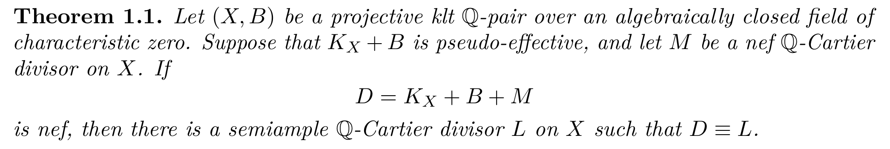

请解释原文的 Nef abundance 方法在光滑 K3 曲面上怎样运作。先看原文的一般证明在这个情形中的具体形式。
How does the original Nef abundance method work on a smooth K3 surface? First explain the specialization of the paper’s general proof.

请解释原文的 Nef abundance 方法在光滑 K3 曲面上怎样运作。先看原文的一般证明在这个情形中的具体形式。
How does the original Nef abundance method work on a smooth K3 surface? First explain the specialization of the paper’s general proof.
这里的 \(B\) 是有效有理边界，还是任意 nef 除子？
Does \(B\) mean an effective rational boundary, or an arbitrary nef divisor?
我指任意 nef 除子 \(B\)，不是有效边界；要看的是 Nef abundance 那篇文章。
I mean an arbitrary nef divisor \(B\), not an effective boundary. The intended paper is the one on Nef abundance.
对应文章是 Numerical Semiampleness of Nef Adjoint Divisors。原文将有效边界记为 \(B\)，将任意 nef 除子记为 \(M\)。沿用你的记号，下文的 \(B\) 表示 nef 除子，对应原文的 \(M\)；原文边界取零。
The corresponding paper is Numerical Semiampleness of Nef Adjoint Divisors. It denotes the effective boundary by \(B\) and the arbitrary nef divisor by \(M\). In your notation, \(B\) below denotes the nef divisor corresponding to the paper’s \(M\); the boundary in the paper is set to zero.
在光滑射影 K3 曲面上，
\[K_X\sim0,\qquad B\ \text{nef 且为 }\mathbb Q\text{-除子}.\]
文章的主定理声称
\[B\equiv A,\qquad A\ \text{semiample}.\]
K3 曲面上数值平凡线丛是平凡线丛，因此这一结论进一步给出
\[B\sim_{\mathbb Q}A\quad\Longrightarrow\quad |mB|\ \text{对某个 }m>0\text{ 无基点}.\]
这里只将文章的结论代入 K3，未验证其证明。待核查的是如何产生 \(A\)，尤其 \(B^2=0\) 时截面从哪里来。
On a smooth projective K3 surface,
\[K_X\sim0,\qquad B\ \text{is a nef }\mathbb Q\text{-divisor}.\]
The main theorem of the paper claims
\[B\equiv A,\qquad A\ \text{is semiample}.\]
A numerically trivial line bundle on a K3 surface is trivial, so this conclusion further gives
\[B\sim_{\mathbb Q}A\quad\Longrightarrow\quad |mB|\ \text{is basepoint-free for some }m>0.\]
This only specializes the paper’s conclusion to K3; its proof has not been checked. What remains to be examined is how the paper produces \(A\), especially where the sections come from when \(B^2=0\).
请将原文证明一般结论的方法代入光滑射影 K3 曲面，不要换成独立的 Riemann–Roch 证明或专门的 K3 定理。目标是数值有效：对 nef Cartier 除子 \(D\)，找到有效 \(\mathbb Q\)-除子 \(E\) 使 \(D\equiv E\)。
Specialize the paper’s proof of the general result to a smooth projective K3 surface; do not replace it with a standalone Riemann–Roch proof or a special K3 theorem. The target is numerical effectivity: for a nef Cartier divisor \(D\), find an effective \(\mathbb Q\)-divisor \(E\) with \(D\equiv E\).
原文的有效边界取零，nef 部分对应这里的 \(D\)。我们考察的是光滑射影曲面 \(X\)、\(K_X\sim0\) 时的一般证明，目标仍是 \(D\equiv E\)。
The effective boundary in the paper is zero, and its nef summand corresponds to our \(D\). We are examining the general proof for a smooth projective surface \(X\) with \(K_X\sim0\); the target remains \(D\equiv E\).
回顾一下 nef reduction 和 nef dimension 的定义。
Recall the definitions of nef reduction and nef dimension.
对 nef 除子 \(D\)，nef reduction 是支配的、几乎全纯的有理映射
\[f_D:X\dashrightarrow Y\]
其纤维连通；在一般的、具有预期维数的紧纤维上，\(D\) 数值平凡。经过非常一般点、且不被收缩的整曲线 \(C\) 满足 \(D\cdot C>0\)。
\[n(X,D)=\dim Y.\]
曲面上 \(n(X,D)=2\) 并不按定义推出 \(D^2>0\)。
For a nef divisor \(D\), the nef reduction is a dominant, almost holomorphic rational map
\[f_D:X\dashrightarrow Y\]
with connected fibres. The divisor \(D\) is numerically trivial on a general compact fibre of the expected dimension. Every integral curve \(C\) through a very general point that is not contracted satisfies \(D\cdot C>0\).
\[n(X,D)=\dim Y.\]
On a surface, \(n(X,D)=2\) does not imply \(D^2>0\) by definition.
为什么 nef dimension 不能是零？
Why can the nef dimension not be zero?
可以是零。\(n(X,D)=0\) 当且仅当 \(D\equiv0\)，此时直接取 \(E=0\)。在处理完这个情形并假设 \(D\not\equiv0\) 后，才只剩 \(n(X,D)=1\) 或 \(2\)。
也不能用“曲线只有可数条”来推出 \(n(X,D)=2\)：K3 上的曲线不必形成可数集，椭圆纤维化就有一族纤维。
It can be zero. We have \(n(X,D)=0\) if and only if \(D\equiv0\), in which case take \(E=0\). Only after treating this case and assuming \(D\not\equiv0\) do the possibilities reduce to \(n(X,D)=1\) or \(2\).
Nor can one infer \(n(X,D)=2\) by claiming that there are only countably many curves: curves on a K3 surface need not form a countable set; an elliptic fibration has a family of fibres.
在 \(D^2=0\) 的情形，怎样排除 \(n(X,D)=2\)？
When \(D^2=0\), how is \(n(X,D)=2\) excluded?
若 \(n(X,D)=1\)，在双有理模型 \(p:\widetilde X\to X\) 上，nef reduction 的下降给出到底曲线的映射 \(f:\widetilde X\to C\)，以及 \(C\) 上的除子 \(A\)，满足
\[p^*D\equiv f^*A,\qquad \deg A\ge0.\]
曲线上 \(A\equiv a[c]\)、\(a\ge0\)。将这一有效数值代表拉回再推前，得到 \(D\) 的有效数值代表。这一步使用下降引理，不只是 nef reduction 的定义。
若 \(n(X,D)=2\)，原文声称：\(K_X\sim0\) 时满 nef dimension 的一般定理推出 \(D\) big，与 \(D^2=0\) 矛盾。它通过 Frobenius 比较喷射估计；两个核心几何估计尚未完整核查，所以这仍是论文声称的排除路径，不是已完成的验证。不能把它改写成不需要 \(K_X\sim0\) 的独立小体积喷射论证。
If \(n(X,D)=1\), descent for the nef reduction on a birational model \(p:\widetilde X\to X\) gives a map \(f:\widetilde X\to C\) to a curve and a divisor \(A\) on \(C\) such that
\[p^*D\equiv f^*A,\qquad \deg A\ge0.\]
On the curve, \(A\equiv a[c]\) with \(a\ge0\). Pulling back this effective numerical representative and then pushing it forward gives an effective numerical representative of \(D\). This uses a descent lemma, not merely the definition of nef reduction.
If \(n(X,D)=2\), the paper claims that its general full-nef-dimension theorem for \(K_X\sim0\) makes \(D\) big, contradicting \(D^2=0\). The proof compares jet estimates via Frobenius. The two core geometric estimates have not been fully audited, so this is the paper’s claimed exclusion route, not a completed verification. It is not a standalone small-volume jet argument that dispenses with \(K_X\sim0\).
这里的两个 jet 命题具体在说什么？
What exactly do the two jet statements say here?
在反例情形，\(X\) 是光滑射影曲面，\(K_X\sim0\)，\(D\) 是 nef Cartier 除子，\(n(X,D)=2\)，\(D^2=0\)。取 ample Cartier 除子 \(A\)，以及正有理数 \(\varepsilon\)，满足
\[(14\varepsilon)^2<\tfrac14,\qquad80\varepsilon<\tfrac34.\]
直接选择正整数 \(r_n\to\infty\)，使
\[P_n=r_n(D+A/n),\qquad P_n^2\longrightarrow\varepsilon^2.\]
例如，略去有限个初始项后，将 \(\varepsilon/\sqrt{(D+A/n)^2}\) 四舍五入到最近的正整数。
原文的第一个声明：对所有充分大的 \(n\)、非常一般的光滑点 \(x\in X\)，对每个 \(k>0\) 使 \(kP_n\) 为 Cartier，以及每个非零截面 \(s\in H^0(X,\mathcal O_X(kP_n))\)，有
\[\operatorname{ord}_x(s)\le4k\sqrt{P_n^2}.\]
这里的消失阶，是在局部平凡化下 \(s_x\in\mathfrak m_x^a\) 所允许的最大 \(a\)。这一核心估计尚未完整核查。
In the counterexample case, \(X\) is a smooth projective surface, \(K_X\sim0\), \(D\) is nef Cartier, \(n(X,D)=2\), and \(D^2=0\). Choose an ample Cartier divisor \(A\) and a positive rational \(\varepsilon\) satisfying
\[(14\varepsilon)^2<\tfrac14,\qquad80\varepsilon<\tfrac34.\]
Directly choose positive integers \(r_n\to\infty\) such that
\[P_n=r_n(D+A/n),\qquad P_n^2\longrightarrow\varepsilon^2.\]
For example, after discarding finitely many initial terms, round \(\varepsilon/\sqrt{(D+A/n)^2}\) to the nearest positive integer.
The first claim in the paper is that, for all sufficiently large \(n\), a very general smooth point \(x\in X\), every \(k>0\) with \(kP_n\) Cartier, and every nonzero section \(s\in H^0(X,\mathcal O_X(kP_n))\),
\[\operatorname{ord}_x(s)\le4k\sqrt{P_n^2}.\]
In a local trivialization, the order is the largest \(a\) such that \(s_x\in\mathfrak m_x^a\). This core estimate has not been fully audited.
第二个声明在辅助空间上。记 \(p_1,p_2:X\times X\to X\)，取
\[\pi:Z=\mathbb P\!\left(p_1^*\mathcal O_X(D)\oplus p_2^*\mathcal O_X(D)\right)\longrightarrow X\times X.\]
使用 \(\pi_*\mathcal O_Z(a)=\operatorname{Sym}^a(p_1^*\mathcal O_X(D)\oplus p_2^*\mathcal O_X(D))\)、\(a\ge0\) 的约定。此时 \(\dim Z=5\)。令
\[\xi=c_1\mathcal O_Z(1),\quad P_{n,i}=\pi^*p_i^*P_n,\quad R_n=P_{n,1}+P_{n,2}+q\xi.\]
原文声称：选定一个固定正整数 \(q\) 后，对所有充分大的 \(n\)，存在不在两个自然截面上的光滑点 \(z\)，使
\[\epsilon(R_n;z)=\inf_{C\ni z}\frac{R_n\cdot C}{\operatorname{mult}_z C}>6.\]
于是，对充分大且可除的 \(k_0\)，有满射
\[H^0(Z,\mathcal O_Z(k_0R_n))\longrightarrow\mathcal O_Z(k_0R_n)_z\otimes_{\mathcal O_{Z,z}}\left(\mathcal O_{Z,z}/\mathfrak m_z^{6k_0+1}\right).\]
也就是说，五个局部坐标中任意总次数不超过 \(6k_0\) 的 Taylor 多项式，都可由一个全局截面实现。这比“存在一个高阶消失截面”更强。
这一满射推论通过在 \(z\) 处吹起 \(b\)、取有理数 \(6<a<\epsilon(R_n;z)\)，利用 \(b^*R_n-aG\) 的 ample 性和 Serre 消失得到；\(G\) 是例外除子。第二个核心几何估计仍未完整核查。两种估计在不同空间上，必须经过原文的 Frobenius 比较，不能仅把它们并列就得出矛盾。
The second claim is on an auxiliary space. Write \(p_1,p_2:X\times X\to X\), and let
\[\pi:Z=\mathbb P\!\left(p_1^*\mathcal O_X(D)\oplus p_2^*\mathcal O_X(D)\right)\longrightarrow X\times X.\]
Use the convention \(\pi_*\mathcal O_Z(a)=\operatorname{Sym}^a(p_1^*\mathcal O_X(D)\oplus p_2^*\mathcal O_X(D))\) for \(a\ge0\). Then \(\dim Z=5\). Set
\[\xi=c_1\mathcal O_Z(1),\quad P_{n,i}=\pi^*p_i^*P_n,\quad R_n=P_{n,1}+P_{n,2}+q\xi.\]
The paper claims that, after choosing a fixed positive integer \(q\), for all sufficiently large \(n\) there is a smooth point \(z\) outside the two natural sections such that
\[\epsilon(R_n;z)=\inf_{C\ni z}\frac{R_n\cdot C}{\operatorname{mult}_z C}>6.\]
Consequently, for sufficiently large divisible \(k_0\), the following map is surjective:
\[H^0(Z,\mathcal O_Z(k_0R_n))\longrightarrow\mathcal O_Z(k_0R_n)_z\otimes_{\mathcal O_{Z,z}}\left(\mathcal O_{Z,z}/\mathfrak m_z^{6k_0+1}\right).\]
Thus every prescribed Taylor polynomial of total degree at most \(6k_0\) in five local coordinates can be realized by a global section. This is stronger than the existence of one section with high vanishing order.
This surjectivity follows by blowing up \(z\), with blowup map \(b\) and exceptional divisor \(G\), choosing a rational \(6<a<\epsilon(R_n;z)\), and using the ampleness of \(b^*R_n-aG\) and Serre vanishing. The second core geometric estimate has not been fully audited. The two estimates live on different spaces: the paper’s Frobenius comparison is needed, and simply juxtaposing them gives no contradiction.
后面的研读回复请用英文写。
Please write the subsequent study explanations in English.
后续笔记与正式引理用英文整理；这里保留对应的双语研读记录。
The subsequent note and formal lemmas are written in English; corresponding bilingual study records are retained here.
请先整理成临时英文学习笔记，写出所讨论引理的具体陈述与证明。
Please prepare a temporary English study note with explicit statements and proofs of the lemmas discussed.
笔记按已讨论内容整理，区分已经展开的曲面步骤与仍待核查的原文断言。
The note separates the surface arguments already expanded from assertions in the original paper that remain unchecked.
直接专门化到曲面，不要留下抽象的低维断言作为额外假设。
Specialize directly to surfaces; do not leave an abstract lower-dimensional assertion as an extra assumption.
一维的正性输入由次数给出：
\[\deg T\ge0,\quad\deg N\ge0,\quad\deg(T+aN)>0\ \text{对某个 }a>0.\]
则对每个 \(c>0\)，\(\deg(T+cN)>0\)，所以 \(T+cN\) big。曲面讨论不再保留一个额外的抽象一维假设。
这里的不 big 来自已设定的 \(D^2=0\)；单独的 \(n(X,D)=2\) 并不意味着不 big。
The dimension-one positivity input follows from degrees:
\[\deg T\ge0,\quad\deg N\ge0,\quad\deg(T+aN)>0\ \text{for some }a>0.\]
Then \(\deg(T+cN)>0\) for every \(c>0\), so \(T+cN\) is big. No additional abstract dimension-one assumption remains in the surface discussion.
Here non-bigness comes from the stipulated \(D^2=0\); \(n(X,D)=2\) alone does not mean that \(D\) is not big.
引理只用编号，不加 scalar bound 等自拟副标题。每个引理写清全部条件，并直接说明曲面情形。
Use plain numbered lemmas without invented subtitles such as “scalar bound.” State every hypothesis explicitly and specialize to surfaces.
采用普通引理编号，逐条列出对象和假设；不以额外副标题代替准确陈述。
Use plain lemma numbering and explicit objects and hypotheses, rather than explanatory subtitles.
能否直接用 \(A/n\) 定义 \(P_n\)，不另外引入小参数？
Can we define \(P_n\) directly using \(A/n\), without introducing an extra small parameter?
可以。直接定义
\[P_n=r_n(D+A/n),\qquad r_n\longrightarrow\infty,\qquad P_n^2\longrightarrow\varepsilon^2.\]
无需额外参数。相应的 \(R_n\) 和喷射估计仍要求 \(n\) 充分大；\(n\) 是序列下标，不是 nef dimension。核心喷射估计和 Frobenius 比较的证明仍未完整核查。
Yes. Define directly
\[P_n=r_n(D+A/n),\qquad r_n\longrightarrow\infty,\qquad P_n^2\longrightarrow\varepsilon^2.\]
No extra parameter is needed. The corresponding \(R_n\) and the jet estimates still require sufficiently large \(n\); \(n\) is the sequence index, not the nef dimension. The proofs of the core jet estimates and the Frobenius comparison remain unaudited.
我说的是 \(1/n\to0\)，不是固定的 \(1/2\)。直接用 \(P_n=r_n(D+A/n)\)，不要再引入 \(t\) 或 \(t_n\)。
I mean \(1/n\to0\), not the fixed value \(1/2\). Use \(P_n=r_n(D+A/n)\) directly, without \(t\) or \(t_n\).
按最终意图采用 \(A/n\)。\(r_n\) 的取整与自交数收敛作为独立初步引理说明。
Use \(A/n\) as intended. Explain integer rounding for \(r_n\) and convergence of the self-intersection in a separate preliminary lemma.
\(P_n^2\to\varepsilon^2\) 是什么意思？这里选取的乘数和 \(R_n\) 有什么区别？
What does \(P_n^2\to\varepsilon^2\) mean? How does the chosen multiplier differ from \(R_n\)?
箭头表示数值自交数的收敛：\(\lim_{n\to\infty}P_n^2=\varepsilon^2\)，不是每个 \(n\) 都满足等式。小写 \(r_n\) 是定义 \(P_n=r_n(D+A/n)\) 的正整数乘数；大写 \(R_n=P_{n,1}+P_{n,2}+q\xi\) 是辅助空间 \(Z\) 上的除子，二者不同。
The arrow means convergence of numerical self-intersection: \(\lim_{n\to\infty}P_n^2=\varepsilon^2\), not equality for each \(n\). The lowercase \(r_n\) is the positive integer multiplier in \(P_n=r_n(D+A/n)\); the uppercase \(R_n=P_{n,1}+P_{n,2}+q\xi\) is a divisor on the auxiliary space \(Z\). They are different.
总能选择这样的 \(r_n\)，使 \(P_n^2\to\varepsilon^2\) 吗？请先把它写成一个初步引理。
Can we always choose such \(r_n\) so that \(P_n^2\to\varepsilon^2\)? State this first as a preliminary lemma.
引理。设 \(X\) 是光滑射影曲面，\(D\) 是 nef Cartier 除子且 \(D^2=0\)，\(A\) 是 ample Cartier 除子。对每个 \(\varepsilon>0\)，存在正整数 \(r_n\to\infty\)，使
\[P_n:=r_n(D+A/n),\qquad P_n^2\longrightarrow\varepsilon^2.\]
证明。令
\[u_n:=\sqrt{(D+A/n)^2}=\sqrt{\frac{2D\cdot A}{n}+\frac{A^2}{n^2}}>0.\]
由 \(D\cdot A\ge0\)、\(A^2>0\) 得到 \(u_n\to0\)。对充分大的 \(n\)，取距离 \(\varepsilon/u_n\) 最近的正整数 \(r_n\)，则
\[|r_nu_n-\varepsilon|\le\frac{u_n}{2}\longrightarrow0,\qquad r_n\longrightarrow\infty.\]
所以
\[P_n^2=(r_nu_n)^2\longrightarrow\varepsilon^2.\]
有限个初始项可以取 \(r_n=1\)。这个初步引理已由上述交数与取整计算核查；不需要 \(K_X\sim0\)，也不需要 \(n(X,D)=2\)。原文的核心喷射估计与 Frobenius 比较仍未完整核查。
Lemma. Let \(X\) be a smooth projective surface, \(D\) a nef Cartier divisor with \(D^2=0\), and \(A\) an ample Cartier divisor. For every \(\varepsilon>0\), there exist positive integers \(r_n\to\infty\) such that
\[P_n:=r_n(D+A/n),\qquad P_n^2\longrightarrow\varepsilon^2.\]
Proof. Set
\[u_n:=\sqrt{(D+A/n)^2}=\sqrt{\frac{2D\cdot A}{n}+\frac{A^2}{n^2}}>0.\]
Since \(D\cdot A\ge0\) and \(A^2>0\), we have \(u_n\to0\). For sufficiently large \(n\), choose \(r_n\) to be the nearest positive integer to \(\varepsilon/u_n\). Then
\[|r_nu_n-\varepsilon|\le\frac{u_n}{2}\longrightarrow0,\qquad r_n\longrightarrow\infty.\]
Hence
\[P_n^2=(r_nu_n)^2\longrightarrow\varepsilon^2.\]
For the finitely many initial terms, take \(r_n=1\). This preliminary lemma has been checked by the intersection calculation and rounding estimate above. Neither \(K_X\sim0\) nor \(n(X,D)=2\) is required. The paper’s core jet estimates and Frobenius comparison remain unaudited.
非常一般点 \(x\) 要随 \(n\) 重新选择吗？
Must the very general point \(x\) be chosen again for each \(n\)?
不需要。对可数多个指标及整数喷射阶的真闭例外集合取并，选取并集之外的同一个 \(x\)，即可同时处理所有指标。这里是非常一般点条件，不是仅删去一个真闭集。
No. Take the union of the proper closed exceptional sets for the countably many indices and integral jet orders, then choose the same \(x\) outside that union. This is a very-general-point condition, not merely removal of one proper closed set.
充分大的阈值 \(N\) 也不依赖点 \(x\)，对吗？
Is the threshold \(N\) independent of the point \(x\)?
陈述要求统一的量词次序：\[\exists N,\{Z_i\}_{i\ge1}\quad\forall x\notin\bigcup_iZ_i\quad\forall n\ge N\quad\forall k\ (kP_n\text{ Cartier})\quad\forall E\in|kP_n|.\]其中 \(N\) 只依赖固定数据与序列；对应的结论为 \(\operatorname{mult}_xE\le4k\sqrt{P_n^2}\)。
The statement uses uniform quantifiers: \[\exists N,\{Z_i\}_{i\ge1}\quad\forall x\notin\bigcup_iZ_i\quad\forall n\ge N\quad\forall k\ (kP_n\text{ Cartier})\quad\forall E\in|kP_n|.\]The integer \(N\) depends only on the fixed data and sequence; the conclusion is \(\operatorname{mult}_xE\le4k\sqrt{P_n^2}\).
主喷射引理要明确 \(X\) 是光滑 K3 曲面，\(D\) 是 nef Cartier 除子且 \(n(X,D)=2\)。
State explicitly in the main jet lemma that \(X\) is a smooth K3 surface and \(D\) is nef Cartier with \(n(X,D)=2\).
保留这些条件，也保留独立假设 \(D^2=0\)；\(n(X,D)=2\) 并不推出 \(D^2=0\)。
Retain these hypotheses and the separate assumption \(D^2=0\); nef dimension two does not imply \(D^2=0\).
使 \(kP_n\) 为 Cartier 的 \(k\) 可以依赖 \(n\) 吗？阈值 \(N\) 和非常一般点 \(x\) 的选择是否统一？
Can the integer \(k\) making \(kP_n\) Cartier depend on \(n\)? Are the threshold \(N\) and the very general point \(x\) chosen uniformly?
可以。\(k=n\) 总能清除 \(P_n=r_n(D+A/n)\) 的分母。阈值 \(N\) 只依赖固定数据 \(X,D,A,\varepsilon,(r_n)\)，不依赖 \(x,k,E\)。
对可数多个 \(n,k\) 和整数喷射阶，将例外的真闭子集取可数并，可得到一个共同的非常一般点集合：其中每个 \(x\) 同时适用于所有 \(n\ge N\)、所有使 \(kP_n\) 为 Cartier 的正整数 \(k\)，以及所有 \(E\in|kP_n|\)。
Yes. The choice \(k=n\) always clears the denominators of \(P_n=r_n(D+A/n)\). The threshold \(N\) depends only on the fixed data \(X,D,A,\varepsilon,(r_n)\), not on \(x,k,E\).
Taking the countable union of exceptional proper closed subsets for the countably many \(n,k\) and integral jet orders gives a common very general locus. Every \(x\) in that locus works simultaneously for all \(n\ge N\), every positive integer \(k\) with \(kP_n\) Cartier, and every \(E\in|kP_n|\).
\(\operatorname{ord}_x(s)\) 是极大理想上的阶吗？是不是取 valuation 的负值？
Is \(\operatorname{ord}_x(s)\) the order with respect to the maximal ideal? Is it the negative of a valuation?
在局部标架中写 \(s=f e\)，则 \[\operatorname{ord}_x(s)=\max\{a\ge0:f\in\mathfrak m_x^a\}.\]对正则截面是非负数，不加负号；更换标架只把 \(f\) 乘以单位，不改变阶。曲面上这是点的消失阶，不能直接混同于某个素除子上的离散赋值。
In a local frame write \(s=f e\). Then \[\operatorname{ord}_x(s)=\max\{a\ge0:f\in\mathfrak m_x^a\}.\]It is nonnegative for a regular section, with no minus sign. Changing the frame multiplies \(f\) by a unit. On a surface this pointwise vanishing order should not be identified directly with a divisorial discrete valuation.
\(\operatorname{ord}_x(s)\) 怎样定义？线丛截面怎样典范地看成函数？改用线性系中有效除子的重数是否更清楚？
How is \(\operatorname{ord}_x(s)\) defined? Can a line-bundle section be viewed canonically as a function? Would the multiplicity of an effective divisor in a linear system be clearer?
采用除子表述：\(E\in|H|\) 表示有效 Cartier 除子 \(E\sim H\)。若 \(g\) 是 \(E\) 在 \(x\) 处的局部方程，则
\[\operatorname{mult}_x(E)=\max\{a\ge0:g\in\mathfrak m_x^a\}.\]
将 \(g\) 乘以单位不改变这个数。若 \(E=(s)_0\) 是非零截面 \(s\) 的零除子，则 \(\operatorname{mult}_x(E)=\operatorname{ord}_x(s)\)。
固定 Cartier 除子 \(H\) 后，可将 \(\mathcal O_X(H)\) 嵌入函数域，使用满足 \(\operatorname{div}(f)+H\ge0\) 的有理函数 \(f\)。若 \(h\) 是 \(H\) 的局部方程，则零除子的局部方程是 \(fh\)，不是单独的 \(f\)。所以截面阶一般不能直接写成有理函数 \(f\) 的阶。最终用 \(E\in|kP_n|\) 与 \(\operatorname{mult}_x(E)\) 即可，不必另加避开支集的条件。
Use divisors: \(E\in|H|\) means an effective Cartier divisor with \(E\sim H\). If \(g\) is a local equation of \(E\) at \(x\), then
\[\operatorname{mult}_x(E)=\max\{a\ge0:g\in\mathfrak m_x^a\}.\]
Multiplying \(g\) by a unit does not change this number. If \(E=(s)_0\) is the zero divisor of a nonzero section \(s\), then \(\operatorname{mult}_x(E)=\operatorname{ord}_x(s)\).
After fixing a Cartier divisor \(H\), one may embed \(\mathcal O_X(H)\) into the function field and use rational functions \(f\) satisfying \(\operatorname{div}(f)+H\ge0\). If \(h\) is a local equation of \(H\), the zero divisor has local equation \(fh\), not \(f\) alone. Thus the section order is not generally the order of the rational function \(f\). The final formulation with \(E\in|kP_n|\) and \(\operatorname{mult}_x(E)\) needs no support-avoidance condition.
这与 Nakayama 的 \(\sigma\)-分解中的重数相似吗？
Is this similar to the multiplicity in Nakayama’s \(\sigma\)-decomposition?
都涉及重数，但 \(\sigma\) 沿素除子 \(\Gamma\) 取有效代表的下确界。对 big 的 \(\mathbb R\)-除子 \(L\)，
\[\sigma_\Gamma(L)=\inf\{\operatorname{mult}_\Gamma\Delta:\Delta\ge0,\ \Delta\sim_{\mathbb R}L\}.\]
对伪有效 \(L\)，先加 ample 扰动再取极限。我们的引理则是对点 \(x\) 处每个 \(E\in|kP_n|\) 给出重数上界，不能混同。参见 Lazić–Xie (2025), Definition 2.12。
Both involve multiplicity, but \(\sigma\) takes an infimum over effective representatives along a prime divisor \(\Gamma\). For a big \(\mathbb R\)-divisor \(L\),
\[\sigma_\Gamma(L)=\inf\{\operatorname{mult}_\Gamma\Delta:\Delta\ge0,\ \Delta\sim_{\mathbb R}L\}.\]
For pseudoeffective \(L\), add an ample perturbation and take the limit. Our lemma instead bounds the multiplicity at a point \(x\) of every \(E\in|kP_n|\) from above. These notions must not be conflated. See Lazić–Xie (2025), Definition 2.12.
请完整陈述曲面情形的重数上界。
State the multiplicity bound completely in the surface case.
当前笔记的引理 2.1（当时尚未按节编号）。 设 \(X\) 是特征零的光滑射影 K3 曲面，\(D\) 是 nef Cartier 除子，且
\[D^2=0,\qquad n(X,D)=2.\]
固定 ample Cartier 除子 \(A\) 及正有理数 \(\varepsilon\)，原文后续比较采用
\[(14\varepsilon)^2<\tfrac14,\qquad80\varepsilon<\tfrac34.\]
选择正整数 \(r_n\to\infty\)，令
\[P_n=r_n(D+A/n),\qquad P_n^2\longrightarrow\varepsilon^2.\]
则存在正整数 \(N\) 及真闭子集 \(Z_i\subsetneq X\)、\(i\ge1\)，使每个 \(x\in X\setminus\bigcup_iZ_i\) 同时满足：对所有 \(n\ge N\)、所有使 \(kP_n\) 为 Cartier 的正整数 \(k\)，以及所有有效除子 \(E\in|kP_n|\)，
\[\operatorname{mult}_x(E)\le4k\sqrt{P_n^2}.\]
\(D^2=0\) 是这里独立的假设，不能由 \(n(X,D)=2\) 推出。下面给出原文方法的曲面展开；这不意味着一般高维定理或剩余 Frobenius 比较已获验证。
Lemma 2.1 in the current note (before section-based numbering in this exchange). Let \(X\) be a smooth projective K3 surface in characteristic zero, and \(D\) a nef Cartier divisor with
\[D^2=0,\qquad n(X,D)=2.\]
Fix an ample Cartier divisor \(A\) and a positive rational \(\varepsilon\). The later comparison in the paper uses
\[(14\varepsilon)^2<\tfrac14,\qquad80\varepsilon<\tfrac34.\]
Choose positive integers \(r_n\to\infty\) and set
\[P_n=r_n(D+A/n),\qquad P_n^2\longrightarrow\varepsilon^2.\]
Then there exist a positive integer \(N\) and proper closed subsets \(Z_i\subsetneq X\), \(i\ge1\), such that every \(x\in X\setminus\bigcup_iZ_i\) satisfies, simultaneously for every \(n\ge N\), every positive integer \(k\) with \(kP_n\) Cartier, and every effective divisor \(E\in|kP_n|\),
\[\operatorname{mult}_x(E)\le4k\sqrt{P_n^2}.\]
The condition \(D^2=0\) is an independent hypothesis; it does not follow from \(n(X,D)=2\). The surface expansion of the original method follows below. This does not verify the general higher-dimensional theorem or the remaining Frobenius comparison.
这里的 \(14\)、\(1/4\)、\(3/4\) 和 \(80\) 重要吗？能把 \(1/4\) 换成 \(1/8\) 吗？
How important are \(14\), \(1/4\), \(3/4\), and \(80\)? Can \(1/4\) be replaced by \(1/8\)?
重数上界的曲面证明只需要固定的有限 \(\varepsilon>0\)，因而 \(\sqrt{P_n^2}\) 有界，而 \(r_n\to\infty\)。上述小常数条件服务于后续 Frobenius 行列式比较。
若矩阵大小为 \(M\)，秩小于 \(M/4\) 给出消失阶下界 \(3M/4\)，要与上界
\[M\bigl(80\varepsilon+O(1/p)\bigr)\]
竞争；\(80=40+40\)。把 \(1/4\) 换成 \(1/8\) 是更强的充分约束。这里没有声称常数最优，也没有完整核查后续比较。
The surface proof of the multiplicity bound only needs a fixed finite \(\varepsilon>0\): then \(\sqrt{P_n^2}\) stays bounded while \(r_n\to\infty\). The small-constant conditions serve the later Frobenius determinant comparison.
For a matrix of size \(M\), rank less than \(M/4\) gives a vanishing-order lower bound \(3M/4\), competing with the upper bound
\[M\bigl(80\varepsilon+O(1/p)\bigr).\]
Here \(80=40+40\). Replacing \(1/4\) by \(1/8\) is a stronger sufficient constraint. No optimality of these constants or full verification of the later comparison is claimed.
请把原文方法的证明补全，不要只给引理陈述。
Please expand the proof following the original method, rather than giving only its statement.
曲面论证分为孤立基点估计、移动曲线估计及主重数上界；完整证明写入笔记。后面的辅助几何断言和 Frobenius 比较仍须另外核查。
The surface argument is organized into the isolated-base-point estimate, the moving-curve estimate and the main multiplicity bound, with full proofs in the note. The later auxiliary geometric assertion and Frobenius comparison still require separate checking.
请把原文方法在曲面上的证明展开。
Expand the proof of the original method on surfaces.
以下保留当时的通用阈值写法；后续讨论将其专门化为固定阈值，并简化引理 1.3 的陈述。
先用孤立基点估计 \(h^2\le k^2P^2\)；其线性系中的交数论证在后面说明。第二个输入来自完整喷射核。固定 \(P,k\)，取等距阈值 \(\tau_0<\tau_1<\tau_2\)，间隔 \(\delta>0\)，\(k\delta\ge4\)，并令
\[\mathcal H_i(y)=H^0(X,\mathcal O_X(kP)\otimes\mathfrak m_y^{\lceil k\tau_i\rceil}).\]
假设三个核在非常一般的 \(y\) 非零，最低核的基点集有经过 \(y\) 的曲线。喷射映射的秩在稠密开集上恒定，核构成向量丛；其基点集满足 \(B_0(y)\subseteq B_1(y)\subseteq B_2(y)\)。
在曲面上，真闭集至多一维，所以 \(B_0(y)\) 的一个曲线分支仍是 \(B_1(y)\) 的分支。有限参数域扩张并缩小开集后，得到光滑参数曲面 \(T\)、支配的泛有限标记点映射 \(y:T\to X\)，以及共同基曲线族 \(C_t\)。关联
\[\Gamma=\{(t,z):z\in C_t\}\subset T\times X\]
支配 \(X\)，因为 \(y(t)\in C_t\)。设 \(h=\lceil k\delta/2\rceil\)。较高核 \(\mathcal H_1\) 的局部标架截面可写成
\[s(t,z)=\sum_\alpha c_\alpha(t)s_\alpha(z).\]
固定 \(z\) 作参数求导，仍得到全局截面；每次求导至多降低标记点处一阶消失。对 \(a<h\)，
\[\lceil k\tau_1\rceil-\lceil k\tau_0\rceil\ge k\delta-1\ge h-1\ge a,\]
故这些导数属于 \(\mathcal H_0(y(t))\)，并在 \(\Gamma\) 上消失。
特征零时，在 \(\Gamma\) 的一般光滑点，\(\Gamma\to X\) 是浸没，参数方向张成法方向。取横截参数 \(t_1\)，形式局部坐标中可写 \(u=t_1-F(t_2,z)\)，且固定 \(t_2,z\) 时 \(\partial_{t_1}=\partial_u\)。低于 \(h\) 阶的导数消失，迫使 \(u^a\)、\(a<h\) 的系数全为零，故 \(s\in\mathcal I_\Gamma^h\)。完备化的忠实平坦性将包含关系带回代数局部环。
限制到一般纤维，对整个 \(\mathcal H_1\) 中的截面都有 \(E\ge hC_t\)。因此
\[0<P\cdot C_t\le(k/h)P^2\le(2/\delta)P^2.\]
这就是所需的移动曲线估计，不调用特殊 K3 结果、独立 Riemann–Roch 证明或高维次伴随估计。
This retains the general-threshold formulation discussed at that stage; later exchanges specialize the thresholds and simplify Lemma 1.3.
First use the isolated-base-point estimate \(h^2\le k^2P^2\); its intersection argument inside the linear system is explained below. The second input uses the full jet kernels. Fix \(P,k\), take equally spaced levels \(\tau_0<\tau_1<\tau_2\) with gap \(\delta>0\), \(k\delta\ge4\), and set
\[\mathcal H_i(y)=H^0(X,\mathcal O_X(kP)\otimes\mathfrak m_y^{\lceil k\tau_i\rceil}).\]
Assume all three kernels are nonzero for very general \(y\), and the lowest kernel has a base curve through \(y\). Jet evaluation has constant rank on a dense open, so its kernels are vector bundles, with nested base loci \(B_0(y)\subseteq B_1(y)\subseteq B_2(y)\).
A proper closed subset of a surface has dimension at most one, so a curve component of \(B_0(y)\) remains a component of \(B_1(y)\). After a finite parameter-field extension and shrinking, obtain a smooth parameter surface \(T\), a dominant generically finite marked-point map \(y:T\to X\), and a family of common base curves \(C_t\). The incidence
\[\Gamma=\{(t,z):z\in C_t\}\subset T\times X\]
dominates \(X\), since \(y(t)\in C_t\). Set \(h=\lceil k\delta/2\rceil\). A local frame section of the higher kernel \(\mathcal H_1\) has the form
\[s(t,z)=\sum_\alpha c_\alpha(t)s_\alpha(z).\]
Parameter differentiation with \(z\) fixed again gives global sections and lowers vanishing at the moving mark by at most one per derivative. For \(a<h\),
\[\lceil k\tau_1\rceil-\lceil k\tau_0\rceil\ge k\delta-1\ge h-1\ge a.\]
Thus these derivatives belong to \(\mathcal H_0(y(t))\) and vanish along \(\Gamma\).
In characteristic zero, \(\Gamma\to X\) is submersive at a general smooth point, so parameter directions span the normal direction. Choose a transverse parameter \(t_1\). In formal local coordinates, write \(u=t_1-F(t_2,z)\); with \(t_2,z\) fixed, \(\partial_{t_1}=\partial_u\). Vanishing of all derivatives below order \(h\) kills the coefficients of \(u^a\) for \(a<h\), giving \(s\in\mathcal I_\Gamma^h\). Faithful flatness of completion brings this containment back to the algebraic local ring.
Restricting to a general fibre gives \(E\ge hC_t\) for every section of the full \(\mathcal H_1\). Consequently,
\[0<P\cdot C_t\le(k/h)P^2\le(2/\delta)P^2.\]
This is the required moving-curve estimate, without a special K3 result, a separate Riemann–Roch proof, or a higher-dimensional subadjunction estimate.
以下保留当时的通用阈值写法；后续讨论将其专门化为固定阈值，并简化引理 1.3 的陈述。
若所需上界在任意大的指标处泛性地失败，固定这样的 \(n\)，记 \(P=P_n\)、\(r=r_n\)、\(\rho=\sqrt{P^2}\)。喷射秩条件是代数条件；将违反上界的除子取倍数，可使 \(k\) 任意大且可除。取
\[\delta=\rho,\qquad\tau_0=\tfrac32\rho,\quad\tau_1=\tfrac52\rho,\quad\tau_2=\tfrac72\rho.\]
对充分大可除的 \(k\)，三个完整核非零且 \(k\delta\ge4\)。最低核若只有孤立基点，取 \(h_0=\lceil3k\rho/2\rceil\)，孤立基点估计给出
\[1\le(k/h_0)^2P^2\le\tfrac49<1.\]
因此标记点处有基曲线。移动曲线估计给出覆盖曲线族，满足 \(0<P\cdot C\le2\rho\)。选择足够非常一般的标记点，\(n(X,D)=2\) 和 Cartier 性给出 \(D\cdot C\ge1\)，而 \(P-rD=(r/n)A\) nef。因此
\[r\le rD\cdot C\le P\cdot C\le2\rho.\]
这与 \(r_n\to\infty\)、\(\rho_n\to\varepsilon<\infty\) 矛盾。于是存在仅依赖固定数据与序列的统一 \(N\)；对可数多个指标、Cartier 倍数和喷射阶的例外秩集合取并，得到陈述中的共同非常一般点集合。
曲面的两个辅助输入已展开以上证明。一般高维输入和剩余 Frobenius 比较仍未审查；我们尚未证明目标 \(D\equiv E\)、\(E\ge0\)。
This retains the general-threshold formulation discussed at that stage; later exchanges specialize the thresholds and simplify Lemma 1.3.
If the required bound fails generically at arbitrarily large indices, fix such an \(n\) and write \(P=P_n\), \(r=r_n\), \(\rho=\sqrt{P^2}\). Jet-rank conditions are algebraic. Taking multiples of a violating divisor makes \(k\) arbitrarily large and divisible. Choose
\[\delta=\rho,\qquad\tau_0=\tfrac32\rho,\quad\tau_1=\tfrac52\rho,\quad\tau_2=\tfrac72\rho.\]
For sufficiently large divisible \(k\), all three full kernels are nonzero and \(k\delta\ge4\). If the lowest kernel had an isolated base point, setting \(h_0=\lceil3k\rho/2\rceil\) would give
\[1\le(k/h_0)^2P^2\le\tfrac49<1\]
by the isolated-base-point estimate. Hence there is a base curve through the mark. The moving-curve estimate gives a covering family with \(0<P\cdot C\le2\rho\). At a sufficiently very general mark, \(n(X,D)=2\) and the Cartier property imply \(D\cdot C\ge1\), while \(P-rD=(r/n)A\) is nef. Therefore
\[r\le rD\cdot C\le P\cdot C\le2\rho.\]
This contradicts \(r_n\to\infty\) and \(\rho_n\to\varepsilon<\infty\). Thus a uniform \(N\) depends only on the fixed data and sequence. Taking the union of exceptional rank loci for countably many indices, Cartier multiples, and jet orders gives the common very general locus in the statement.
The two surface auxiliary inputs have been expanded above. The general higher-dimensional inputs and the remaining Frobenius comparison are still unaudited; our target \(D\equiv E\), \(E\ge0\), has not yet been proved.
这里的线性系 \(\Lambda\) 起什么作用？为什么不能在全线性系里任取两个除子？如果它的基点并不孤立呢？
What role does the linear system \(\Lambda\) play? Why not choose two arbitrary divisors from the complete linear system? What if its base point is not isolated?
当前笔记的引理 1.2。 设 \(X\) 是光滑射影曲面，\(P\) 是 ample \(\mathbb Q\)-Cartier 除子，\(k,h\) 是正整数，\(kP\) 为 Cartier。设 \(\Lambda\subseteq|kP|\) 是非空线性子系，\(y\) 是其孤立基点，且每个 \(E\in\Lambda\) 都满足 \(\operatorname{mult}_y(E)\ge h\)。则
\[h^2\le k^2P^2.\]
证明：记 \(F\) 为 \(\Lambda\) 的固定除子部分，取一般的 \(E_1\in\Lambda\)，写成 \(E_1=E_1^{\prime}+F\)。则 \(E_1^{\prime}\) 有效且不含 \(F\) 的分量。因 \(y\) 是孤立基点，\(y\notin\operatorname{Supp}F\)，故 \(\operatorname{mult}_y(E_1^{\prime})=\operatorname{mult}_y(E_1)\ge h\)。
剩余子系 \(\Lambda-F\) 没有固定曲线。故一般的 \(E_2\in\Lambda\) 避开 \(E_1^{\prime}\) 的所有分量，二者正常相交，且 \(\operatorname{mult}_y(E_2)\ge h\)。由局部交数不等式和 \(P\) 的 nef 性，
\[\begin{aligned}h^2&\le\operatorname{mult}_y(E_1^{\prime})\operatorname{mult}_y(E_2)\le i_y(E_1^{\prime},E_2)\\&\le E_1^{\prime}\cdot E_2=kP\cdot E_1^{\prime}\le kP\cdot E_1=k^2P^2.\end{aligned}\]
\(\Lambda\) 提供重数与基点条件；\(E_i\in|kP|\) 提供线性等价类。这里不需要 K3 假设，也不需要 \(K_X\sim0\)。若 \(h>k\sqrt{P^2}\)，非空子系的基点 \(y\) 不可能孤立，因此有经过 \(y\) 的共同基曲线。
应用时，\(\Lambda_y\) 是完整喷射核给出的非空高重数子系。记 \(\rho=\sqrt{P^2}\)，取 \(h=\lceil3k\rho/2\rceil\)。若 \(y\) 孤立，则
\[\tfrac94k^2\rho^2\le h^2\le k^2P^2=k^2\rho^2,\]
矛盾。故这里非孤立是结论，不是前提：标记点处有共同基曲线。随 \(y\) 变化构造曲线族并估计次数，是接下来的移动曲线步骤。
Lemma 1.2 in the current note. Let \(X\) be a smooth projective surface, let \(P\) be an ample \(\mathbb Q\)-Cartier divisor, and let \(k,h\) be positive integers with \(kP\) Cartier. Let \(\Lambda\subseteq|kP|\) be a nonempty linear subsystem. Suppose \(y\) is an isolated base point and every \(E\in\Lambda\) satisfies \(\operatorname{mult}_y(E)\ge h\). Then
\[h^2\le k^2P^2.\]
Proof. Let \(F\) be the fixed divisorial part of \(\Lambda\). Choose a general \(E_1\in\Lambda\) and write \(E_1=E_1^{\prime}+F\). Then \(E_1^{\prime}\) is effective and contains no component of \(F\). Since \(y\) is an isolated base point, \(y\notin\operatorname{Supp}F\), so \(\operatorname{mult}_y(E_1^{\prime})=\operatorname{mult}_y(E_1)\ge h\).
The residual subsystem \(\Lambda-F\) has no fixed curves. A general \(E_2\in\Lambda\) therefore avoids every component of \(E_1^{\prime}\). The two divisors meet properly, and \(\operatorname{mult}_y(E_2)\ge h\). The local intersection inequality and nefness of \(P\) give
\[\begin{aligned}h^2&\le\operatorname{mult}_y(E_1^{\prime})\operatorname{mult}_y(E_2)\le i_y(E_1^{\prime},E_2)\\&\le E_1^{\prime}\cdot E_2=kP\cdot E_1^{\prime}\le kP\cdot E_1=k^2P^2.\end{aligned}\]
The subsystem \(\Lambda\) supplies the multiplicity and base-locus conditions; membership in \(|kP|\) supplies the linear equivalence class. Neither the K3 hypothesis nor \(K_X\sim0\) is needed here. If \(h>k\sqrt{P^2}\), the base point \(y\) of the nonempty subsystem cannot be isolated, so a common base curve passes through \(y\).
In the application, \(\Lambda_y\) is the nonempty high-multiplicity subsystem defined by the full jet kernel. Write \(\rho=\sqrt{P^2}\) and take \(h=\lceil3k\rho/2\rceil\). If \(y\) were isolated, then
\[\tfrac94k^2\rho^2\le h^2\le k^2P^2=k^2\rho^2,\]
a contradiction. Non-isolation is therefore the conclusion, not a premise: there is a common base curve through the mark. Varying \(y\) to construct a curve family and bound its degree is the next moving-curve step.
这里是原有一般方案在曲面上的展开，并没有换成特殊 K3 定理，对吗？
Is this the surface form of the original general method, rather than a replacement using special K3 theorems?
是。孤立基点与移动曲线步骤只用曲面交数、喷射核及特征零的参数求导；不使用独立 Riemann–Roch 证明。后续原文比较涉及典范条件，不能据此前两步就宣布数值有效性已证。
Yes. The isolated-base-point and moving-curve steps use surface intersections, jet kernels and parameter differentiation in characteristic zero, without an independent Riemann–Roch proof. The later comparison uses canonical assumptions; these two steps alone do not establish numerical effectivity.
证明的第一段究竟要得到什么？
What is the first part of the proof intended to establish?
它证明：非空子系的成员都在 \(y\) 处有重数至少 \(h\)，而 \(y\) 是孤立基点时，必有 \(h^2\le k^2P^2\)。所以 \(h>k\sqrt{P^2}\) 会迫使基点集含经过 \(y\) 的曲线。后面再追踪该曲线并估计次数。
It shows that if every member of a nonempty subsystem has multiplicity at least \(h\) at an isolated base point \(y\), then \(h^2\le k^2P^2\). Thus \(h>k\sqrt{P^2}\) forces a base curve through \(y\); the next step tracks that curve and bounds its degree.
base ideal 就是线性系所有局部函数生成的理想吗？
Is the base ideal generated by the local functions representing the sections of the linear system?
是。选取 \(\mathcal O_X(kP)\) 的局部标架，把生成截面写成 \(f_j e\)，基理想为 \((f_j)_j\)，基点集是其零点集。更换标架乘以单位，不改变这个理想；用 \(\Lambda\) 的所有成员或一组生成截面得到相同基理想。
Yes. In a local frame of \(\mathcal O_X(kP)\), write generating sections as \(f_j e\). The base ideal is \((f_j)_j\), and its zero locus is the base locus. Changing the frame multiplies the functions by a unit. All members of \(\Lambda\), or any spanning collection of sections, generate the same ideal.
用线性系表述：每个成员在 \(y\) 的 multiplicity 都至少为 \(h\)。
Use the linear-system formulation: every member has multiplicity at least \(h\) at \(y\).
改写为非空 \(\Lambda\subseteq|kP|\) 及 \(\operatorname{mult}_yE\ge h\)；不把截面直接称为函数。
Use a nonempty \(\Lambda\subseteq|kP|\) and \(\operatorname{mult}_yE\ge h\), without calling an abstract section a function.
把初步引理单列一节，主喷射估计从新的一节开始。
Place the preliminary lemmas in their own section and begin the main jet estimates in a new section.
初步引理为 1.1、1.2、1.3，主估计为 2.1，后接 2.2、2.3；编号与完整证明保持对应。
The preliminary lemmas are 1.1, 1.2 and 1.3; the main estimate is 2.1, followed by 2.2 and 2.3. Numbering and complete proofs remain aligned.
一般的 \(E_1,E_2\) 真能没有公共分量吗？孤立基点是否排除了别处的固定曲线？
Can general \(E_1,E_2\) really have no common component? Does an isolated base point rule out fixed curves elsewhere?
不排除别处的固定曲线。写 \(E_1=E_1^{\prime}+F\)，其中 \(F\) 为固定除子部分，且 \(y\notin\operatorname{Supp}F\)。移动部分无固定曲线，一般 \(E_1^{\prime}\) 不含 \(F\) 的分量，再选一般 \(E_2\) 避开 \(E_1^{\prime}\) 的全部分量。应计算 \(E_1^{\prime}\cdot E_2\)，不能未经去除固定部分就断言 \(E_1,E_2\) 全局正常相交。
It does not rule out fixed curves elsewhere. Write \(E_1=E_1^{\prime}+F\), where \(F\) is the fixed divisorial part and \(y\notin\operatorname{Supp}F\). The moving part has no fixed curve; general \(E_1^{\prime}\) contains no component of \(F\), and general \(E_2\) avoids every component of \(E_1^{\prime}\). Compute \(E_1^{\prime}\cdot E_2\), rather than assuming global proper intersection of \(E_1,E_2\) before removing the fixed part.
去掉固定部分后，\(E_1^{\prime}\) 与 \(E_2\) 没有公共分支；用局部交数非负及整体交数是其和，能否简化证明？
After removing the fixed part, \(E_1^{\prime}\) and \(E_2\) have no common component. Can nonnegative local intersections and their sum simplify the proof?
可以。\[h^2\le\operatorname{mult}_yE_1^{\prime}\operatorname{mult}_yE_2\le i_y(E_1^{\prime},E_2)\le E_1^{\prime}\cdot E_2=kP\cdot E_1^{\prime}\le k^2P^2.\]最后一步一般是 \(\le\)，不是等号；固定部分 \(F\ne0\) 时不能把 \(kP\cdot E_1^{\prime}\) 写成 \(k^2P^2\)。无需另加冗长的吹起论证。
Yes. \[h^2\le\operatorname{mult}_yE_1^{\prime}\operatorname{mult}_yE_2\le i_y(E_1^{\prime},E_2)\le E_1^{\prime}\cdot E_2=kP\cdot E_1^{\prime}\le k^2P^2.\]The last comparison is generally \(\le\), not equality: if \(F\ne0\), one cannot identify \(kP\cdot E_1^{\prime}\) with \(k^2P^2\). No lengthy blow-up detour is needed.
\(i_y(E_1,E_2)\) 是在 \(y\) 处的局部交数吗？它与整体交数有什么关系？
Is \(i_y(E_1,E_2)\) the local intersection multiplicity at \(y\)? How does it relate to the global intersection number?
是。若局部方程 \(g_1,g_2\) 没有经过 \(y\) 的公共曲线，则
\[i_y(E_1,E_2)=\operatorname{length}_{\mathcal O_{X,y}}\bigl(\mathcal O_{X,y}/(g_1,g_2)\bigr)\ge\operatorname{mult}_y(E_1)\operatorname{mult}_y(E_2).\]
这个长度有限。对没有公共分量的有效除子，整体交数是所有实际交点处的正局部交数之和；非交点处贡献为零。因此在上面的证明中 \(i_y(E_1^{\prime},E_2)\le E_1^{\prime}\cdot E_2\)。局部交数与整体交数不是同一个数。
Yes. If local equations \(g_1,g_2\) have no common curve through \(y\), then
\[i_y(E_1,E_2)=\operatorname{length}_{\mathcal O_{X,y}}\bigl(\mathcal O_{X,y}/(g_1,g_2)\bigr)\ge\operatorname{mult}_y(E_1)\operatorname{mult}_y(E_2).\]
This length is finite. For effective divisors with no common component, the global intersection is the sum of the positive local intersection multiplicities at the actual intersection points; nonintersection points contribute zero. Thus the proof above uses \(i_y(E_1^{\prime},E_2)\le E_1^{\prime}\cdot E_2\). The local and global intersection numbers are distinct.
把设定移到文章开头即可，不更改假设：特征零，\(X\) 光滑射影曲面，\(K_X\sim0\)，\(D\) nef Cartier，\(n(X,D)=2\)，\(D^2=0\)。
Move the setup to the beginning without changing the hypotheses: characteristic zero, \(X\) a smooth projective surface, \(K_X\sim0\), \(D\) nef Cartier, \(n(X,D)=2\), and \(D^2=0\).
采用最终澄清后的原假设，不把 nef dimension 改成 numerical dimension，也不删掉 \(K_X\sim0\)。光滑曲面上不重复添加“光滑点”限定；初步引理仍只使用各自列明的条件。
Retain the hypotheses after the final clarification: do not replace nef dimension by numerical dimension or remove \(K_X\sim0\). Avoid redundant smooth-point qualifiers on a smooth surface; preliminary lemmas use only their explicitly stated assumptions.
喷射空间能否直接写成满足重数条件的线性子系？
Can the jet spaces be written directly as linear subsystems defined by multiplicity conditions?
可以。写成
\[\Lambda_i(y)=\{E\in|kP|:\operatorname{mult}_y(E)\ge\lceil k\tau_i\rceil\},\qquad i=0,1,2.\]
条件是弱不等式 \(\ge\)，不是 \(>\)。这些子系是相应截面核的射影化，可能为空；引理的假设要求它们在非常一般点处非空。
除子及重数是主要表述，但参数求导仍须使用底层截面核向量丛 \(V_i\) 的截面代表，不能把除子本身当作可线性求导的函数。
Yes. Write
\[\Lambda_i(y)=\{E\in|kP|:\operatorname{mult}_y(E)\ge\lceil k\tau_i\rceil\},\qquad i=0,1,2.\]
The condition is the weak inequality \(\ge\), not \(>\). These subsystems are the projectivizations of the corresponding section kernels and may be empty; the lemma assumes they are nonempty at very general points.
Divisors and multiplicities are the primary formulation, but parameter differentiation still uses section representatives from the underlying section-kernel vector bundles \(V_i\). Divisors themselves are not functions that can be linearly differentiated.
等间隔的条件能否写成公式？\(\tau_i\) 和 \(\delta\) 是整数、有理数，还是实数？
Can the equal-gap condition be written as equations? Are \(\tau_i\) and \(\delta\) integers, rational numbers, or real numbers?
它们是正实数，不必是整数或有理数。准确条件为
\[\tau_0,\tau_1,\tau_2,\delta\in\mathbb R_{>0},\qquad\tau_0<\tau_1<\tau_2,\]
\[\tau_1-\tau_0=\tau_2-\tau_1=\delta,\qquad k\delta\ge4.\]
例如后来取 \(\rho=\sqrt{P^2}\)、\(\delta=\rho\)，以及 \(\tau_0=3\rho/2\)、\(\tau_1=5\rho/2\)、\(\tau_2=7\rho/2\)，这些值可能无理。重数阈值 \(\lceil k\tau_i\rceil\) 才是正整数。
They are positive real numbers, not necessarily integers or rational numbers. The precise conditions are
\[\tau_0,\tau_1,\tau_2,\delta\in\mathbb R_{>0},\qquad\tau_0<\tau_1<\tau_2,\]
\[\tau_1-\tau_0=\tau_2-\tau_1=\delta,\qquad k\delta\ge4.\]
For example, the later choices \(\rho=\sqrt{P^2}\), \(\delta=\rho\), \(\tau_0=3\rho/2\), \(\tau_1=5\rho/2\), and \(\tau_2=7\rho/2\) may be irrational. The multiplicity threshold \(\lceil k\tau_i\rceil\) is the positive integer.
前面的辅助论证究竟证明什么？能否作为独立的移动曲线估计来理解？
What does the auxiliary argument establish? Can it be understood as an independent moving-curve estimate?
以下保留当时的通用阈值写法；后续讨论将其专门化为固定阈值，并简化引理 1.3 的陈述。
它证明移动曲线估计，即引理 1.3。设 \(X\) 为特征零的光滑射影曲面，\(P\) 为 ample \(\mathbb Q\)-Cartier 除子，\(k\) 为正整数且 \(kP\) 为 Cartier。采用上述正实数等间隔阈值，并假设在非常一般的 \(y\) 处，三个 \(\Lambda_i(y)\) 非空，且 \(\operatorname{Bs}\Lambda_0(y)\) 含有经过 \(y\) 的曲线。
经过标记点参数的泛有限扩张并缩小到稠密开集，可得光滑整参数曲面 \(T\)、支配的泛有限映射 \(y:T\to X\)，以及经过 \(y(t)\) 的整曲线族 \(C_t\)，其关联支配 \(X\)。对一般的 \(t\)，每个 \(E\in\Lambda_1(y(t))\) 满足
\[E\ge hC_t,\qquad h=\lceil k\delta/2\rceil,\qquad0<P\cdot C_t\le(k/h)P^2\le2P^2/\delta.\]
追踪共同曲线分量并对截面代表作参数求导，给出沿 \(C_t\) 的重数；再与 ample 除子 \(P\) 相交，得到次数上界。这个辅助估计不要求 K3、\(K_X\sim0\) 或 nef 维数假设；它仍是原有方案的曲面步骤，不能据此宣称数值有效性目标已经证明。
This retains the general-threshold formulation discussed at that stage; later exchanges specialize the thresholds and simplify Lemma 1.3.
It proves the moving-curve estimate, Lemma 1.3. Let \(X\) be a smooth projective surface in characteristic zero, let \(P\) be an ample \(\mathbb Q\)-Cartier divisor, and let \(k\) be a positive integer with \(kP\) Cartier. Use the positive real equal-gap thresholds above. Assume that at very general \(y\), all three \(\Lambda_i(y)\) are nonempty and \(\operatorname{Bs}\Lambda_0(y)\) contains a curve through \(y\).
After a generically finite change of the marked-point parameter and restriction to dense opens, there are a smooth integral parameter surface \(T\), a dominant generically finite map \(y:T\to X\), and integral curves \(C_t\) through \(y(t)\) whose incidence dominates \(X\). For general \(t\), every \(E\in\Lambda_1(y(t))\) satisfies
\[E\ge hC_t,\qquad h=\lceil k\delta/2\rceil,\qquad0<P\cdot C_t\le(k/h)P^2\le2P^2/\delta.\]
Tracking a common curve component and differentiating section representatives in the parameters gives the multiplicity along \(C_t\). Intersecting with the ample divisor \(P\) gives the degree bound. This auxiliary estimate needs no K3, \(K_X\sim0\), or nef-dimension hypothesis. It remains a surface step of the original scheme and does not establish the numerical-effectivity target.
不必引入 \(B_i\) 这个新记号，直接写基点集。
Do not introduce the extra shorthand \(B_i\); write the base loci explicitly.
统一写 \(\operatorname{Bs}\Lambda_i(y)\)，保留线性系与基点集的反向包含关系。
Write \(\operatorname{Bs}\Lambda_i(y)\) throughout, preserving the reversed inclusions between systems and their base loci.
是不是 \(\Lambda_0(y)\) 包含 \(\Lambda_1(y)\)，后者又包含 \(\Lambda_2(y)\)？基点集的包含关系是什么？
Does \(\Lambda_0(y)\) contain \(\Lambda_1(y)\), which in turn contains \(\Lambda_2(y)\)? What is the corresponding relation between their base loci?
是，一般只能写非严格包含。因为
\[\lceil k\tau_0\rceil\le\lceil k\tau_1\rceil\le\lceil k\tau_2\rceil,\qquad\Lambda_0(y)\supseteq\Lambda_1(y)\supseteq\Lambda_2(y).\]
在这些子系非空时，基点集是所有成员支集的交：
\[\operatorname{Bs}\Lambda_i(y)=\bigcap_{E\in\Lambda_i(y)}\operatorname{Supp}(E).\]
提高重数条件会减少允许的成员，因此共同基点集增大，包含关系反向：
\[\operatorname{Bs}\Lambda_0(y)\subseteq\operatorname{Bs}\Lambda_1(y)\subseteq\operatorname{Bs}\Lambda_2(y).\]
Yes; the inclusions are generally non-strict. Since
\[\lceil k\tau_0\rceil\le\lceil k\tau_1\rceil\le\lceil k\tau_2\rceil,\qquad\Lambda_0(y)\supseteq\Lambda_1(y)\supseteq\Lambda_2(y).\]
For these nonempty subsystems, the base locus is the intersection of the supports of all members:
\[\operatorname{Bs}\Lambda_i(y)=\bigcap_{E\in\Lambda_i(y)}\operatorname{Supp}(E).\]
Increasing the multiplicity requirement removes permitted members, so their common base locus grows. The inclusions reverse:
\[\operatorname{Bs}\Lambda_0(y)\subseteq\operatorname{Bs}\Lambda_1(y)\subseteq\operatorname{Bs}\Lambda_2(y).\]
引理 1.3 的陈述太长了，真正需要什么？删掉不必要的结论。
Lemma 1.3 is too long. What is actually needed? Remove unnecessary conclusions.
只需要经过非常一般点的整曲线及其次数上界。参数曲面 \(T\)、曲线族、关联、\(E\ge hC_t\) 等留在完整证明中，不作为陈述的额外结论。
Only an integral curve through a very general point and its degree bound are needed. Keep the parameter surface \(T\), curve family, incidence and \(E\ge hC_t\) in the full proof, rather than as additional conclusions in the statement.
引理 2.1 是否真的需要 \(\tau_0,\tau_1,\tau_2\)？引理 1.3 能否只用 \(\rho\)？
Does Lemma 2.1 actually need \(\tau_0,\tau_1,\tau_2\)? Can Lemma 1.3 use only \(\rho\)?
可以把通用阈值专门化。证明中令 \(\rho=\sqrt{P^2}\)，取足够大的倍数使 \(k\rho\ge4\)，直接定义 \[\Lambda_i(y)=\{E\in|kP|:\operatorname{mult}_yE\ge\lceil(2i+3)k\rho/2\rceil\},\quad i=0,1,2.\]移动曲线次数上界成为 \(2\rho\)，主引理直接调用该结论，不重复引入三个阈值。
The general thresholds can be specialized. Set \(\rho=\sqrt{P^2}\) in the proof and take a sufficiently large multiple so that \(k\rho\ge4\). Define directly \[\Lambda_i(y)=\{E\in|kP|:\operatorname{mult}_yE\ge\lceil(2i+3)k\rho/2\rceil\},\quad i=0,1,2.\]The moving-curve bound becomes \(2\rho\), and the main lemma invokes it without introducing the three thresholds again.
按这个改法，陈述和证明都不要再出现 \(\tau_i\)，直接取固定数值。陈述也可直接写根号，不必再定义 \(\rho\)。
Apply this change: remove \(\tau_i\) from the statement and proof and use the fixed values directly. The statement can use the square root without defining \(\rho\).
完整证明保留，阈值固定为 \(\lceil3k\rho/2\rceil\)、\(\lceil5k\rho/2\rceil\)、\(\lceil7k\rho/2\rceil\)；陈述只保留假设、整曲线及根号形式的次数界。
Retain the full proof with thresholds \(\lceil3k\rho/2\rceil\), \(\lceil5k\rho/2\rceil\) and \(\lceil7k\rho/2\rceil\). Keep only the hypotheses, integral curve and square-root degree bound in the statement.
固定 \(k\) 时，存在 \(E\in|kP|\) 且 \(\operatorname{mult}_yE>4k\sqrt{P^2}\) 的假设，可以把 very general 改为 general 吗？
For fixed \(k\), can “very general” be replaced by “general” in the hypothesis that some \(E\in|kP|\) has \(\operatorname{mult}_yE>4k\sqrt{P^2}\)?
可以，而且这个固定线性系的存在性若对非常一般点成立，就对每一点成立。令 \(q=\lfloor4k\sqrt{P^2}\rfloor+1\)，条件等价于 \((q-1)\)-阶喷射评价映射有非零核。
光滑 \(X\) 上喷射丛局部自由，该秩降低集合是闭集；包含非常一般点的闭集只能是整个 \(X\)。除子 \(E\) 可以随 \(y\) 改变。
这只加强固定 \(k\) 的高重数存在性假设，不把整曲线结论加强成“经过每一点”。对可数多个 \(k\) 的合并问题，仍须注意 general 与 very general 的区别。
Yes. For this fixed linear system, existence at a very general point implies existence at every point. Put \(q=\lfloor4k\sqrt{P^2}\rfloor+1\); the condition is equivalent to a nonzero kernel of the \((q-1)\)-jet evaluation map.
On smooth \(X\), the jet bundle is locally free, so the rank-drop locus is closed. If it contains very general points, it is all of \(X\). The divisor \(E\) may vary with \(y\).
This strengthens only the fixed-\(k\) high-multiplicity hypothesis, not the curve conclusion to every point. When combining countably many values of \(k\), the distinction between general and very general still matters.
引理 1.3 能否直接用 ample Cartier 除子，把原来的 \(k\) 吸收到除子里？
Can Lemma 1.3 use an ample Cartier divisor directly, absorbing the original \(k\) into that divisor?
可以。令 \(H=kP\)，则 \(\sqrt{H^2}=k\sqrt{P^2}\)。对 \(E\in|H|\)、\(\operatorname{mult}_yE>4\sqrt{H^2}\) 得到 \(0<H\cdot C\le2\sqrt{H^2}\)，除以 \(k\) 即恢复 \(0<P\cdot C\le2\sqrt{P^2}\)。证明内部仍须取足够大的整数倍数，不能说全程令 \(k=1\) 而无须调整证明。
Yes. Set \(H=kP\), so \(\sqrt{H^2}=k\sqrt{P^2}\). From \(E\in|H|\) and \(\operatorname{mult}_yE>4\sqrt{H^2}\), obtain \(0<H\cdot C\le2\sqrt{H^2}\), then divide by \(k\) to recover \(0<P\cdot C\le2\sqrt{P^2}\). The proof still needs sufficiently large integral multiples internally; one cannot simply set \(k=1\) throughout without adapting it.
引理 1.3 中改用大写 \(A\)，并假定它是 ample Cartier 除子。
Use uppercase \(A\) in Lemma 1.3 and assume it is an ample Cartier divisor.
最新陈述：设 \(X\) 是特征零的光滑射影曲面，\(A\) ample Cartier；对一般 \(y\in X\)，存在 \(E\in|A|\) 使 \(\operatorname{mult}_yE>4\sqrt{A^2}\)。则经过非常一般点有整曲线 \(C\)，满足 \(0<A\cdot C\le2\sqrt{A^2}\)。证明保留取大倍数 \(|kA|\) 的步骤；引理 2.1 对 \(H=kP_n\) 应用它，再除以 \(k\)。
Latest statement: on a smooth projective surface \(X\) in characteristic zero, let \(A\) be ample Cartier. If for general \(y\in X\) there exists \(E\in|A|\) with \(\operatorname{mult}_yE>4\sqrt{A^2}\), then an integral curve \(C\) through a very general point satisfies \(0<A\cdot C\le2\sqrt{A^2}\). The proof retains the large-multiple step in \(|kA|\); Lemma 2.1 applies this to \(H=kP_n\), then divides by \(k\).
引理 1.3 的结论能从“经过非常一般点”加强为“经过一般点”吗？
Can the conclusion of Lemma 1.3 be strengthened from “through a very general point” to “through a general point”?
可以，但理由不同于固定线性系的喷射秩条件。当前证明给出支配的泛有限映射 \(y:T\to X\)，且 \(y(t)\in C_t\)。缩小到整曲线与次数界成立的非空开集 \(T^\circ\)。
由 Chevalley 定理，\(y(T^\circ)\) 是稠密可构造集，因而包含非空开集 \(U\subset X\)。对每个 \(x\in U\)，可选 \(t\) 满足 \(y(t)=x\)，并得到 \[x\in C_t,\qquad0<A\cdot C_t\le2\sqrt{A^2}.\]
所以曲线结论对一般点成立，仍不是对每一点成立。引理 2.1 需要 nef reduction 的条件，因此在 \(U\) 内继续选非常一般点。
Yes, but for a different reason from the fixed-system jet rank condition. The proof gives a dominant generically finite map \(y:T\to X\), with \(y(t)\in C_t\). Restrict to a nonempty open \(T^\circ\) where the fibres are integral and satisfy the degree bound.
By Chevalley’s theorem, \(y(T^\circ)\) is dense and constructible, so it contains a nonempty open \(U\subset X\). For every \(x\in U\), choose \(t\) with \(y(t)=x\), obtaining \[x\in C_t,\qquad0<A\cdot C_t\le2\sqrt{A^2}.\]
The curve conclusion therefore holds at general points, not necessarily every point. Lemma 2.1 still needs the nef-reduction condition, so choose a very general point inside \(U\).
把引理 1.3 的结论加强为经过一般点，并补上相应证明。
Strengthen Lemma 1.3 to a curve through a general point and add the corresponding argument.
结论改为 through a general point。证明末尾补入 \(T^\circ\) 的稠密可构造像包含非空开集 \(U\) 的论证；引理 2.1 保留在 \(U\) 内选非常一般点，不改变其统一量词。
The conclusion now says “through a general point.” The proof ends with the dense constructible image of \(T^\circ\) containing a nonempty open \(U\). Lemma 2.1 retains a very general point inside \(U\), with its uniform quantifiers unchanged.
笔记开头简洁说明：只研读原文 nef-abundance 证明在光滑曲面情形的展开，并给出原文标题链接；接着写 In this study note, we work over \(\mathbb C\)。删去其他不必要的介绍。
Begin with a concise statement that the note studies the smooth surface case of the original nef-abundance proof, linking the paper title. Then write “In this study note, we work over \(\mathbb C\).” Remove the other unnecessary introduction.
开头保留简短的研读范围、可点击的原文标题和复数域 \(\mathbb C\) 约定，随后是必要的数学设定。已有引理和证明保持不变，未证明命题的状态说明保留。
The opening now retains the concise study scope, a clickable original-paper title and the \(\mathbb C\) convention, followed by the necessary mathematical setup. Existing lemmas and proofs are unchanged, and the status of unproved assertions remains explicit.
标题采用 Nef Abundance: Surface Behavior。开头设 \(X\) 为光滑射影曲面，\(K_X\sim0\)，\(D\) 为 nef Cartier 除子，且 \(D^2=0\)。
Use the title Nef Abundance: Surface Behavior. At the beginning let \(X\) be a smooth projective surface with \(K_X\sim0\), and let \(D\) be a nef Cartier divisor with \(D^2=0\).
采用该标题及开头设定。第二节额外使用 \(n(X,D)=2\)；初步引理仍按各自条件陈述，原有证明及一般点结论保留。
The title and opening setup are adopted. Section 2 additionally assumes \(n(X,D)=2\); preliminary lemmas retain their own hypotheses, and the existing proofs and general-point conclusion are preserved.
引理 1.3 的证明不再引入 \(\rho\)，直接写 \(\sqrt{A^2}\)。
Remove \(\rho\) from the proof of Lemma 1.3 and write \(\sqrt{A^2}\) directly.
将引理 1.3 证明中的 \(\rho\) 全部替换为 \(\sqrt{A^2}\)，保留完整论证与一般点结论。引理 2.1 的 \(\rho\) 记号不变。
Every occurrence of \(\rho\) in the proof of Lemma 1.3 is replaced by \(\sqrt{A^2}\), retaining the full argument and general-point conclusion. The \(\rho\) notation in Lemma 2.1 is unchanged.
引理 1.3 的证明直接写根号，不用 \(\rho\)；开头的 \(q\) 缩写也可以删去。
Use the square root directly in the proof of Lemma 1.3, without \(\rho\), and remove the introductory \(q\) abbreviation as well.
证明已不含 \(\rho\)，现在也删去 \(q\) 缩写，直接使用整数阈值 \(\lfloor4\sqrt{A^2}\rfloor+1\) 说明喷射评价的秩降低条件。后续论证与一般点结论保持不变。
The proof already contains no \(\rho\); the \(q\) abbreviation is now removed too. The jet rank-drop condition uses the integer threshold \(\lfloor4\sqrt{A^2}\rfloor+1\) directly. The remaining argument and general-point conclusion are unchanged.
引理 1.3 证明的第一句话请用严格的数学写清楚，为什么高重数条件是闭的秩降低条件？
Please make the first step of Lemma 1.3 mathematically explicit: why is the high-multiplicity condition a closed rank-drop condition?
对每个 \(y\)，评价映射为 \[\operatorname{ev}_y:H^0(X,\mathcal O_X(A))\longrightarrow\mathcal O_X(A)_y\otimes_{\mathcal O_{X,y}}\bigl(\mathcal O_{X,y}/\mathfrak m_y^{\lfloor4\sqrt{A^2}\rfloor+1}\bigr).\]
对非零截面 \(s\) 及 \(E=(s)_0\)，\[\operatorname{mult}_yE>4\sqrt{A^2}\iff\operatorname{ord}_y(s)\ge\lfloor4\sqrt{A^2}\rfloor+1\iff\operatorname{ev}_y(s)=0.\]因此，存在这样的 \(E\) 等价于 \(\ker\operatorname{ev}_y\ne0\)，即 \(\operatorname{rank}\operatorname{ev}_y<h^0(X,\mathcal O_X(A))\)。
这些映射是全局喷射评价 \[H^0(X,\mathcal O_X(A))\otimes\mathcal O_X\longrightarrow J^{\lfloor4\sqrt{A^2}\rfloor}\mathcal O_X(A)\] 的纤维映射。因 \(X\) 光滑，喷射丛局部自由，秩降低集合局部由矩阵子式定义，是闭集。假设使它包含稠密开集，故它等于 \(X\)。
For each \(y\), use the evaluation map \[\operatorname{ev}_y:H^0(X,\mathcal O_X(A))\longrightarrow\mathcal O_X(A)_y\otimes_{\mathcal O_{X,y}}\bigl(\mathcal O_{X,y}/\mathfrak m_y^{\lfloor4\sqrt{A^2}\rfloor+1}\bigr).\]
For a nonzero section \(s\) with \(E=(s)_0\), \[\operatorname{mult}_yE>4\sqrt{A^2}\iff\operatorname{ord}_y(s)\ge\lfloor4\sqrt{A^2}\rfloor+1\iff\operatorname{ev}_y(s)=0.\]Thus existence of such \(E\) is equivalent to \(\ker\operatorname{ev}_y\ne0\), or \(\operatorname{rank}\operatorname{ev}_y<h^0(X,\mathcal O_X(A))\).
These maps are the fibres of global jet evaluation \[H^0(X,\mathcal O_X(A))\otimes\mathcal O_X\longrightarrow J^{\lfloor4\sqrt{A^2}\rfloor}\mathcal O_X(A).\]Smoothness of \(X\) makes the jet bundle locally free. The rank-drop locus is locally defined by matrix minors and is closed. The hypothesis makes it contain a dense open subset, hence it equals \(X\).
证明每一段开头都简要说明这一段要做什么。
Begin each paragraph of the proof with a brief explanation of its purpose.
引理 1.3 的七段依次说明：扩张高重数假设、迫使出现基曲线、构造曲线族、比较参数导数、得到关联上的重数、推出次数界、得到一般点的开集结论。完整计算保留，不重新引入 q 或 ρ 缩写。
The seven paragraphs of Lemma 1.3 now state their goals: extend the high-multiplicity hypothesis, force a base curve, construct the family, compare parameter derivatives, obtain incidence multiplicity, bound the degree, and obtain the conclusion on an open set of general points. Full calculations are retained without reintroducing q or rho abbreviations.
这个高重数条件能推出对所有点成立吗？
Does this high-multiplicity condition hold at every point?
是。固定线性系与阈值后，满足条件的点集是喷射评价的闭秩降低集合。它包含很一般点的稠密集合，故等于整个曲面。量词是 \(\forall y\in X,\ \exists E_y\)：除子可以随点改变，并不是同一个除子对所有点都具有高重数。关于有界次数曲线的另一条结论仍只断言通过一般点。
Yes. For a fixed linear system and threshold, the locus is a closed rank-drop locus of jet evaluation. It contains a dense set of very general points, so it is the whole surface. The quantifiers are \(\forall y\in X,\ \exists E_y\): the divisor may vary with the point. This does not assert that one divisor has high multiplicity at all points. The separate bounded-degree curve conclusion is still only through a general point.
把这个结论整理成单独的引理，放在原引理前；假设用 very general，结论为所有点。
Separate this result into a lemma before the moving-curve lemma, with a very-general hypothesis and an every-point conclusion.
新引理编号为 1.3，原曲线引理顺延为 1.4；后者引用 1.3，主引理 2.1 的引用同步改为 1.4。各条完整证明保留。
The new lemma is 1.3 and the moving-curve lemma becomes 1.4. It invokes 1.3, and the reference in main Lemma 2.1 becomes 1.4. The complete proofs are retained.
这一步需要 ample 或 \(4\sqrt{A^2}\) 吗？能否改成一个线性系与实数阈值？
Does this step need ampleness or \(4\sqrt{A^2}\)? Can it use a linear system and a real threshold?
不需要正性。设 \(H\) 为 Cartier 除子，固定非空线性子系 \(\Lambda=\mathbb P(V)\subseteq|H|\)，且 \(c\in\mathbb R\)。若很一般点 \(y\) 都存在 \(E_y\in\Lambda\) 满足 \(\operatorname{mult}_yE_y>c\)，则每个点都存在这样的除子。固定同一个 \(V\) 与同一个 \(c\) 是关键。
若 \(c<0\)，有效除子的非负重数已给出结论。若 \(c\ge0\)，限制喷射评价到 \(V\)：\[\operatorname{ev}_y:V\longrightarrow\mathcal O_X(H)_y\otimes_{\mathcal O_{X,y}}\bigl(\mathcal O_{X,y}/\mathfrak m_y^{\lfloor c\rfloor+1}\bigr).\]重数大于 \(c\) 等价于非零核；秩小于 \(\dim V\) 的集合局部由子式定义，因此闭。光滑性保证喷射丛局部自由；在 \(\mathbb C\) 上很一般点集合稠密，故该闭集为 \(X\)。
这只取消喷射引理的 ample 假设与特定数值；曲线引理 1.4 仍需 ample 的 \(A\)，并取 \(H=A\)、\(\Lambda=|A|\)、\(c=4\sqrt{A^2}\) 来应用 1.3。
No positivity is needed. Let \(H\) be Cartier, fix a nonempty linear subsystem \(\Lambda=\mathbb P(V)\subseteq|H|\), and let \(c\in\mathbb R\). If for very general \(y\) there is \(E_y\in\Lambda\) with \(\operatorname{mult}_yE_y>c\), such a divisor exists at every point. Fixing the same \(V\) and the same \(c\) is essential.
For \(c<0\), nonnegative multiplicity of effective divisors proves the claim. For \(c\ge0\), restrict jet evaluation to \(V\): \[\operatorname{ev}_y:V\longrightarrow\mathcal O_X(H)_y\otimes_{\mathcal O_{X,y}}\bigl(\mathcal O_{X,y}/\mathfrak m_y^{\lfloor c\rfloor+1}\bigr).\]Multiplicity greater than \(c\) is equivalent to a nonzero kernel. The locus of rank less than \(\dim V\) is locally defined by minors, hence closed. Smoothness makes the jet bundle locally free; very general points are dense over \(\mathbb C\), so the closed locus is \(X\).
This removes ampleness and the special numerical threshold only from the jet lemma. The moving-curve Lemma 1.4 still needs ample \(A\) and applies 1.3 with \(H=A\), \(\Lambda=|A|\), \(c=4\sqrt{A^2}\).
新引理用固定线性系与任意实数 c；不要限定为四倍根号 A 平方。
State the new lemma for a fixed linear system and any real number c, without the special four-square-root threshold.
引理 1.3 已按此一般形式表述，包含负阈值情形与完整喷射秩证明；1.4 保留其原有正性条件与次数界。
Lemma 1.3 now has this general formulation, including the negative-threshold case and the full jet-rank proof. Lemma 1.4 retains its original positivity hypothesis and degree bound.
1.4 的条件改成每个点成立，这样 1.4 就不需要引用 1.3。
Assume the multiplicity condition at every point in 1.4, so its proof need not invoke 1.3.
1.4 现直接假设每个点存在高重数除子；其证明不再调用 1.3。主引理 2.1 先用 1.3 把很一般点的条件推广到每个点，再用 1.4 得到曲线次数界。
Lemma 1.4 now directly assumes a high-multiplicity divisor at every point, and its proof no longer calls 1.3. Main Lemma 2.1 first uses 1.3 to extend the condition from very general points to every point, then applies 1.4 for the curve degree bound.
那个映射叫 jet evaluation 吗？1.3 能不用评价映射，直接用重数证明吗？
Is that map called jet evaluation? Can 1.3 be proved directly using multiplicity without evaluation maps?
是，先前的映射是 jet evaluation。\(H^0\) 在那里表示全局截面空间，并不是借助某个上同调消失定理。不过可以完全改用点与除子的关联闭集。
若 \(c<0\)，任意有效除子的非负重数给出结论。若 \(c\ge0\)，令 \[Z=\{(y,E)\in X\times\Lambda:\operatorname{mult}_yE>c\}.\]局部写通用除子方程 \(f(u,v,E)\)，在光滑曲面的 étale 坐标中，特征零的 Taylor 展开给出 \[\operatorname{mult}_yE>c\iff\partial_u^a\partial_v^bf(y,E)=0\quad(a,b\ge0,\ a+b\le\lfloor c\rfloor).\]这些有限阶偏导是正则函数，因此给出局部闭条件。换方程乘以单位、换正则参数都保持消失阶，故这些闭集粘合为 \(Z\)。
固定线性系 \(\Lambda\) 是射影参数空间，所以投影 \(p:X\times\Lambda\to X\) proper，\(p(Z)\) 闭。它包含在 \(\mathbb C\) 上稠密的很一般点集合，故 \(p(Z)=X\)。因此 \(\forall y\in X,\ \exists E_y\in\Lambda\) 满足重数条件，除子仍可以随点变化。
Yes, the earlier map is jet evaluation. There \(H^0\) denotes the space of global sections; the argument did not invoke a cohomological vanishing theorem. It can nevertheless be replaced entirely by an incidence locus of points and divisors.
For \(c<0\), nonnegative multiplicity of effective divisors proves the result. For \(c\ge0\), set \[Z=\{(y,E)\in X\times\Lambda:\operatorname{mult}_yE>c\}.\]Locally write the universal divisor equation as \(f(u,v,E)\). In étale coordinates on the smooth surface, characteristic-zero Taylor expansion gives \[\operatorname{mult}_yE>c\iff\partial_u^a\partial_v^bf(y,E)=0\quad(a,b\ge0,\ a+b\le\lfloor c\rfloor).\]These finitely many derivatives are regular functions, hence define a local closed locus. Multiplication by a unit and changes of regular parameters preserve vanishing order, so the loci glue to \(Z\).
The fixed linear system \(\Lambda\) is projective, so the projection \(p:X\times\Lambda\to X\) is proper and \(p(Z)\) is closed. It contains a dense very-general locus over \(\mathbb C\), hence \(p(Z)=X\). Thus \(\forall y\in X,\ \exists E_y\in\Lambda\) with the required multiplicity, and the divisor may still vary with the point.
1.3 的证明不要用评价映射，直接证明。
Prove 1.3 directly, without evaluation maps.
1.3 已改为局部方程与有限阶偏导证明关联集合闭，再由射影投影的闭像得到所有点；完整保留负阈值情形，不使用 H⁰、评价映射或喷射丛记号。
The proof of 1.3 now uses local equations and finitely many derivatives to show the incidence locus is closed, then uses the closed image of the projective projection to obtain every point. The negative-threshold case remains; H⁰, evaluation maps and jet-bundle notation are removed.
把引理 1.3 的通用有效 Cartier 除子记为花体 \(\mathcal H\)，与线性系中的 \(H\) 对应。
Denote the universal effective Cartier divisor in Lemma 1.3 by \(\mathcal H\), corresponding to \(H\) in the linear system.
通用有效 Cartier 除子已记为 \(\mathcal H\)。
The universal effective Cartier divisor is now denoted by \(\mathcal H\).
这里的局部坐标就是光滑点局部环的极大理想的最小生成元。它们是函数芽，正特征下也能选；是否不需要额外选取 étale 邻域？
Local coordinates here are minimal generators of the maximal ideal of the local ring at a smooth point. They are function germs and also exist in positive characteristic. Is an additional choice of an étale neighbourhood unnecessary?
对。在光滑曲面的闭点 \(y\)，选正则参数 \(\mathfrak m_y=(u,v)\) 即可。把函数芽延伸到开邻域并缩小后，坐标映射 \((u,v)\) 自动为 étale；这是光滑性的结果，不是额外选取条件。此前把二者说成不同选择的措辞不准确。
正特征下同样有正则参数。依赖特征零的是用普通偏导判定所有低次系数的步骤，例如特征 \(p\) 下 \(u^p\) 的正阶普通偏导全为零。
Yes. At a closed point \(y\) of a smooth surface, choose regular parameters \(\mathfrak m_y=(u,v)\). Extend these function germs to an open neighbourhood and shrink it; the coordinate map \((u,v)\) is then automatically étale by smoothness. This is not an additional choice. The earlier wording incorrectly presented these as distinct choices.
Regular parameters also exist in positive characteristic. Characteristic zero is needed for the ordinary-derivative criterion for all low-degree coefficients: for example, in characteristic \(p\), all positive-order ordinary derivatives of \(u^p\) vanish.
\(f\) 是除子的局部方程。为什么 \(\operatorname{mult}_y(E)>c\) 当且仅当相应的低阶偏导值为零？
\(f\) is the local equation of the divisor. Why is \(\operatorname{mult}_y(E)>c\) equivalent to vanishing of the corresponding low-order derivative values?
在 \(y\) 处的中心参数中写 \(f_E=\sum\lambda_{ab}u^av^b\)。重数是最低非零项的总次数，因此 \(\operatorname{mult}_y(E)>c\) 当且仅当 \(a+b\le\lfloor c\rfloor\) 的系数全部为零。
特征零下，对应偏导在 \(y\) 的值是 \(a!b!\lambda_{ab}\)，所以系数消失等价于偏导值消失。零阶条件就是 \(f_E(y)=0\)。
In parameters centred at \(y\), write \(f_E=\sum\lambda_{ab}u^av^b\). Multiplicity is the lowest total degree of a nonzero term. Thus \(\operatorname{mult}_y(E)>c\) is equivalent to vanishing of all coefficients with \(a+b\le\lfloor c\rfloor\).
In characteristic zero the corresponding derivative value at \(y\) is \(a!b!\lambda_{ab}\), so coefficient vanishing is equivalent to derivative vanishing. The order-zero condition is \(f_E(y)=0\).
把线性系的参数坐标写出来，直接用局部展开中低次项系数为零表达重数条件，不用偏导。
Write the parameter coordinates of the linear system and express the multiplicity condition directly by vanishing of low-degree coefficients in the local expansion, without derivatives.
引理 1.3 已改用通用局部方程和低次系数的消失来证明关联集合闭。
Lemma 1.3 now proves closedness of the incidence locus using the universal local equation and vanishing of low-degree coefficients.
因为是线性系，所以参数坐标只能以一次项出现，对吗？
Because this is a linear system, do the parameter coordinates occur only linearly?
对。齐次参数下，所选通用方程是 \(\sum t_i f_i\)，对参数齐次一次；仿射图上则是仿射线性。这只约束参数次数，曲面局部坐标的展开仍可有高次项，而且 \(f_i\) 一般是正则函数，并不一定是局部坐标的多项式。
Yes. In homogeneous parameters, the chosen universal equation is \(\sum t_i f_i\), homogeneous of degree one in the parameters; on an affine chart it is affine linear. This constrains parameter degree only. The expansion in the surface coordinates may have higher-degree terms, and the \(f_i\) are generally regular functions, not necessarily polynomials in those coordinates.
固定 \(y\)，除子在 \(y\) 处的重数对应局部方程关于 \(u,v\) 的什么次数？
At a fixed point \(y\), which degree in \(u,v\) of the local equation gives the multiplicity of the divisor?
是最低非零项的总次数，即消失阶。经过 \(y\) 意味着常数项为零；重数至少三意味着零次、一次和二次项的系数全部为零。重数恰好三还要求三次项的系数至少一个非零。
It is the lowest total degree of a nonzero term, namely the vanishing order. Passing through \(y\) means that the constant term vanishes. Multiplicity at least three means that all degree-zero, degree-one and degree-two coefficients vanish; multiplicity exactly three also requires at least one nonzero degree-three coefficient.
写出 \(f\) 后直接给出 \(Z\) 的定义方程：总次数不超过 \(\lfloor c\rfloor\) 的系数全部为零。删去长解释。
After writing \(f\), give the defining equations of \(Z\) directly: all coefficients of total degree at most \(\lfloor c\rfloor\) vanish. Remove the long explanation.
已用这些低次系数的消失直接写出局部方程。每个开图内都是闭集，因此 \(Z\) 在整个乘积中是闭的。
The local equations are now given directly by vanishing of these low-degree coefficients. The locus is closed on each open chart, hence \(Z\) is closed in the entire product.
引理 1.3 的点改记为小 \(x\)。局部参数以该点为中心，不用再写坐标差；表述继续精简。
Denote the point in Lemma 1.3 by \(x\). Use local parameters centred at the point without writing coordinate differences, and keep the wording concise.
点已记为 \(x\)，参数坐标用 \(t_i\)，局部展开使用以 \(x\) 为中心的参数。
The point is now denoted by \(x\), the parameter coordinates by \(t_i\), and the local expansion uses parameters centred at \(x\).
\(t_i\) 取齐次坐标，方程直接写成 \(\sum t_i f_i\)，不单列 \(f_0\)。
Take the \(t_i\) to be homogeneous coordinates and write the equation as \(\sum t_i f_i\), without a separate \(f_0\) term.
通用方程及系数方程均已改成齐次求和形式。
Both the universal equation and the coefficient equations now use homogeneous sums.
系数改记为 \(c_{i,ab}\)，下标保留；重数阈值改用实数 \(r\)。不用另引入 \(B_{ab}\)，直接写 \(\sum t_i c_{i,ab}(x)=0\)。
Denote the coefficients by \(c_{i,ab}\), keeping the indices, and use a real number \(r\) for the multiplicity threshold. Do not introduce \(B_{ab}\); write \(\sum t_i c_{i,ab}(x)=0\) directly.
引理 1.3 不必假设对很一般点成立。改成存在 Zariski 稠密子集 \(S\subseteq X\)，对每个 \(x\in S\) 都有 \(E_x\in\Lambda\) 满足 \(\operatorname{mult}_x(E_x)>r\)。
Lemma 1.3 need not assume the condition at very general points. Instead, assume that there is a Zariski dense subset \(S\subseteq X\) such that every \(x\in S\) admits \(E_x\in\Lambda\) with \(\operatorname{mult}_x(E_x)>r\).
这一条件足够。\(Z\) 的局部方程为 \(\sum_{i=0}^{m}t_i c_{i,ab}(x)=0\)，其中 \(a+b\le\lfloor r\rfloor\)，故 \(Z\) 闭。射影投影给出闭集 \(p(Z)\)，它包含稠密子集 \(S\)，因此 \(p(Z)=X\)。
This condition suffices. The local equations of \(Z\) are \(\sum_{i=0}^{m}t_i c_{i,ab}(x)=0\) for \(a+b\le\lfloor r\rfloor\), so \(Z\) is closed. Projective projection gives a closed set \(p(Z)\), which contains the dense subset \(S\); hence \(p(Z)=X\).
证明开头只写“We may assume \(r\ge0\)”。结尾在“假设说明 \(p(Z)\) 包含 \(S\)，故 \(p(Z)=X\)”处结束，不再重复结论。
Begin the proof simply with “We may assume \(r\ge0\).” End with “The hypothesis says that \(p(Z)\) contains \(S\), and hence \(p(Z)=X\),” without repeating the conclusion.
引理 1.2 不用单独引入 \(k\)：把 \(kP\) 作为整体记为 \(H\)，结论写成 \(h^2\le H^2\)。
Lemma 1.2 need not introduce \(k\) separately: denote the Cartier divisor \(kP\) by \(H\), and write the conclusion as \(h^2\le H^2\).
引理 1.2 是否只需要 \(H\) nef，不需要 ample？
Does Lemma 1.2 require only that \(H\) be nef, rather than ample?
是。令 \(F\) 为有效固定部分，选 \(E_1=E_1^{\prime}+F\) 和与 \(E_1^{\prime}\) 无共同分量的一般成员 \(E_2\in\Lambda\)。孤立基点不在 \(F\) 上，所以局部交数给出 \[h^2\le i_x(E_1^{\prime},E_2)\le E_1^{\prime}\cdot H=H^2-H\cdot F\le H^2.\]最后一步只用到 nef 性与 \(F\ge0\)。因此条件可改为 nef Cartier 除子 \(H\)，结论为 \(h^2\le H^2\)。
Yes. Let \(F\) be the effective fixed part. Choose \(E_1=E_1^{\prime}+F\) and a general \(E_2\in\Lambda\) sharing no component with \(E_1^{\prime}\). The isolated base point lies outside \(F\), so local intersection gives \[h^2\le i_x(E_1^{\prime},E_2)\le E_1^{\prime}\cdot H=H^2-H\cdot F\le H^2.\]The final step uses only nefness and \(F\ge0\). Thus the hypothesis can be a nef Cartier divisor \(H\), with conclusion \(h^2\le H^2\).
引理 1.2 的重数阈值是否不必是正整数，可以像 1.3 一样改用实数 \(r\)？
Can the multiplicity threshold in Lemma 1.2 be a real number \(r\), as in 1.3, rather than a positive integer?
整数条件不必要，非负实数 \(r\) 就够：由 \(\operatorname{mult}_x(E_i)\ge r\ge0\) 得到相同的交数界 \(r^2\le H^2\)。不能允许任意负数，因为结论含平方。例如 \(\mathbb P^2\) 上经过固定点的直线束，\(H^2=1\)，取 \(r=-2\) 时重数条件成立，但 \(r^2\le H^2\) 不成立。用户确认保留 \(r\ge0\)。
Integrality is unnecessary: a nonnegative real \(r\) suffices. The inequalities \(\operatorname{mult}_x(E_i)\ge r\ge0\) give the same intersection bound \(r^2\le H^2\). Arbitrary negative values are inadmissible because the conclusion involves a square. For the pencil of lines through a fixed point in \(\mathbb P^2\), \(H^2=1\); taking \(r=-2\) satisfies the multiplicity condition but not \(r^2\le H^2\). The user confirmed retaining \(r\ge0\).
把引理 1.3 的结论补完整：对每个 \(x\in X\)，存在除子 \(E_x\in\Lambda\)，使得 \(\operatorname{mult}_x(E_x)>r\)。
Complete the conclusion of Lemma 1.3: for every \(x\in X\), there exists a divisor \(E_x\in\Lambda\) such that \(\operatorname{mult}_x(E_x)>r\).
能否把引理 1.4 的重数阈值 \(4\sqrt{A^2}\) 改成任意实数 \(r\)，同时把曲线交数界改成 \(A\cdot C\le2r\)？
Can Lemma 1.4 use an arbitrary real multiplicity threshold \(r\) instead of \(4\sqrt{A^2}\), with curve-degree bound \(A\cdot C\le2r\)?
前人是否研究过引理 1.4 这种从高重数推出低交数曲线的问题？
Has earlier work studied the passage from high multiplicity to curves of bounded degree appearing in Lemma 1.4?
最初找到的是 EKL 的 Proposition 2.3 和 Nakamaye 2004 的 Lemma 1.3。它们提供参数微分与消失阶估计，尚未直接比较曲线存在的最终结论。后面的讨论进一步修正了这个文献比较。
The initial references were EKL Proposition 2.3 and Nakamaye 2004 Lemma 1.3. They provide parameter differentiation and vanishing-order estimates; the final curve-existence conclusion had not yet been compared. The subsequent discussion refines this comparison.
这些文献的具体命题如何表述？
What are the precise statements in these references?
EKL 的 Proposition 2.3 对覆盖族 \(Z\subseteq V\subseteq X\times T\) 构造同一线性系中的新除子，去掉 \(V\) 并保留至少 \(\operatorname{mult}_Z(E)-\operatorname{mult}_V(E)\) 的重数。Nakamaye 的 Lemma 1.3 将其写成沿基子簇的消失阶下界。这些首先是工具性命题。
EKL Proposition 2.3 constructs a divisor in the same linear series avoiding \(V\) while retaining multiplicity at least \(\operatorname{mult}_Z(E)-\operatorname{mult}_V(E)\), for a covering incidence \(Z\subseteq V\subseteq X\times T\). Nakamaye Lemma 1.3 expresses this as a lower bound for vanishing along a base subvariety. These are primarily technical inputs.
这些命题分析的是消失阶之间的关系；我们的 1.4 则断言存在一条交数有上界的曲线。结论层面并不一样。
These statements compare vanishing orders, whereas our Lemma 1.4 asserts existence of a curve with bounded intersection number. The conclusions are different.
是否可以据此说 1.4 的结论前人没有证明过？
Can we therefore say that the conclusion of Lemma 1.4 has not been proved before?
不能。进一步核对 Nakamaye 2003 的 Theorem 2 证明：令 \(\varepsilon=\varepsilon(A,\eta)\)，选有理数 \(q\) 满足 \(\varepsilon<q<\operatorname{mult}_\eta(E)/2\)，则 \(A/q\) 的 Seshadri 常数小于一，且有效数值代表 \(E/q\) 的重数大于二。该证明构造在 \(\eta\) 光滑的 Seshadri exceptional 曲线，从而 \(A\cdot C=\varepsilon\le\sqrt{A^2}\)。这是从其证明得到的曲面推论，比 1.4 的交数界更强；它不替代我们随后要求的高维证明路线。
No. The proof of Nakamaye 2003 Theorem 2 applies after choosing rational \(q\) with \(\varepsilon(A,\eta)<q<\operatorname{mult}_\eta(E)/2\). Then \(A/q\) has Seshadri constant below one and effective numerical representative \(E/q\) has multiplicity above two. That proof constructs a Seshadri-exceptional curve smooth at \(\eta\), giving \(A\cdot C=\varepsilon(A,\eta)\le\sqrt{A^2}\). This surface consequence of the proof is stronger than Lemma 1.4, but does not replace the subsequently prescribed higher-dimensional route.
1.4 中取系数二，是否是为了高维推广？
Was the coefficient two in Lemma 1.4 chosen for a higher-dimensional extension?
当前曲面稿中的二来自取 \(h=\lceil k\sqrt{A^2}/2\rceil\)，再由 \(E\ge hC\) 得 \(A\cdot C\le(k/h)A^2\le2\sqrt{A^2}\)。它是这一重数估计中的宽松常数，并非已经建立的高维结论。
The current surface coefficient comes from \(h=\lceil k\sqrt{A^2}/2\rceil\): the inequality \(E\ge hC\) yields \(A\cdot C\le(k/h)A^2\le2\sqrt{A^2}\). It is a conservative constant in this multiplicity estimate, not an already established higher-dimensional conclusion.
必须保留原始高维证明路线，二维只是展示它在曲面上的表现。所用的每个引理都应有可用的高维版本。
Keep the original higher-dimensional proof route, using dimension two only to display its surface behavior. Every lemma used must have an applicable higher-dimensional version.
曲面上基曲线是除子，可以用它在有效除子中的系数控制交数；高维基 locus 可能有更高余维，需要以普通理想幂和局部交重数重建这一步。EKL 的参数微分适用于高维，后续交数接口仍须补齐。
On a surface a base curve is a divisor, so its coefficient in an effective divisor controls its degree. A higher-dimensional base locus can have larger codimension; the corresponding step must use ordinary ideal powers and local intersection multiplicities. EKL parameter differentiation applies in higher dimension, but the intersection interface must be supplied.
请补上这些高维对应步骤。
Supply these higher-dimensional counterparts.
三维部分在复数域上聚焦于光滑射影 Calabi–Yau 三维簇，满足 \(K_X\sim0\) 和 \(q(X)=0\)，并展示原始高维证明在此情形中的具体形式。
Focus the threefold study over the complex numbers on smooth projective Calabi–Yau threefolds with \(K_X\sim0\) and \(q(X)=0\), displaying the original higher-dimensional argument in this setting.
只需要证明 non-vanishing，即某个正整数倍 \(mD\) 有非零截面。不必要的后续技术不在这里展开。
The only target is nonvanishing: some positive multiple \(mD\) has a nonzero section. Do not expand techniques needed only for stronger subsequent conclusions.
目标是存在正整数 \(m\) 使 \(H^0(X,mD)\ne0\)。在 \(q(X)=0\) 下，若得到有效的有理数值代表，可以通过正整数倍转为所需截面；jet 和 Frobenius 部分只保留非消失所需的内容。
The target is \(H^0(X,mD)\ne0\) for some positive integer \(m\). With \(q(X)=0\), an effective rational numerical representative can be converted, after a positive multiple, into the required section. Retain only the jets and Frobenius arguments needed for nonvanishing.
直接以 Theorem 开篇：\(X\) 是光滑射影三维簇，\(K_X\sim0\)、\(q(X)=0\)，\(D\) 是 nef Cartier 除子，结论是某个正整数倍有非零截面。后续引理统一使用这个设定，第二节再引入约化。
Open directly with a theorem: \(X\) is a smooth projective threefold with \(K_X\sim0\) and \(q(X)=0\), and \(D\) is nef Cartier; the conclusion is a nonzero section of some positive multiple. Use this setting throughout the lemmas and introduce reductions in Section 2.
文稿已按此结构重排，只以 non-vanishing 为目标；当时的第二节先处理 \(\nu(D)=0,3\)，再讨论 \(\nu(D)=1,2\)，并标出尚未闭合的步骤。
The draft was reorganized around nonvanishing. At this stage Section 2 treated \(\nu(D)=0,3\) before discussing \(\nu(D)=1,2\), with unfinished steps identified.
证明还不完整？
Is the proof still incomplete?
当时确实不完整：\(\nu(D)=0,3\) 的分支已有处理，但 \(\nu(D)=1\) 只有标量估计，\(\nu(D)=2\) 的曲面分支、七维 jet 构造、Frobenius 比较以及较小 nef 维数的下降仍有缺口。不能把尚未建立的输入直接当作已证引理。
It was incomplete at this point. The branches \(\nu(D)=0,3\) had been treated, but \(\nu(D)=1\) had only a scalar estimate; the surface branch for \(\nu(D)=2\), the sevenfold jet construction, the Frobenius comparison, and descent for smaller nef dimension still had gaps. Inputs not yet established could not be treated as proved lemmas.
仔细阅读原文，补齐这些缺口。
Read the original manuscript carefully and fill these gaps.
对照原文后，草稿补入了曲面模型上的 \(K_{\widetilde V}\cdot P_{\widetilde V}\) 界，并利用 Birkar–Zhang 的有界次数输入处理 \(\nu(D)=2\) 分支。这条草稿路线没有把 \(D\cdot c_2(X)>0\) 添加为假设；具体适用性仍需核查，引用编号也须区分原稿与伴随稿。
After comparison with the source, the draft supplied a bound for \(K_{\widetilde V}\cdot P_{\widetilde V}\) on the surface model and used the Birkar–Zhang bounded-degree input in the \(\nu(D)=2\) branch. This draft route did not add \(D\cdot c_2(X)>0\) as a hypothesis. Applicability still requires checking, and references must distinguish the main manuscript from its companion.
Frobenius 比较的草稿主线是：泛点秩为 \(p^6\)，对角线秩小于 \(p^6/4\)，因此行列式除子在对角点的重数大于 \(3p^6/4\)；可动曲线见证给出同一重数的上界。两者需要在固定的几何输入上比较。
The draft Frobenius comparison has generic rank \(p^6\) and diagonal rank less than \(p^6/4\), forcing the determinant divisor to have multiplicity greater than \(3p^6/4\) at the diagonal point. A movable-curve witness bounds that same multiplicity above. Both estimates must use fixed geometric inputs.
下降、曲面分支和行列式比较已在修订稿中展开，但这是依赖所引预印本的证明草稿，不能据此宣布已经独立验证三维 nef non-vanishing。
The revised draft expanded descent, the surface branch, and the determinant comparison. It remains a proof draft dependent on the cited preprint; this does not establish independently verified threefold nef nonvanishing.
现在还缺什么？继续补上；所需引理材料在已有资料库中。
What remains missing? Continue filling the gaps using the available lemma materials.
七维构造当时仍主要依赖引用与概述，需要把移动基分量的各个情形展开，核对切片、纤维限制、有限覆盖和对应的接口。
The sevenfold construction still relied mainly on citation and a sketch. The cases of moving base components needed expansion, including the interfaces for slices, fiber restrictions, finite covers, and correspondences.
纤维限制需要真正的普通理想幂包含 \(\mathfrak b\subset I_V^h\)，不能仅以泛点消失阶替代。有限覆盖步骤还需固定覆盖次数并控制分支补集；双有理修改后要重新安排图的平坦性。
Fiber restriction needs an actual inclusion into an ordinary ideal power, \(\mathfrak b\subset I_V^h\), rather than just a generic vanishing order. The finite-cover step also needs a fixed covering degree and control of the branch complement; flatness of the graph must be arranged again after birational modification.
草稿进一步写出了普通理想幂、纤维限制、切片、多截面、分支与有限覆盖，以及阿贝尔模型的对应步骤。辅助的 big 分支使用已发表的三维 MMP 与曲面输入；这些细节写出后，仍需逐一核对假设和推导。
The draft further wrote out ordinary ideal powers, fiber restrictions, slices, multisections, branch and finite-cover arguments, and the correspondence on an abelian model. The auxiliary big branch uses published threefold MMP and surface inputs. Writing these steps out still leaves their hypotheses and deductions to be checked.
现在证明完整了吗？
Is the proof complete now?
当时的回复是“书面证明草稿已经补齐”，而不是正确性已获认证。泛点 subadjunction、两个 adjoint MMP 和七维 jet 构造仍是需要独立核查的重点。完整的书面草稿与已经验证的证明应区分。
The reply at this stage meant that the written proof draft had been filled out, rather than that correctness was certified. Generic subadjunction, the two adjoint MMPs, and the sevenfold jet construction remained priorities for independent checking. A filled-out written draft and a verified proof must be distinguished.
把研究范围直接加进定理本身：\(X/\mathbb C\) 光滑射影，\(\dim X=3\)、\(K_X\sim0\)、\(q(X)=0\)，\(D\) nef Cartier，且 \(n(X,D)=3\)、\(D^3=0\)。
Put the scope directly into the theorem: \(X/\mathbb C\) smooth projective, \(\dim X=3\), \(K_X\sim0\), \(q(X)=0\), and \(D\) nef Cartier with \(n(X,D)=3\) and \(D^3=0\).
开篇定理改为这个全 nef 维数、非 big 的三维情形；结论仍仅为某个正整数 \(m\) 满足 \(H^0(X,mD)\ne0\)。
The opening theorem is restricted to this threefold case of full nef dimension with \(D^3=0\). Its conclusion remains only \(H^0(X,mD)\ne0\) for some positive integer \(m\).
把 \(\operatorname{ord}_x(s)\) 改用线性系及其成员重数的语言。
Express \(\operatorname{ord}_x(s)\) in terms of a linear system and the multiplicity of its members.
标量估计写为：对有效成员 \(E\in|kP_t|\)，有 \(\operatorname{mult}_x(E)\le4k(P_t^3)^{1/3}\)。行列式的消失也改用行列式线性系中有效成员的重数表述。
The scalar estimate is written as \(\operatorname{mult}_x(E)\le4k(P_t^3)^{1/3}\) for effective members \(E\in|kP_t|\). Determinant vanishing is likewise expressed as the multiplicity of an effective member of the determinant linear system.
“这是相应命题，而不是 \(\kappa(D)=-\infty\) 的形式推论”是什么意思？
What does “this is the relevant proposition, rather than a formal consequence of \(\kappa(D)=-\infty\)” mean?
\(\kappa(D)=-\infty\) 只说 \(D\) 的所有正整数倍都没有非零截面。它本身并不控制扰动后的 \(P_t\) 的线性系重数；这个重数上界需要另行建立的几何论证。
\(\kappa(D)=-\infty\) says that every positive integral multiple of \(D\) has no nonzero section. By itself it does not bound multiplicities in the linear systems of the perturbed divisors \(P_t\). That upper bound needs a separate geometric argument.
改写这句，使引用与证明依赖更直接。
Rewrite this sentence to state the reference and proof dependency directly.
改为直接引用提供该重数界的命题，不再使用容易引起歧义的否定句。
Replace it with a direct citation to the proposition providing the multiplicity bound.
在第一步之前说清楚 \(\kappa(D)=-\infty\) 是该步骤使用的假设。
Before the first step, explicitly state that \(\kappa(D)=-\infty\) is the assumption used there.
反证时暂时假设 \(\kappa(D)=-\infty\)，即对每个正整数 \(m\)，\(H^0(X,mD)=0\)。这是后续引理共同使用的反证假设，而不是开篇定理增加的条件。
For contradiction, temporarily assume \(\kappa(D)=-\infty\), equivalently \(H^0(X,mD)=0\) for every positive integer \(m\). This is the contradiction assumption shared by the subsequent lemmas, rather than an additional hypothesis of the opening theorem.
在第一步之前先写出这些辅助除子和参数的设定。
State the auxiliary divisors and parameters before the first step.
先固定 ample Cartier 除子 \(A\) 与小正有理数 \(\epsilon\)，令 \(t\to0^+\)，写明 \(a_t=((D+tA)^3)^{1/3}\)、\(r_t\) 的选择及 \(P_t=r_t(D+tA)\)，再陈述用到它们的引理。
First fix an ample Cartier divisor \(A\) and a small positive rational \(\epsilon\). For \(t\to0^+\), specify \(a_t=((D+tA)^3)^{1/3}\), the choice of \(r_t\), and \(P_t=r_t(D+tA)\), before stating the lemmas that use them.
把各个 step 改成直接陈述结论的引理，后面几节分别围绕这些引理展开。
Replace the steps by lemmas stating their conclusions directly, and organize the later sections around their proofs.
证明路线封装为三个引理：标量重数界与可动曲线见证、七维大 jet 系统、行列式重数比较。后续章节分别展开这三个输入。
Package the route into three lemmas: the scalar multiplicity bound and movable witness, the sevenfold large jet system, and the determinant multiplicity comparison. Develop these three inputs in the later sections.
第一节标题用“Proof framework”，开头先设置辅助除子和参数，然后说明如何利用引理完成证明。
Title Section 1 “Proof framework”, beginning with the auxiliary divisors and parameters and then explaining how the lemmas complete the argument.
按照这个主线组织框架：大 jet 系统产生非零行列式；对角线秩界迫使高重数；可动见证给同一重数上界。明确几何输入建立之后，Frobenius 才把两种估计放在一起比较。
Organize the framework around this comparison: large jets produce a nonzero determinant; the diagonal rank bound forces high multiplicity; the movable witness gives an upper bound for that same multiplicity. Make clear that Frobenius compares these estimates once the geometric inputs are established.
在固定几何输入后，模 \(p\) 约化给出泛点秩 \(p^6\) 和小于 \(p^6/4\) 的对角线秩。因此行列式线性系的非零有效成员 \(E_p\) 满足
\[\frac34p^6<\operatorname{mult}_{(x\prime,x\prime)}(E_p)\le(80\epsilon+O(p^{-1}))p^6.\]
选 \(80\epsilon<3/4\)，再取大 \(p\)，两界矛盾。关键是大 jet 与受限全局重数的比较；几何输入的证明属于另外的引理。
With the geometric inputs fixed, reduction modulo \(p\) gives generic rank \(p^6\) and diagonal rank less than \(p^6/4\). A nonzero effective member \(E_p\) of the determinant linear system consequently satisfies
\[\frac34p^6<\operatorname{mult}_{(x\prime,x\prime)}(E_p)\le(80\epsilon+O(p^{-1}))p^6.\]
Choosing \(80\epsilon<3/4\) and then large \(p\) makes these bounds incompatible. The bridge compares large jets with restricted global multiplicity; establishing the geometric inputs is the task of separate lemmas.
这一框架用 LaTeX 的 setup 环境。
Use the LaTeX setup environment for this framework.
第一节保留“Proof framework”标题，用 Setup 环境依次写辅助选择、临时反证假设、三个引理的应用以及行列式重数矛盾；后续章节展开各引理的证明。
Section 1 retains the title “Proof framework”. Its Setup environment gives the auxiliary choices, the temporary contradiction assumption, the application of the three lemmas, and the determinant multiplicity contradiction. Later sections develop the lemma proofs.
Setup 用 itemize：先写 \(A\)、\(P_t\)，不要在这里引入 \(\rho_t\)，然后写 \(\epsilon\) 和其他设定，最后说明 \(\epsilon\) 充分小的条件。
Itemize the setup: introduce \(A\) and \(P_t\) first, omit \(\rho_t\) here, then introduce \(\epsilon\) and the remaining data. State the smallness conditions on \(\epsilon\) last.
Setup 已依次列出 \(A\)、\(P_t\)、\(\epsilon\)，不再引入 \(\rho_t\)，充分小的条件放在最后。
The setup now lists \(A\), \(P_t\), and \(\epsilon\) in that order, omits \(\rho_t\), and places the smallness conditions last.
定理放入第一节，节标题用“Theorem and proof”。
Place the theorem inside Section 1 and title the section “Theorem and proof”.
辅助除子改用 \(P_n\)，取 \(t=1/n\)；反证假设放到 Setup 之前。
Index the auxiliary divisors by \(P_n\), taking \(t=1/n\), and move the contradiction assumption before Setup.
全文统一为 \(P_n=r_n(D+A/n)\)，保持 \(P_n^3\to\epsilon^3\)。反证假设 \(\kappa(D)=-\infty\) 放在 Setup 之前。
The manuscript now uses \(P_n=r_n(D+A/n)\) throughout, preserving \(P_n^3\to\epsilon^3\). The contradiction assumption \(\kappa(D)=-\infty\) precedes Setup.
删掉定理后的说明段，直接进入证明。
Remove the explanatory paragraph after the theorem and begin the proof directly.
定理后直接进入证明，先作反证假设，再列 Setup；文末保留 Disclosure。
The theorem now leads directly into the proof, with the contradiction assumption followed by Setup. The disclosure remains at the end.
引理不要附括号说明。定理和引理尽量简短，但必须保留严格的数学条件与结论。Setup 后先说明全文将证明三个引理，陈述 Lemmas 1.1–1.3，再继续完成主证明。
Remove parenthetical lemma titles. Keep theorem and lemma statements concise but mathematically precise. After Setup, announce and state Lemmas 1.1–1.3, retaining the conclusions needed by the main proof, and then complete that proof.
第一节已改为 Setup → 三个引理的说明与陈述 → 完成证明。引理保留所需假设、量词和公式，计算与构造放入后续证明。
Section 1 now proceeds from Setup to the announcement and statements of the three lemmas, then completes the proof. The statements retain their hypotheses, quantifiers, and formulas; calculations and constructions are developed later.
接近一页的长证明应抽取可以独立使用的小引理；后续章节就按三个核心引理安排。
Extract reusable short lemmas from proofs approaching a full page. Organize the subsequent sections around the three core lemmas.
第一节之后恰有三节，分别证明 Lemmas 1.1–1.3。长证明已拆成有明确输入与结论的小引理，各节末作简短组装。文稿仍是尚未独立验证的证明草稿。
Exactly three sections follow Section 1, proving Lemmas 1.1–1.3 respectively. Long arguments have been divided into shorter lemmas with explicit inputs and conclusions, followed by brief assembly proofs. The manuscript remains an independently unverified proof draft.
去掉反证假设和辅助除子定义旁的公式编号。
Remove the equation numbers beside the contradiction assumption and the definition of the auxiliary divisors.
把 \(\epsilon\) 和 \(r_n\) 的选择以及 \(r_n\to\infty\)、\(P_n^3\to\epsilon^3\) 合并到前一项 \(P_n\) 的设定中。
Merge the choices of \(\epsilon\) and \(r_n\), together with \(r_n\to\infty\) and \(P_n^3\to\epsilon^3\), into the preceding setup item for \(P_n\).
能否不用 evaluation map 写这一条，而直接用线性系的语言？
Can this statement use the language of linear systems instead of an evaluation map?
如何取得光滑完全交旗标，使其末端曲线 \(C\) 满足 \(\mu_{\min}(\Omega_X^1|_C)\ge0\)？如果需要，请单独封装成引理。
How is a smooth complete-intersection flag obtained whose final curve \(C\) satisfies \(\mu_{\min}(\Omega_X^1|_C)\ge0\)? State this separately as a lemma if needed.
重新梳理主定理的逻辑。三个核心引理要独立封装，缩短陈述，使主证明清楚。
Reorganize the main theorem’s logic. Make the three core lemmas self-contained and shorten their statements so that the main proof is clear.
这里的 \(P_1\) 尚未定义；先前 \(R_n\) 中使用 \(P_{n,1}\) 的写法更清楚。
Here \(P_1\) has not been defined. The earlier notation \(P_{n,1}\) in \(R_n\) was clearer.
这里及后续所有相交数都显式添加 \(\cdot\)。
Insert an explicit \(\cdot\) here and throughout the subsequent intersection products.
前面的简述不必重复“Assume \(\kappa(D)=-\infty\)”，但要链接到后续小节中条件完整的引理；其余两个也一样。
The opening summaries need not repeat “Assume \(\kappa(D)=-\infty\)”, but should link to the fully stated lemmas in the later sections. Apply this to all three core lemmas.
把整数参数 \(Q\) 改为 \(N\)。
Rename the integer parameter \(Q\) to \(N\).
当前第一个核心引理能否不用 blowup，直接在原簇 \(X\) 上陈述？
Can the first core lemma be stated directly on \(X\), without a blowup?
不要另设 Lemmas 1.1–1.3。完整条件的三个引理放在各节开头，编号直接用 Lemmas 2.1、3.1、4.1；第一节列出它们并直接链接过去。
Do not create separate Lemmas 1.1–1.3. Place the three full statements at the beginnings of their respective sections, numbered Lemmas 2.1, 3.1, and 4.1. List and link those same lemmas in Section 1.
可以把曲线交数结论写在 \(X\) 上：对每个整数 \(N>0\) 和充分大的 \(n\)，极一般点 \(x\) 处有覆盖 \(X\) 的过点整曲线族，其一般成员满足 \((P_n+ND)\cdot C_t\le40\epsilon\operatorname{mult}_x C_t\)。把原可动见证的完全交曲线推下即可；例外除子的交数等于曲线在 \(x\) 的重数。后续模 \(p\) 约化还使用产生这个族的固定双有理模型，因此详细证明需要保留该构造，单独的交数不等式不足以保留全部约化数据。
The curve-bound conclusion can be stated on \(X\): for every integer \(N>0\) and all sufficiently large \(n\), a very general point \(x\) admits a covering family of integral curves through it, whose general member satisfies \((P_n+ND)\cdot C_t\le40\epsilon\operatorname{mult}_x C_t\). Push down general complete-intersection curves representing the existing movable witness; intersection with the exceptional divisor equals multiplicity at \(x\). Reduction modulo \(p\) also uses the fixed birational model producing this family, so that construction must remain in the detailed proof. The inequality alone does not retain all reduction data.
文稿现在在第二、三、四节开头分别陈述条件完整的 Lemmas 2.1、3.1、4.1。第一节列出并链接这三个引理，再完成定理证明；辅助引理随之自动重新编号。当前文稿仍保留 blowup 上的完整可动见证构造。
The full core statements now appear at the beginnings of Sections 2, 3, and 4 as Lemmas 2.1, 3.1, and 4.1. Section 1 lists and links these lemmas before completing the theorem proof; auxiliary statements are renumbered accordingly. The manuscript retains the complete movable-witness construction on the blowup.
如果可以，请把第一个核心引理陈述在原簇 \(X\) 上。引入曲线 \(C_t\) 的重数时，明确写出其定义。
If possible, state the first core lemma on the original \(X\). When introducing the multiplicity of \(C_t\), give its definition explicitly.
曲线在 \(x\) 的重数是否等于点 blowup 后严格变换与例外除子的交数？
Does the curve’s multiplicity at \(x\) equal the intersection of its strict transform with the exceptional divisor of the point blowup?
是。若 \(\pi:\widehat X=\operatorname{Bl}_xX\to X\)，\(J\) 是例外除子，\(\widehat C\) 是过 \(x\) 的整曲线 \(C\) 的严格变换，则 \(\operatorname{mult}_x(C)=J\cdot\widehat C\)。右边按各个分支的相交重数计数，并非只数交点个数。因此 \((P_n+ND)\cdot C=\pi^*(P_n+ND)\cdot\widehat C\)。
Yes. For \(\pi:\widehat X=\operatorname{Bl}_xX\to X\), exceptional divisor \(J\), and the strict transform \(\widehat C\) of an integral curve through \(x\), one has \(\operatorname{mult}_x(C)=J\cdot\widehat C\). This counts the intersection multiplicities of all branches, not just intersection points. Also \((P_n+ND)\cdot C=\pi^*(P_n+ND)\cdot\widehat C\) by the projection formula.
把这个重数与 blowup 相交数的恒等式记录到第二节，作为一个小引理。
Record this identity between multiplicity and blowup intersection in Section 2 as a short lemma.
在引理之前加入 jet separation 的严格数学定义。
Give the strict mathematical definition of jet separation before the lemmas.
Lemma 2.1 已改用 \(X\) 上的覆盖曲线族，并保留生成这个族的固定光滑双有理模型及两个非常丰沛线性系；点理想在该模型上可逆，确保主证明能恢复所需的 blowup 见证。Setup 定义 \(\operatorname{mult}_x(C)\) 为曲线局部环的 Hilbert–Samuel 重数。第二节增加 Lemma 2.2，证明 \(\operatorname{mult}_x(C)=J\cdot\widehat C\)，并在主证明和曲线族构造中引用。
Lemma 2.1 now uses a covering curve family on \(X\), retaining the fixed smooth birational model and two very ample systems generating it. The point ideal is invertible on that model, so the main proof can recover the required blowup witness. Setup defines \(\operatorname{mult}_x(C)\) as the Hilbert–Samuel multiplicity of the curve’s local ring. The new Lemma 2.2 proves \(\operatorname{mult}_x(C)=J\cdot\widehat C\) and is cited in the main proof and the curve-family construction.
对光滑射影簇 \(W\) 上的 Cartier 除子 \(L\)、点 \(z\) 和整数 \(s\ge0\)，\(|L|\) 在 \(z\) 分离 \(s\)-jets，是指 \(\mathcal O_{W,z}(L)/\mathfrak m_z^{s+1}\mathcal O_{W,z}(L)\) 中每个类都可由某个全局截面的局部芽表示，其中 \(\mathfrak m_z\) 是局部环的极大理想。选定局部平凡化后，这等价于每个总次数不超过 \(s\) 的 Taylor 多项式都由一个全局截面实现。此定义已加入 Setup，在三个核心引理之前，不另写 evaluation map。
For a Cartier divisor \(L\) on a smooth projective variety \(W\), a point \(z\), and an integer \(s\ge0\), \(|L|\) separates \(s\)-jets at \(z\) if every class in \(\mathcal O_{W,z}(L)/\mathfrak m_z^{s+1}\mathcal O_{W,z}(L)\) is represented by the germ of a global section. Here \(\mathfrak m_z\) is the maximal ideal of the local ring. After a local trivialization, this means every Taylor polynomial of total degree at most \(s\) is realized by a global section. The definition is now in Setup before the three core lemmas, without displaying an evaluation map.
把文稿改成 Meng–Zhang 的样式。
Use Meng–Zhang style for the manuscript.
根据已有的 Meng–Zhang TeX 参考样式，采用 12-point AMS 排版、1.3 倍行距、相应页边与页眉尺寸；缩短主证明及衔接说明。公式、引理与定理陈述、编号、引用标签均保留。
The manuscript now uses the existing Meng–Zhang TeX reference layout: 12-point AMS typography, 1.3 line spacing, and the corresponding page and running-header dimensions. The main proof and transitions are more concise. Formulas, theorem and lemma statements, numbering, and reference labels are preserved.
引理 2.1 还是在 blowup 上表述更好。去掉新引入的曲线重数、Hilbert–Samuel 定义及转换小引理，直接用模型上的 $H_1,H_2$ 写相交不等式，不另引入曲线类 $\gamma$。
State Lemma 2.1 on the blowup. Remove the newly introduced curve multiplicity, its Hilbert–Samuel definition, and the conversion lemma. Write the intersection inequalities directly using $H_1,H_2$ on a model, without a separate curve-class symbol $\gamma$.
引理 2.1 改为：在很一般点的 blowup $\pi:\widehat X\to X$ 上，存在光滑射影双有理模型 $f:V\to\widehat X$ 和 ample Cartier 除子 $H_1,H_2$，使得 $f^*J\cdot H_1\cdot H_2>0$ 且 $f^*\pi^*(P_n+ND)\cdot H_1\cdot H_2<40\epsilon\,f^*J\cdot H_1\cdot H_2$。主证明和引理 4.1 使用同一组数据。删去曲线重数定义及转换引理；保留后续论证所需的除子重数。
Lemma 2.1 now gives, over the blowup $\pi:\widehat X\to X$ at a very general point, a smooth projective birational model $f:V\to\widehat X$ and ample Cartier divisors $H_1,H_2$ with $f^*J\cdot H_1\cdot H_2>0$ and $f^*\pi^*(P_n+ND)\cdot H_1\cdot H_2<40\epsilon\,f^*J\cdot H_1\cdot H_2$. The theorem proof and Lemma 4.1 use the same data. The curve-multiplicity definition and conversion lemma are removed; divisor multiplicities needed later are retained.
把 separated jets 的定义用严格数学公式写清楚，不要只用 “represented modulo” 等描述性语言。
Write the definition of separated jets as a precise mathematical formula, rather than describing it only as being represented modulo a power of the maximal ideal.
统一设定中，$|L|$ 在 $z$ 处分离 $s$ 阶 jets 的定义改为：$\forall f\in\mathcal O_{W,z}(L),\ \exists\sigma\in H^0(W,\mathcal O_W(L))$ 使得 $\sigma_z-f\in\mathfrak m_z^{s+1}\mathcal O_{W,z}(L)$。这里 $\sigma_z$ 是截面的芽。
In the Setup, $|L|$ separates $s$-jets at $z$ precisely when $\forall f\in\mathcal O_{W,z}(L),\ \exists\sigma\in H^0(W,\mathcal O_W(L))$ such that $\sigma_z-f\in\mathfrak m_z^{s+1}\mathcal O_{W,z}(L)$. Here $\sigma_z$ is the germ of the global section.
$f^*J\cdot H_1\cdot H_2>0$ 不是必然成立吗？$f^*J$ 有效，两个除子都 ample。
Is $f^*J\cdot H_1\cdot H_2>0$ not automatic, since $f^*J$ is effective and both divisors are ample?
是的，关键是 $f^*J$ 非零且有效。写成 $f^*J=\sum_i a_iE_i$，其中 $a_i>0$，每个 $E_i$ 是不可约曲面。两个 ample 除子在 $E_i$ 上的限制仍 ample，因此 $(H_1|_{E_i})\cdot(H_2|_{E_i})>0$，求和即得 $f^*J\cdot H_1\cdot H_2>0$。已从各陈述中删去这项冗余条件，只在定义分母时说明一次。
Yes; the key is that $f^*J$ is nonzero and effective. Write $f^*J=\sum_i a_iE_i$ with $a_i>0$ and each $E_i$ an integral surface. The restrictions of $H_1,H_2$ to each $E_i$ remain ample, hence $(H_1|_{E_i})\cdot(H_2|_{E_i})>0$. Summing gives $f^*J\cdot H_1\cdot H_2>0$. This redundant condition is removed from the statements and justified once where it is used as a denominator.
把 blowup 的记号改为 $\widetilde X$。
Use $\widetilde X$ for the blowup.
全文的 blowup 记号统一改为 $\widetilde X$。
The blowup notation is now $\widetilde X$ throughout the manuscript.
把点 blowup 的例外除子记为 $E$。
Use $E$ for the exceptional divisor of the point blowup.
点 blowup $\pi:\widetilde X\to X$ 的例外除子统一记为 $E$，相关相交不等式和分母同步修改。乘积重数小引理的局部除子改记为 $F$，以免混淆。
The exceptional divisor of the point blowup $\pi:\widetilde X\to X$ is now denoted by $E$ throughout, including the intersection inequalities and denominator. The local divisor in the product-multiplicity lemma is denoted by $F$ to avoid ambiguity.
这里的 $\mathbb T$ 是什么？
What does $\mathbb T$ denote here?
$\mathbb T$ 是 $Z$ 中去掉两个直和分量所给截面后的开集：$\mathbb T=Z\setminus(S_1\cup S_2)$。在局部纤维坐标 $[u:v]$ 中，就是 $u\ne0$ 且 $v\ne0$；每条纤维是 $\mathbb P^1\setminus\{0,\infty\}\cong\mathbb G_m$。
$\mathbb T$ is the open subset obtained by removing the two summand sections from $Z$: $\mathbb T=Z\setminus(S_1\cup S_2)$. In local fibre coordinates $[u:v]$, this means $u\ne0$ and $v\ne0$; each fibre is $\mathbb P^1\setminus\{0,\infty\}\cong\mathbb G_m$.
把这段分成两个 item：先介绍 $Z,\mathbb T$，再介绍除子。
Split the Setup passage into two items: first $Z,\mathbb T$, then the divisor notation.
第一项定义两个投影、射影丛 $Z$、直和截面 $S_1,S_2$ 及开集 $\mathbb T$；第二项定义除子的拉回记号、$\xi$、$R(P,N)$ 和 $R_n$。
The first item defines the two projections, the projective bundle $Z$, its summand sections $S_1,S_2$, and the open subset $\mathbb T$. The second defines the divisor pullbacks, $\xi$, $R(P,N)$, and $R_n$.
前面的 “Put $P=P_n$” 多余；使用引理 4.1 时再说取 $P=P_n$ 即可。
The early sentence “Put $P=P_n$” is unnecessary. Specify $P=P_n$ when applying Lemma 4.1.
主证明中的相交计算直接用 $P_n$，只在应用引理 4.1 的一句中指定 $P=P_n$。
The theorem proof now uses $P_n$ directly in its intersection calculations, and specifies $P=P_n$ only when applying Lemma 4.1.
写一个临时文稿，题为 Nef Abundance: Framework，只写第一节，看看如何不在第一节使用 blowup 的表述。允许定义 $f_*(H_1\cdot H_2)$ 这样的类。
Create a temporary Nef Abundance: Framework draft containing only Section 1, to see how its statements can be written without naming a blowup. A class such as $f_*(H_1\cdot H_2)$ may be defined.
数值类 $\gamma=f_*(H_1\cdot H_2)$ 本身不决定点 $x$ 处的分母。保留模型 $f:V\to X$ 和 ample Cartier 除子 $H_1,H_2$，使 $\mathcal I_x\mathcal O_V=\mathcal O_V(-B_x)$，并定义 $\ell_x(\gamma)=B_x\cdot H_1\cdot H_2$。这里 $\ell_x(\gamma)$ 依赖所选 witness，不是数值类的内在函数。
对 $X$ 上任意有效 Cartier 除子 $F$，有 $\operatorname{mult}_x(F)\,\ell_x(\gamma)\le F\cdot\gamma$：局部方程属于点理想的相应幂，故 $f^*F\ge\operatorname{mult}_x(F)B_x$，再用投影公式。降特征前必须固定所选 witness 及点理想的恒等式。
The numerical class $\gamma=f_*(H_1\cdot H_2)$ alone does not determine the denominator at $x$. Retain the model $f:V\to X$ and ample Cartier divisors $H_1,H_2$ with $\mathcal I_x\mathcal O_V=\mathcal O_V(-B_x)$, and define $\ell_x(\gamma)=B_x\cdot H_1\cdot H_2$. This notation depends on the chosen witness; it is not an intrinsic function of the numerical class.
For every effective Cartier divisor $F$ on $X$, $\operatorname{mult}_x(F)\,\ell_x(\gamma)\le F\cdot\gamma$: a local equation lies in the corresponding power of the point ideal, so $f^*F\ge\operatorname{mult}_x(F)B_x$, and the projection formula gives the inequality. The chosen witness and point-ideal identity must be fixed before reducing characteristic.
独立的三页临时文稿只包含第一节，保留统一设定、三个核心引理的陈述和利用它们完成证明的主线。主要不等式写为 $(P_n+ND)\cdot\gamma<40\epsilon\,\ell_x(\gamma)$。三个引理仍是未在本草稿中重证的输入，原三维文稿保留。
The separate three-page temporary draft contains only Section 1: the Setup, the statements of three core lemmas, and their assembly into the proof. The main inequality is $(P_n+ND)\cdot\gamma<40\epsilon\,\ell_x(\gamma)$. The three lemmas remain inputs whose proofs are not included in this draft. The existing threefold note is retained.
x-marked class 是标准术语吗？
Is x-marked class standard terminology?
这是 Framework 临时引入的名称，不是标准术语。它记录模型 f、V、两个 ample 除子及点理想的拉回；数值曲线类只是这些数据的一部分。
It is terminology introduced locally in this framework, not standard terminology. It records the birational model, the two ample divisors and the pullback of the point ideal, beyond the numerical curve class.
$\ell_x(\gamma)$ 在 X 上反映什么信息？
What does $\ell_x(\gamma)$ measure on X?
在当时的记号中，它是从选定模型的一般完全交曲线推前，再按取倍系数归一化后，所选曲线 cycle 在 x 处的重数。必须保留所选代表或曲线族；它不是任意代表的重数，也不是数值类本身的不变量。
In the notation used at that stage, it is the multiplicity at x of the chosen curve cycle, obtained by pushing forward a general complete intersection from the selected model and normalizing by the multiples used. The chosen representative or family must be retained; it is not the multiplicity of any representative or an invariant of the numerical class.
$\gamma$ 本身与点 x 无关吗？
Is $\gamma$ independent of x?
数值类本身没有记录标记点，但模型和交积的选择可以依赖 x，构造得到的 $\gamma$ 也可以随 x 变化。
The numerical class carries no marked-point datum, but the model and intersection product may be chosen depending on x, so the resulting $\gamma$ may vary with x.
高模型上两个 ample 除子的交积推前叫什么？强可动曲线一定能这样写吗？
What is the pushforward of the intersection of two ample divisors on a higher model called? Must a strongly movable curve have this form?
这是 strongly movable curve class 的构造。BDPP Definition 1.3 用双有理模型上一般 very ample 完全交曲线的推前定义单个强可动曲线；ample 除子取足够大倍数，再除以取倍系数，可得到同一数值射线。
强可动锥的元素可以是这些类的和或极限，不能把单一完全交推前的表示要求自动施于所有锥元素。参考：BDPP Definition 1.3，https://sebastien.boucksom.perso.math.cnrs.fr/publis/BDPP.pdf
This is the strongly movable construction. BDPP Definition 1.3 defines an individual strongly movable curve by pushing forward a general very ample complete intersection on a birational model. Taking sufficiently large multiples of ample divisors and normalizing gives the same numerical ray.
Elements of the strongly movable cone may be sums or limits of such classes; a single complete-intersection representation cannot automatically be required of every cone element. Reference: BDPP Definition 1.3, https://sebastien.boucksom.perso.math.cnrs.fr/publis/BDPP.pdf
$\ell$ 和 $\gamma$ 是否没有关系？我后来理解它们都与 H₁、H₂ 有关。
Are $\ell$ and $\gamma$ unrelated? I now see that both depend on H₁ and H₂.
它们共享同一交积数据：$\gamma=f_*(H_1\cdot H_2)$，而 $\ell=B_x\cdot H_1\cdot H_2$。前者保留推前数值类，却遗忘了点处的贡献。
They share the same intersection data: $\gamma=f_*(H_1\cdot H_2)$, while $\ell=B_x\cdot H_1\cdot H_2$. The former retains the pushed-forward numerical class but forgets the local contribution.
如果只在 X 上写，这段是在说什么？
What is this saying if it is written only on X?
使用选定曲线族的一般有理 cycle $\Gamma$，满足 $[\Gamma]=\gamma$、$\operatorname{mult}_x\Gamma=\ell$。对每个有效 Cartier 除子 F，选择不包含在 F 内的一般成员，由局部交数与全局交数比较得到 $\operatorname{mult}_xF\,\ell\le F\cdot\gamma$。这是 Setup 的一般重数不等式。
Use the normalized general curve cycle $\Gamma$ from the chosen family, with $[\Gamma]=\gamma$ and $\operatorname{mult}_x\Gamma=\ell$. For each effective Cartier divisor F, choose a general member not contained in F. Comparing local with global intersection gives $\operatorname{mult}_xF\,\ell\le F\cdot\gamma$. This is the general multiplicity inequality in Setup.
刚才说的是哪条不等式？是三维引理 2.1，或 Framework 的 1.1 吗？
Which inequality is this: Threefold Lemma 2.1 or Framework Lemma 1.1?
刚才“原文”的措辞不准确。Setup 的不等式是 $\operatorname{mult}_xF\,\ell\le F\cdot\gamma$。
Framework 1.1 对应三维 2.1，它要求存在所选模型数据，使 $(P_n+ND)\cdot\gamma<40\epsilon\,\ell$。这是次数与点重数比值很小的存在性输入，两条不等式的用途不同。
The earlier wording “the original text” was imprecise. The Setup inequality is $\operatorname{mult}_xF\,\ell\le F\cdot\gamma$.
Framework 1.1 corresponds to Threefold 2.1 and supplies chosen model data with $(P_n+ND)\cdot\gamma<40\epsilon\,\ell$. It is an existence input with a small degree-to-point-multiplicity ratio. The two inequalities serve different purposes.
$\ell$ 能用别的方式理解吗，像 $\gamma$ 在 x 处的重数？
Can $\ell$ be interpreted differently, as the multiplicity of $\gamma$ at x?
可以理解为所选一般曲线 cycle 归一化后的重数；但不是数值类 $\gamma$ 本身的重数。不同模型或不同交积表示可能给出不同的局部重数。
It can be interpreted as the normalized multiplicity of the chosen general curve cycle, but not as a multiplicity of the numerical class $\gamma$ itself. Different models or product representations may give different local multiplicities.
$\gamma$ 放大两倍，$\ell$ 按定义也应放大两倍吧？
Should doubling $\gamma$ also double $\ell$?
正确。例如 $H_1\mapsto2H_1$ 时，$\gamma\mapsto2\gamma$，$\ell\mapsto2\ell$，两者的比值不变。先前把问题归因于缩放是不准确的；真正的问题是不同表示，而不是一致缩放。
Yes. For example, replacing $H_1$ by $2H_1$ doubles both $\gamma$ and $\ell$, preserving their ratio. The earlier attribution to rescaling was inaccurate; the issue is nonunique representations, not consistent rescaling.
同一 $\gamma$ 写成 $f_*(H_1H_2)=f_*(H_3H_4)$，$\ell$ 可以不同吗？
Can two products with $f_*(H_1H_2)=f_*(H_3H_4)$ give different $\ell$?
能，即使模型相同且四个除子都 ample。取 $V=\operatorname{Bl}_x\mathbb P^3$，$L=f^*\mathcal O(1)$，E 为例外除子；令 $H_1=H_2=3L-E$，$H_3=H_4=3L-2E$。点投影的图把 V 嵌入 $\mathbb P^3\times\mathbb P^2$，这两种除子分别对应 $\mathcal O(2,1)$ 与 $\mathcal O(1,2)$，故均 ample。
由 $L|_E=0$、$E|_E=\mathcal O_{\mathbb P^2}(-1)$ 得 $E^3=1$。两种交积的推前都等于 $9[\mathrm{line}]$，但 $E\cdot(3L-E)^2=1$、$E\cdot(3L-2E)^2=4$。这直接说明数值类不决定点处贡献；此例不依赖研究中的 $K_X\sim0$ 假设。
Yes, even on the same model with all four divisors ample. Let $V=\operatorname{Bl}_x\mathbb P^3$, $L=f^*\mathcal O(1)$, and E be exceptional. Set $H_1=H_2=3L-E$ and $H_3=H_4=3L-2E$. The graph of projection from x embeds V in $\mathbb P^3\times\mathbb P^2$; these divisors correspond to $\mathcal O(2,1)$ and $\mathcal O(1,2)$ and are ample.
Since $L|_E=0$ and $E|_E=\mathcal O_{\mathbb P^2}(-1)$, $E^3=1$. Both products push forward to $9[\mathrm{line}]$, but $E\cdot(3L-E)^2=1$ and $E\cdot(3L-2E)^2=4$. Thus the numerical class does not determine the local contribution. This example does not use the research hypothesis $K_X\sim0$.
$\gamma$、$\ell$ 的记号容易让人误以为不依赖模型。第一节直接在 V 上做，把 1.1–1.3 改一下。
The notation $\gamma$, $\ell$ can suggest model independence. Rewrite Section 1 and 1.1–1.3 directly on V.
现在明确写出 $f:V\to X$、$\mathcal I_x\mathcal O_V=\mathcal O_V(-B_x)$ 和 V 上的 ample Cartier 除子 $H_1,H_2$，不用 marked-class、$\gamma$ 或 $\ell$ 缩写。1.1 不仅要求存在高模型，还要求其上两个 ample 除子满足 $f^*(P_n+ND)\cdot H_1\cdot H_2<40\epsilon B_x\cdot H_1\cdot H_2$。
1.2 的数学内容不变；1.3 的对应界为 $f^*(P+ND)\cdot H_1\cdot H_2<\frac38 B_x\cdot H_1\cdot H_2$。Setup 和主证明同步衔接，其余条件保留。三个几何输入仍未在这个临时框架中独立验证。
The draft now explicitly records $f:V\to X$, $\mathcal I_x\mathcal O_V=\mathcal O_V(-B_x)$, and ample Cartier divisors $H_1,H_2$ on V, without marked-class, $\gamma$ or $\ell$ abbreviations. Lemma 1.1 requires not only a higher model, but two ample divisors on it satisfying $f^*(P_n+ND)\cdot H_1\cdot H_2<40\epsilon B_x\cdot H_1\cdot H_2$.
Lemma 1.2 is mathematically unchanged. The corresponding bound in 1.3 is $f^*(P+ND)\cdot H_1\cdot H_2<\frac38 B_x\cdot H_1\cdot H_2$. Setup and the main assembly are updated consistently, with the remaining conditions retained. The three geometric inputs are still not independently verified in this temporary framework.
引理 1.1 中的 $\mathcal I_x$ 用在哪里？最后的交数界没有看到它。
Where is $\mathcal I_x$ used in Lemma 1.1? It does not appear in the final intersection bound.
点理想通过 $\mathcal I_x\mathcal O_V=\mathcal O_V(-E_x)$ 确定 $E_x$。若有效 Cartier 除子 F 在 x 的重数为 m，局部方程属于 $\mathfrak m_x^m$，故 $f^*F\ge mE_x$。
与 $H_1,H_2$ 相交得到 $\operatorname{mult}_x(F)E_x\cdot H_1\cdot H_2\le f^*F\cdot H_1\cdot H_2$。点理想虽未写在最终交数界中，却使 $E_x$ 与 x 处的重数绑定。
The point ideal determines $E_x$ through $\mathcal I_x\mathcal O_V=\mathcal O_V(-E_x)$. If an effective Cartier divisor F has multiplicity m at x, its local equation belongs to $\mathfrak m_x^m$, so $f^*F\ge mE_x$.
Intersecting with $H_1,H_2$ gives $\operatorname{mult}_x(F)E_x\cdot H_1\cdot H_2\le f^*F\cdot H_1\cdot H_2$. Although the point ideal is absent from the final numerical bound, it binds $E_x$ to multiplicity at x.
$\mathcal I_x$ 是极大理想吗？为什么不用专业的 $\mathfrak m_x$ 记号？
Is $\mathcal I_x$ a maximal ideal? Why not use the standard notation $\mathfrak m_x$?
应区分局部环的极大理想 $\mathfrak m_x\subset\mathcal O_{X,x}$ 与整个 X 上的点理想层 $\mathcal I_x$；两者由 $(\mathcal I_x)_x=\mathfrak m_x$ 联系。模型上的等式用理想层，局部方程的重数论证可用极大理想。先前口头将两者混称为极大理想不够精确。
Distinguish the maximal ideal $\mathfrak m_x\subset\mathcal O_{X,x}$ from the ideal sheaf $\mathcal I_x$ of the point on X. They are related by $(\mathcal I_x)_x=\mathfrak m_x$. The model identity uses an ideal sheaf, whereas the local multiplicity argument may use the maximal ideal. The earlier oral use of “maximal ideal” for both was imprecise.
把 $B_x$ 换成 $E_x$ 是不是更好？
Would $E_x$ be better notation than $B_x$?
已全文统一为 $E_x$，以提示它是例外除子，同时保留扩张理想的定义。在高模型上它可能带重数，不必是约化除子。
The notation is now $E_x$ throughout, suggesting an exceptional divisor while retaining its definition by the extended ideal. On a higher model it may have multiplicities and need not be reduced.
这种不一定来自一次 blow-up 的例外除子，有专业术语吗？
Is there standard terminology for this exceptional divisor when it need not come from a single blowup?
可以准确解释为点的 blow-up 的例外除子的全变换。设 $b:\operatorname{Bl}_xX\to X$，E 为其例外除子。由于扩张理想可逆，blow-up 的泛性质给出 $f=b\circ g$，而 $E_x=g^*E$。
这是解释用的分解，不插入当前 Framework 正文。参考 Stacks 的 blow-up 泛性质与例外除子： https://stacks.math.columbia.edu/tag/0806 和 https://stacks.math.columbia.edu/tag/02OS。
It can be described precisely as the total transform of the exceptional divisor of the blowup of x. Let $b:\operatorname{Bl}_xX\to X$ with exceptional divisor E. Invertibility of the extended ideal gives $f=b\circ g$ by the universal property of the blowup, and $E_x=g^*E$.
This factorization is explanatory and is not inserted into the current Framework text. See the Stacks universal property and exceptional divisor results: https://stacks.math.columbia.edu/tag/0806 and https://stacks.math.columbia.edu/tag/02OS.
能否只用 $f_*\mathcal O_V(-E)=\mathcal I_x$ 定义 E？这样是否唯一？
Can E be defined only by $f_*\mathcal O_V(-E)=\mathcal I_x$? Is it then unique?
仅要求推前等式比要求 $\mathcal I_x\mathcal O_V=\mathcal O_V(-E)$ 弱，通常不能唯一确定 E。推前条件也能给出 $\mathcal I_x\mathcal O_V\subseteq\mathcal O_V(-E)$，所以不能说它完全无法得到重数下界；这里的关键是唯一性与保持原有条件。
The pushforward identity alone is weaker than $\mathcal I_x\mathcal O_V=\mathcal O_V(-E)$ and generally does not uniquely determine E. It still gives $\mathcal I_x\mathcal O_V\subseteq\mathcal O_V(-E)$, so it should not be said to give no multiplicity lower bound at all. The issue here is uniqueness and retaining the original condition.
真的能有两个有效例外除子，它们负号对应的层推前相同吗？
Can two effective exceptional divisors really have the same pushforward of their negative divisor sheaves?
能。在光滑三维 X 上，先取 $b:Y=\operatorname{Bl}_xX\to X$，E 为例外除子；再取 $g:V=\operatorname{Bl}_pY\to Y$，其中 $p\in E$。记 E′ 为 E 的严格变换，F 为第二个例外除子，$f=b\circ g$。则 $g^*E=E^{\prime}+F$，且 $f_*\mathcal O_V(-E^{\prime})=f_*\mathcal O_V(-E^{\prime}-F)=\mathcal I_x$。
函数在 x 消失等价于沿 E′ 至少消失一次，此时沿 F 也自动消失一次，所以额外 F 条件是冗余的。推前不能区分这两个除子，但扩张理想精确给出 $\mathcal I_x\mathcal O_V=\mathcal O_V(-E^{\prime}-F)$。这是直接几何计算的例子，不是在验证 Framework 的三个输入。
Yes. For a smooth threefold X, first take $b:Y=\operatorname{Bl}_xX\to X$ with exceptional divisor E, then $g:V=\operatorname{Bl}_pY\to Y$ with $p\in E$. Let E′ be the strict transform and F the second exceptional divisor, with $f=b\circ g$. Then $g^*E=E^{\prime}+F$ and $f_*\mathcal O_V(-E^{\prime})=f_*\mathcal O_V(-E^{\prime}-F)=\mathcal I_x$.
A function vanishes at x exactly when it vanishes along E′ at least once; it then automatically vanishes along F at least once. The extra F condition is redundant. Pushforward cannot distinguish the two divisors, but the extended ideal gives precisely $\mathcal I_x\mathcal O_V=\mathcal O_V(-E^{\prime}-F)$. This is a direct geometric calculation, not verification of the three Framework inputs.
这不是抽象拉回，而是理想拉回的像吧？
Is this the image of the pulled-back ideal rather than the abstract pullback?
正确。$\mathcal I_x\mathcal O_V=\operatorname{Im}(f^*\mathcal I_x\to\mathcal O_V)$，称为扩张理想。自然映射未必单射，不能直接写 $f^*\mathcal I_x\cong\mathcal O_V(-E_x)$。先前口头简称“拉回”不够精确，现明确写为映射的像。
Correct: $\mathcal I_x\mathcal O_V=\operatorname{Im}(f^*\mathcal I_x\to\mathcal O_V)$ is the extended ideal. The natural map need not be injective, so one cannot simply write $f^*\mathcal I_x\cong\mathcal O_V(-E_x)$. The earlier oral abbreviation “pullback” was imprecise; it is now explicitly the image of the map.
明确定义点理想与扩张理想；直接选使扩张理想可逆的模型，不写 blow-up 分解。全部顺一下。
Define the point ideal and extended ideal explicitly, and choose a model on which the extended ideal is invertible. Omit the blowup factorization and align the whole text.
Setup、1.1、1.3、主证明及草稿说明已对齐：选光滑射影双有理模型使扩张理想可逆，写作 $\mathcal I_x\mathcal O_V=\mathcal O_V(-E_x)$，在固定模型上唯一确定有效 Cartier 除子 $E_x$；所有交数仍在 V 上计算。正文未增加分解，1.2、常数、量词与未经独立验证的状态保持。
Setup, 1.1, 1.3, the main assembly and draft disclosure are aligned: choose a smooth projective birational model with invertible extended ideal, written as $\mathcal I_x\mathcal O_V=\mathcal O_V(-E_x)$, which uniquely determines the effective Cartier divisor $E_x$ on the fixed model. All intersections remain on V. No factorization is added to the manuscript; 1.2, the constants, quantifiers and independently unverified status are retained.
不用写 $(\mathcal I_x)_x=\mathfrak m_x$；$\mathfrak m_x$ 后面有用到吗？
Omit $(\mathcal I_x)_x=\mathfrak m_x$. Is $\mathfrak m_x$ used later?
原稿只在局部重数论证用过一次；现在将它改为 F 的局部方程是 $\mathcal I_x^{\operatorname{mult}_x(F)}$ 的局部截面，删去额外的 $\mathfrak m_x$ 记号。仍保留点理想层和扩张理想的定义。
The earlier draft used it only once in the local multiplicity argument. This now says that a local equation of F is a local section of $\mathcal I_x^{\operatorname{mult}_x(F)}$, removing the extra $\mathfrak m_x$ notation while retaining the definitions of the point ideal sheaf and extended ideal.
把 E_x 改为 E_V，直接写有效例外 Cartier 除子，删去后面的唯一性句。
Rename E_x as E_V, state directly that it is effective exceptional Cartier, and remove the subsequent uniqueness sentence.
现用 $E_V$，直接要求有效的 $\pi$-exceptional Cartier 除子满足扩张理想恒等式，不再重复唯一性句。
The notation is $E_V$, directly requiring an effective $\pi$-exceptional Cartier divisor satisfying the extended-ideal identity, without repeating the uniqueness sentence.
V 是否依赖 x？每换一个点就必须换模型吗？
Does V depend on x? Must the model change whenever the point changes?
模型可以依赖 x，不要求统一；但不必每换点就换。例如同时 blow up 两个不同点的模型，可分别用于这两个点。
The model may depend on x; no uniform model is required. It need not change at every new point: a model blowing up two distinct points can be used for either point.
为什么保留 $P_n+ND$，不整体另命名除子？
Why retain $P_n+ND$ instead of renaming the whole sum?
单看 1.1 可以合并记号，但后两个引理分别需要 $P_n$ 的体积归一化与固定的 N 参数，故保留分解。按最后要求，不增加额外说明到正文。
The sum could be renamed in 1.1 alone, but the next two inputs separately need the volume normalization of $P_n$ and the fixed parameter N. The decomposition is retained, without adding extra explanation to the manuscript.
把充分大的下界及依赖写清楚；X、D、A 固定，写 $n_0=n_0(\epsilon,N)$。
Make the sufficiently large threshold explicit; X, D and A are fixed, so write $n_0=n_0(\epsilon,N)$.
1.1 明确 $n_0=n_0(\epsilon,N)$，不依赖随后选择的点或模型；模型数据与泛函可依赖 x、n、N。
Lemma 1.1 uses $n_0=n_0(\epsilon,N)$ independently of subsequent point or model choices; the data and functional may depend on x, n and N.
1.1 能否把 very general 改成 general？
Can very general in 1.1 be strengthened to general?
当前证明使用可数排除，未补出非空开集上的统一论证，暂保留 very general。这不是宣称绝对无法加强，而是现有论证尚未支持加强。
The current argument uses countably many exclusions and has not supplied a uniform argument on a nonempty open set. We retain very general; this does not assert that strengthening is impossible, only that it is not yet justified.
写可数多个真闭子集 $Z_j$ 的并；依赖放在首次定义，不在末尾重复。
Use countably many proper closed subsets $Z_j$, with dependencies at the first definition rather than repeated at the end.
先写 $n_0=n_0(\epsilon,N)$ 与 $Z_j=Z_j(\epsilon,N)\subsetneq X$。同一例外集统一适用于全部 $n\ge n_0$；在补集的每个点再选择模型与泛函。
First introduce $n_0=n_0(\epsilon,N)$ and $Z_j=Z_j(\epsilon,N)\subsetneq X$. The same exceptional set applies to all $n\ge n_0$; model data and a functional are then chosen at each point of its complement.
高模型映射 f 全部换成 $\pi$。
Replace f by $\pi$ for the higher-model morphism.
Framework 的高模型映射统一为 $\pi$，乘积投影 $p_i$ 不变。
The higher-model morphism is now consistently $\pi$; the product projections $p_i$ are unchanged.
固定模型与 H₁、H₂ 后，是泛函还是范数？1.1 是说相应大小很小吗？
Do a fixed model and H₁, H₂ define a functional or a norm? Does 1.1 say that its value is small?
$\Phi(L)=\dfrac{\pi^*L\cdot H_1\cdot H_2}{E_V\cdot H_1\cdot H_2}$ 是 $N^1(X)_{\mathbb R}$ 上的线性泛函，分母为正。对有效 Cartier F，$\operatorname{mult}_x(F)\le\Phi(F)$。当时的 1.1 选择数据使 $\Phi(P_n+ND)<40\epsilon$；数值参数在后续修订中重新命名。
它不是范数：$\Phi(-L)=-\Phi(L)$，可以为负，不满足范数的非负性与正负对称性。
$\Phi(L)=\dfrac{\pi^*L\cdot H_1\cdot H_2}{E_V\cdot H_1\cdot H_2}$ is a linear functional on $N^1(X)_{\mathbb R}$ with positive denominator. For effective Cartier F, $\operatorname{mult}_x(F)\le\Phi(F)$. At this stage 1.1 chooses data with $\Phi(P_n+ND)<40\epsilon$; the parameter is renamed in a later revision.
It is not a norm: $\Phi(-L)=-\Phi(L)$, and values may be negative, violating norm nonnegativity and sign symmetry.
正式引入 exceptional functional，先定义 supported at x，再精简 1.1。
Introduce exceptional functional formally, define supported at x first, then shorten 1.1.
本笔记的 exceptional functional supported at x 是附带 presentation $(\pi:V\to X,H_1,H_2)$ 的线性泛函。模型光滑射影、双有理，扩张理想 $\mathcal I_x\mathcal O_V=\operatorname{Im}(\pi^*\mathcal I_x\to\mathcal O_V)$ 可逆且等于 $\mathcal O_V(-E_V)$。点与 presentation 都是数据；support 是本笔记约定，不是裸泛函天然唯一确定的标准支撑。
1.1 保留完整统一量词后，要求存在相应泛函；1.3 用 $\Phi(P+ND)<3/8$。主证明比较这两个界。特征约化前仍须固定 presentation；三个几何输入仍未在本框架独立核验。
In this note, an exceptional functional supported at x is a linear functional supplied with a presentation $(\pi:V\to X,H_1,H_2)$. The model is smooth, projective and birational, and $\mathcal I_x\mathcal O_V=\operatorname{Im}(\pi^*\mathcal I_x\to\mathcal O_V)$ is invertible and equals $\mathcal O_V(-E_V)$. Both point and presentation are data. “Support” is a convention of this note, not a standard intrinsic support of the bare functional.
After its full uniform quantifiers, 1.1 requires such a functional; 1.3 uses $\Phi(P+ND)<3/8$. The main assembly compares these bounds. The presentation must be fixed before reduction of characteristic; the three inputs remain independently unverified in the framework.
n-jet 是茎商掉极大理想的 n 次方吗？
Is an n-jet the stalk modulo the nth power of the maximal ideal?
标准 n-jet 商掉 $\mathfrak m_x^{n+1}$，保留常数与所有总次数不超过 n 的项；商 $\mathfrak m_x^n$ 是 (n−1)-jet。线丛版本是 $L_x/\mathfrak m_x^{n+1}L_x$。这里只记问答，不加正文。
The standard n-jet is modulo $\mathfrak m_x^{n+1}$, including constants and all terms of total degree at most n. Modulo $\mathfrak m_x^n$ gives an (n−1)-jet. The line-bundle version is $L_x/\mathfrak m_x^{n+1}L_x$. This is recorded without adding it to the manuscript.
Separates s-jets 能用除子或线性系的重数语言来写吗？
Can separating s-jets be expressed through divisor multiplicities or a linear system?
光滑 d 维 W 上，设 $\Lambda=|L|$ 非空，$\Lambda_{\ge s+1}(x)=\{E\in\Lambda:\operatorname{mult}_xE\ge s+1\}$，空系维数为 −1。分离 s-jets 等价于 $\dim\Lambda-\dim\Lambda_{\ge s+1}(x)=\binom{d+s}{d}$。
这表示高重数条件施加全部独立条件，仅存在高重数成员不足。源稿定义未改。
On a smooth d-dimensional W, let $\Lambda=|L|$ be nonempty and $\Lambda_{\ge s+1}(x)=\{E\in\Lambda:\operatorname{mult}_xE\ge s+1\}$, with dimension −1 for the empty system. Separating s-jets is equivalent to $\dim\Lambda-\dim\Lambda_{\ge s+1}(x)=\binom{d+s}{d}$.
The high-multiplicity condition must impose all independent conditions; existence of a high-multiplicity member is insufficient. The manuscript definition is unchanged.
σ 和 u 的定义，是说 Taylor 展开的前 s 项相同吗？
Does the definition with σ and u mean that the first s Taylor terms agree?
对任意 $u\in\mathcal O_{W,z}(L)$，存在 $\sigma\in H^0(W,\mathcal O_W(L))$ 使 $\sigma_z-u\in\mathfrak m_z^{s+1}\mathcal O_{W,z}(L)$。包含常数和全部总次数不超过 s 的项，差消失阶至少 s+1。关键是对任意 u，不只是某一个 u。
For every $u\in\mathcal O_{W,z}(L)$, there is $\sigma\in H^0(W,\mathcal O_W(L))$ with $\sigma_z-u\in\mathfrak m_z^{s+1}\mathcal O_{W,z}(L)$. This includes constants and every term of total degree at most s; the difference vanishes to order at least s+1. The key is every u, not just one u.
后面的证明需要采用刚才的线性系余维公式吗？
Does the later proof need that linear-system codimension formula?
按现有 Threefold 稿无需采用该重述：直接使用任意 Taylor 数据可由全局截面实现，再用乘积提高 jets。后续还有矩阵秩与维数估计，但不是刚才的余维公式。这只核对稿中用法，不表示完整证明已验证。
The current Threefold draft does not need that reformulation: it realizes arbitrary Taylor data by global sections, then raises jets through products. Later steps include matrix-rank and dimension estimates, but not that codimension formula. This checks usage in the draft, not the full proof.
$\mathcal O_{W,z}(L)$ 是什么？
What is $\mathcal O_{W,z}(L)$?
这是线丛的茎 $(\mathcal O_W(L))_z$，元素是局部截面芽。选局部标架 e 后 $u=fe$，$f\in\mathcal O_{W,z}$，是局部环上的自由秩一模。点的纤维需再商 $\mathfrak m_z\mathcal O_{W,z}(L)$；茎与纤维不同。
It is the line-bundle stalk $(\mathcal O_W(L))_z$, consisting of germs of local sections. A local frame e gives $u=fe$ with $f\in\mathcal O_{W,z}$, a free rank-one module over the local ring. The fibre is the further quotient by $\mathfrak m_z\mathcal O_{W,z}(L)$; stalk and fibre differ.
主定理的证明框架中，1.1、1.2、1.3 是怎么衔接的？
How do 1.1, 1.2 and 1.3 fit together in the theorem proof?
调用顺序是 1.2 → 1.1 → 1.3。先由 1.2 固定 N，并保证充分大 n 下存在允许的 k、z，使 $|kR_n|$ 分离 8k-jets。再对同一个 N 用 1.1 得到 $\Phi(P_n+ND)<40\epsilon<3/8$。
取同一个 n 大到 $343P_n^3<1/4$、$r_n>N$。因为 $P_n-r_nD$ nef，$(2P_n+ND)\cdot P_n^2\le(2+N/r_n)P_n^3<4P_n^3$。于是 1.3 取 $P=P_n$，禁止任何允许的 k、z 分离 8k-jets，与 1.2 选出的 k、z 矛盾。
这是假定三个输入成立后的逻辑衔接，不是对它们证明的验证；主证明正文段落结构未因这次问答改变。
The order is 1.2 → 1.1 → 1.3. First 1.2 fixes N and supplies admissible k, z for sufficiently large n such that $|kR_n|$ separates 8k-jets. Apply 1.1 for the same N to obtain $\Phi(P_n+ND)<40\epsilon<3/8$.
Choose the same n large enough that $343P_n^3<1/4$ and $r_n>N$. Since $P_n-r_nD$ is nef, $(2P_n+ND)\cdot P_n^2\le(2+N/r_n)P_n^3<4P_n^3$. With $P=P_n$, 1.3 rules out separation of 8k-jets for every admissible k, z, contradicting the choice supplied by 1.2.
This is the logical assembly assuming the three inputs, not verification of their proofs. This discussion does not change the paragraph structure of the theorem proof.
Very ample 的判别是否等价于分离 one-jets？
Is very ampleness equivalent to separating one-jets?
在光滑点 x，分离 1-jets 等价于该点无基点并分离每个非零切向量 v：存在截面 $\sigma$ 满足 $\sigma(x)=0$ 且 $d\sigma_x(v)\ne0$（用局部标架表示导数）。
Very ample 还需要分离不同点；单点或逐点的 jet 分离不自动给出不同点分离。在 proper 情形，将分离不同点与切向量合起来才得到闭嵌入。参考 Stacks 0E8R：https://stacks.math.columbia.edu/tag/0E8R。
At a smooth point x, separation of 1-jets is equivalent to no base point at x together with separation of every nonzero tangent vector v: a section $\sigma$ vanishes at x with $d\sigma_x(v)\ne0$, computed in a local frame.
Very ampleness also requires separation of distinct points; pointwise jet separation does not automatically supply it. For a proper scheme, separation of points and tangent vectors together gives a closed immersion. See Stacks 0E8R: https://stacks.math.columbia.edu/tag/0E8R.
1.3 是否不用这么强，只针对 $P_n$ 做就好？
Can 1.3 be stated only for $P_n$ rather than arbitrary P?
可以，主证明只使用 $P=P_n$。任意 P 的版本可专门化为序列版本，Setup 只需 $R_n=P_{n,1}+P_{n,2}+N\xi$。
固定 N 后，由 $P_n^3\to\epsilon^3$、$343\epsilon^3<1/4$ 与 $r_n\to\infty$，可将两个数值条件吸收到 $n_1(\epsilon,N)$ 中。因为 $P_n-r_nD$ nef，$(2P_n+ND)\cdot P_n^2\le(2+N/r_n)P_n^3<4P_n^3$。这没有验证三个几何输入，只简化其在框架中的表述。
Yes: the main proof uses only $P=P_n$. The arbitrary-P input can be specialized to the sequence, and Setup needs only $R_n=P_{n,1}+P_{n,2}+N\xi$.
For fixed N, $P_n^3\to\epsilon^3$, $343\epsilon^3<1/4$ and $r_n\to\infty$ allow the two numerical conditions to be absorbed into $n_1(\epsilon,N)$. Since $P_n-r_nD$ is nef, $(2P_n+ND)\cdot P_n^2\le(2+N/r_n)P_n^3<4P_n^3$. This simplifies the framework statements; it does not verify the three geometric inputs.
将 1.3 专门写成 $P_n$ 版本，删除任意 P 和 $R(P,N)$ 缩写。
Specialize 1.3 to $P_n$ and remove arbitrary P and the abbreviation $R(P,N)$.
1.3 现在对每个 N 给出 $n_1(\epsilon,N)$；对所有 $n\ge n_1$，若存在 supported-at-x 的 $\Phi$ 满足 $\Phi(P_n+ND)<3/8$，则所有允许的 k、z 都不能使 $|kR_n|$ 分离 8k-jets。数值条件在其后检查一次；主证明直接调用。1.1、1.2 与 $40\epsilon$ 保持。
For each N, 1.3 now gives $n_1(\epsilon,N)$: for every $n\ge n_1$, existence of a functional supported at x with $\Phi(P_n+ND)<3/8$ prevents $|kR_n|$ from separating 8k-jets for every admissible k, z. The numerical conditions are checked once afterward, and the main proof invokes the input directly. Lemmas 1.1, 1.2 and $40\epsilon$ are retained.
$P_n$ 与 $R_n$ 不在同一个 variety 上，为什么 1.3 与 1.2 矛盾？
$P_n$ and $R_n$ are on different varieties, so why do 1.3 and 1.2 contradict each other?
$P_n$ 在 X 上，而 Z 上的 $R_n=q^*p_1^*P_n+q^*p_2^*P_n+N\xi$，其中 $q:Z\to X\times X$。1.3 的条件使用 X 上的 $P_n$，但结论仍是关于 Z 上的 $|kR_n|$，不是关于 $|kP_n|$。
对同一个 N、n，1.2 给出存在允许的 k、$z\in\mathbb T$ 能分离 8k-jets，1.3 却禁止任何允许的 k、z 分离。因此它们讨论的是同一空间上同一个线性系，构成矛盾。
$P_n$ is on X, while $R_n=q^*p_1^*P_n+q^*p_2^*P_n+N\xi$ is on Z, with $q:Z\to X\times X$. The hypothesis of 1.3 uses $P_n$ on X, but its conclusion is about $|kR_n|$ on Z, not $|kP_n|$.
For the same N, n, 1.2 supplies an admissible k and $z\in\mathbb T$ separating 8k-jets; 1.3 forbids separation for every admissible k, z. Both conclusions concern the same linear system on the same space.
1.3 需要 1.1 是不是？
Does 1.3 require 1.1?
1.3 是条件式引理，陈述本身不引用 1.1。主证明应用它时，用 1.1 提供满足 $\Phi(P_n+ND)<40\epsilon<3/8$ 的泛函；然后 1.3 的禁止分离结论与 1.2 的存在性矛盾。这只是三个输入之间的逻辑关系，不是它们证明已被独立核验。
Lemma 1.3 is conditional and does not cite 1.1 in its statement. The main proof uses 1.1 to provide a functional with $\Phi(P_n+ND)<40\epsilon<3/8$, then contradicts the existence in 1.2 by the prohibition in 1.3. This explains the logical relation among the inputs, not independent verification of their proofs.
生成 jets 的结论由哪条得到？这样的矛盾是不是文字游戏？
Where does jet generation come from? Is the contradiction just a word game?
生成 jets 是第三个独立几何输入，不由小泛函条件推出，现编号 1.3。禁止 jets 是满足泛函条件后的新 1.2。在共同反证假设下，三个输入若都成立则产生矛盾；这不能替代其几何证明，本 Framework 尚未独立验证三个输入。
Jet generation is the third independent geometric input, not a consequence of the small-functional condition, and is now 1.3. Prohibition is the conditional input, now 1.2. Under the common contradiction hypothesis, the three inputs would yield a contradiction if all hold; this cannot replace their geometric proofs, which the Framework has not independently verified.
让 1.1 和禁止 jets 的引理配对，生成 jets 放最后；1.1 只需存在一点，并删去 support 术语。
Pair 1.1 with the obstruction, put generation last, weaken 1.1 to one-point existence and remove support terminology.
最终顺序为 1.1 存在 exceptional functional；1.2 在相应条件下禁止所有允许的 k、z 分离 jets；1.3 提供某组 k、z 分离 jets。点不再另写在两条陈述中，而是包含在泛函的构造数据 $(x,\pi:V\to X,H_1,H_2)$。定义不再使用 support/supported-at-x。1.1 删除 very general 与 $Z_j$ 要求，保留原参数及未独立核验状态。
The final order is: 1.1 supplies an exceptional functional; 1.2 conditionally forbids jet separation for all admissible k, z; 1.3 supplies a pair with separation. The point is implicit in the construction data $(x,\pi:V\to X,H_1,H_2)$, rather than separately stated in the first two inputs. The definition no longer uses support/supported-at-x. The very-general and $Z_j$ requirements are removed from 1.1; original parameters and unverified status remain.
只用一个点，1.1 可以弱化为存在一点吧？
Since only one point is used, can 1.1 be weakened to one-point existence?
可以。禁止 jets 的输入只要求存在一个构造所得的 $\Phi$ 使 $\Phi(P_n+ND)<3/8$，点隐含在其数据中。因此每个相关 n 只需找到一个点及泛函使取值小于 $40\epsilon$；无需在这里要求很一般点或统一可数例外集。
Yes. The obstruction requires one constructed functional with $\Phi(P_n+ND)<3/8$, with its point implicit in the data. For each relevant n, one point and functional with value below $40\epsilon$ suffice; a very-general assertion or uniform countable exceptional set is unnecessary here.
把 1.1 所需的全部初始假设补齐。
Include all initial hypotheses used by 1.1.
1.1 现列明 X 是复数域上的光滑射影三维，$K_X\sim0$、$q(X)=0$；D nef Cartier，$\operatorname{n}(X,D)=3$、$D^3=0$、$\kappa(D)=-\infty$；A ample Cartier；$\epsilon\in\mathbb Q_{>0}$ 满足 $343\epsilon^3<1/4$ 与 $40\epsilon<3/8$，并使用 Setup 的归一化 $P_n$ 序列。主证明在共同反证假设下先由 1.3 选 N，再取同一个充分大 n，由 1.1 和 1.2 与 1.3 矛盾。这没有验证三个输入或声称这些是假设的最弱形式。
Lemma 1.1 now lists a smooth projective threefold X over the complex numbers, $K_X\sim0$, $q(X)=0$; nef Cartier D with $\operatorname{n}(X,D)=3$, $D^3=0$, $\kappa(D)=-\infty$; ample Cartier A; and $\epsilon\in\mathbb Q_{>0}$ with $343\epsilon^3<1/4$, $40\epsilon<3/8$, using the normalized $P_n$ sequence from Setup. Under the common contradiction hypothesis, the main proof chooses N by 1.3 and one sufficiently large n, then contradicts 1.3 using 1.1 and 1.2. This neither verifies the three inputs nor asserts minimal hypotheses.
把产生 jets 与禁止 jets 的引理所用假设分别写清楚。
State explicitly the hypotheses used for jet generation and jet obstruction.
现将 1.2、1.3 的初始假设明示。1.2 不要求反证假设或第二个 epsilon 界，但需要额外的小泛函条件以及充分大 n 对应的体积条件；1.3 则与 1.1 采用相同的全套初始假设。编号不变，几何输入的证明仍未独立核验。
The initial hypotheses of 1.2 and 1.3 are now explicit. Lemma 1.2 does not require the contradiction hypothesis or the second epsilon bound, but requires the additional small-functional condition and the volume conditions for sufficiently large n. Lemma 1.3 uses the same full initial hypotheses as 1.1. Numbering is unchanged, and the geometric inputs remain independently unverified.
我比较的是 1.1 和 1.3：它们的初始条件有什么不同？
I am comparing 1.1 with 1.3: how do their initial hypotheses differ?
在当前稿中，它们的初始假设相同，包括 $\kappa(D)=-\infty$。此前将这一假设说成两者的区别不适用于这个比较。区别在结论及量词：1.1 是对每个 $N>0$、每个充分大 n，存在 $\Phi$ 使 $\Phi(P_n+ND)<40\epsilon$；1.3 是存在某个 $N>0$，使每个充分大 n 都存在允许的 k、z，令 $|kR_n|$ 分离 $8k$-jets。1.3 无需预先给定小泛函。
In the current draft their initial hypotheses coincide, including $\kappa(D)=-\infty$. Treating that assumption as a difference between them did not answer this comparison. Their conclusions and quantifiers differ: 1.1 gives, for every $N>0$ and every sufficiently large n, a functional $\Phi$ with $\Phi(P_n+ND)<40\epsilon$; 1.3 provides some $N>0$ for which every sufficiently large n admits admissible k, z with $|kR_n|$ separating $8k$-jets. Lemma 1.3 does not require a small functional as an input.
把 1.1 和 1.2 合起来与 1.3 比较，矛盾究竟来自哪里？这是不是因为先作了反证假设？
Comparing 1.1 together with 1.2 against 1.3, where does the contradiction arise? Is it because we first make a contradiction assumption?
在共同几何假设下暂设 $\kappa(D)=-\infty$。一条路线由 1.1 得到小 $\Phi$，再满足 1.2 的额外条件，禁止 jets；另一条路线由 1.3 产生 jets。取 1.3 给出的 N，随后取满足三个输入的同一个充分大 n，两条路线作用于 Z 上同一个 $|kR_n|$。若三个几何输入均成立，则可排除 $\kappa(D)=-\infty$；这不是声称两个无条件的相反结论同时成立，也不能凭该逻辑结构确认三个输入的证明。
Under the common geometric hypotheses, assume temporarily that $\kappa(D)=-\infty$. One route uses 1.1 to obtain a small $\Phi$, satisfying the extra condition of 1.2 and prohibiting jets. The other uses 1.3 to generate jets. Choose N from 1.3 and then the same sufficiently large n for all three inputs; both routes concern the same $|kR_n|$ on Z. If all three geometric inputs hold, they exclude $\kappa(D)=-\infty$. This does not assert two opposite unconditional conclusions simultaneously, and the logical structure does not verify the proofs of those inputs.
Very ample 能推出每点分离 one jet 吗？我现在只想理解 jets 的基本含义。
Does very ampleness imply separation of one jet at every point? I only want to understand the basic meaning of jets.
能。无基点保证取值，一阶切向量分离保证一次项，两者合起来就是每点分离 1-jets：在局部平凡化下，截面的常数项和全部一次项可以独立指定。Very ample 还要求分离不同点；只谈切向量而省略取值或点分离，不是完整的判据。Hartshorne II, Proposition 7.3(2) 用在该点消失的截面生成 $\mathfrak m_pL_p/\mathfrak m_p^2L_p$ 来表述切向量分离。原文参考：https://djvu.online/file/nBitrL383m1P0 。
Yes. Base-point freedom controls the value, while tangent-vector separation controls the linear terms; together they give 1-jet separation at every point. After local trivialization, the constant and all linear terms can be prescribed independently. Very ampleness also requires separation of distinct points. Hartshorne II, Proposition 7.3(2) expresses tangent-vector separation by generation of $\mathfrak m_pL_p/\mathfrak m_p^2L_p$ by sections vanishing at p. Source: https://djvu.online/file/nBitrL383m1P0 .
Setup 中 $\xi$ 是 nef class 吗？那么 $R_n$ 是 ample 吗？
Is $\xi$ in Setup nef? Is $R_n$ then ample?
这里 $\xi=c_1(\mathcal O_Z(1))$。按当前射影丛约定，$\xi$ 是 nef，且在射影丛纤维上为正；加上来自底空间的 ample 类 $P_{n,1}+P_{n,2}$，$R_n$ 确为 ample。适当的充分大整数倍可以 very ample，但这本身不保证随 k 增长的 $8k$-jets 分离。
Here $\xi=c_1(\mathcal O_Z(1))$. With the present projective-bundle convention, it is nef and positive on the fibers. Adding the ample class $P_{n,1}+P_{n,2}$ pulled back from the base makes $R_n$ ample. Suitable sufficiently large integral multiples can be very ample, but this alone does not guarantee separation of $8k$-jets growing with k.
分离点可以找除子经过 P 而不经过 Q。曲面上分离两个切方向怎么类比？
To separate points, a divisor can pass through P but not Q. What is the analogous statement for two tangent directions on a surface?
在光滑曲面上，设线性系 $\Lambda$ 无基点并在 p 分离切向量。给定不同切方向 $\ell_1\ne\ell_2\subset T_pX$，可取 $E\in\Lambda$，使 E 在 p 光滑且 $T_pE=\ell_1$，因此其切线不包含 $\ell_2$。对给定方向也可取横着经过 p 的 E。例子是 $\mathbb P^2$ 上的直线系：经过 p 的直线可以有任意指定斜率。这是曲面上的切线表述；高维除子的切空间是超平面，不能说它只有一个切方向。
On a smooth surface, suppose a base-point-free system $\Lambda$ separates tangent vectors at p. For distinct tangent lines $\ell_1\ne\ell_2\subset T_pX$, one can choose $E\in\Lambda$ smooth at p with $T_pE=\ell_1$, so its tangent line does not contain $\ell_2$. One can also choose E transverse to a specified direction. For example, lines through p in $\mathbb P^2$ can have any prescribed slope. This is a surface statement: the tangent space of a smooth divisor in higher dimension is a hyperplane, not a single direction.
用 Hartshorne 的生成、满射方式写 jets 定义，原稿仍保留一般 s。
Write the jet definition using generation or surjectivity in the style of Hartshorne, retaining general s.
已将定义写为：对所有 $j=0,\ldots,s$，在 z 消失至少 j 阶的全局截面之 germ 类满射到 $\mathfrak m_z^jL_z/\mathfrak m_z^{j+1}L_z$。必须包括全部 j：j=0 控制取值，j=1 控制一次项，更高 j 控制对应阶次。各层依次提升，与原先模 $\mathfrak m_z^{s+1}L_z$ 任意指定 germ 的定义等价。原书 II, Proposition 7.3(2) 只给出一阶切向量判据，不把一般 s 的写法归为原书原定义。其余引理、条件与常数未变。
The definition now requires, for every $j=0,\ldots,s$, that germ classes of global sections vanishing to order at least j at z surject onto $\mathfrak m_z^jL_z/\mathfrak m_z^{j+1}L_z$. All layers are required: j=0 controls values, j=1 linear terms, and higher j the corresponding degrees. Successive lifting through these layers is equivalent to prescribing any germ modulo $\mathfrak m_z^{s+1}L_z$. Hartshorne II, Proposition 7.3(2) concerns only first-order tangent-vector separation; the general-s formulation is not attributed to that proposition as its original definition. The other lemmas, hypotheses and constants are unchanged.
即使 very ample，一般也无法分离 s-jets 吗？它可以理解成分离点并分离每点的 one jet 吗？
Even if a divisor is very ample, can it generally not separate s-jets? Does very ampleness mean separating points and one jet at each point?
最后这个理解正确。对 $s\ge2$，准确说法是 very ample 不保证分离 s-jets，而非必定不能。例如在 $\mathbb P^2$ 上，$\mathcal O(1)$ 很充足，但在仿射坐标 u,v 下截面只有 $a+bu+cv$，不能模 $(u,v)^3$ 实现 $u^2$，所以不分离 2-jets。更强的线丛可以分离高阶 jets；例如 $\mathcal O_{\mathbb P^2}(d)$ 在每点可实现次数不超过 d 的全部局部多项式。
The latter understanding is correct. For $s\ge2$, very ampleness does not guarantee s-jet separation, rather than making it impossible. For example, $\mathcal O(1)$ on $\mathbb P^2$ is very ample, but in affine coordinates u, v its sections have the form $a+bu+cv$, so they cannot realize $u^2$ modulo $(u,v)^3$; it does not separate 2-jets. Stronger line bundles can separate higher jets: $\mathcal O_{\mathbb P^2}(d)$ realizes every local polynomial of degree at most d at each point.
单独整理名为 Jets 的笔记：写清 jets 和分离 jets 的定义、几种等价理解、分离性的几何表现，以及 very ample 的判据、反例和充分大倍数的情形。
Prepare a separate note titled Jets, with definitions and equivalent interpretations, geometric separation, the very-ampleness criterion, counterexamples, and sufficiently large powers.
笔记从 stalk 与 fibre 的区别、局部 Taylor 多项式及逐阶生成开始，证明全 jets 与全部分次层满射的等价性，以及高重数截面子空间的余维判据。随后说明一阶 jets、切向量和不同点的分离，给出完整线性系的曲线及曲面反例，最后证明 very ample 除子的倍数生成固定阶 jets。
The note begins with stalks versus fibres, local Taylor polynomials and graded generation, proving the equivalence with full jet generation and the codimension criterion for high-order vanishing sections. It then treats first jets, tangent vectors and distinct points, gives curve and surface counterexamples using complete linear systems, and proves fixed-order jet generation for powers of a very ample divisor.
能给出完整线性系在每点分离 one jet，却不是 very ample 的例子吗？
Can a complete linear system separate one jet at every point without being very ample?
可以。取平面四次曲线 $X_0^4+X_1^4+(X_1^2-X_0^2)X_2^2=0$ 的正规化 C。该曲线只有一个普通节点；故 $g(C)=2$，拉回直线丛 L 的次数为 4，Riemann–Roch 给出 $h^0(C,L)=3$。三个坐标截面就是完整线性系，所得映射处处 immersive，却将节点的两个原像识别，因此在每点生成 1-jets 但不 very ample。取 $C\times\mathbb P^1$ 上的外积 $L\boxtimes\mathcal O(1)$，得到同样性质的 ample 曲面线丛。这里没有用投影子线性系代替完整线性系。
Yes. Normalize the plane quartic $X_0^4+X_1^4+(X_1^2-X_0^2)X_2^2=0$. Its only singularity is an ordinary node, so the normalization C has genus 2. The pulled-back line bundle L has degree 4 and $h^0(C,L)=3$ by Riemann–Roch. Its three coordinate sections give the complete linear system. The morphism is immersive everywhere but identifies the two preimages of the node; thus it generates 1-jets at every point without being very ample. The external product $L\boxtimes\mathcal O(1)$ on $C\times\mathbb P^1$ gives an ample surface example. These are complete systems, not projected subsystems.
任何 very ample 除子的充分大倍数都能分离固定的 s-jets 吗？
Do sufficiently large multiples of any very ample divisor separate fixed s-jets?
是。若 A very ample，则 $mA$ 在每点生成 s-jets，只需 $m\ge s\ge1$。用 A 嵌入射影空间，取不在该点消失的 $X_0$，并使其余坐标在该点为零。对 $|\alpha|\le s$，齐次多项式 $X_0^{m-|\alpha|}\prod X_i^{\alpha_i}$ 给出局部单项式 $u^\alpha$，这些单项式生成模 $\mathfrak m_x^{s+1}$ 的全部类。不需要假定 projective normality。这里 s 固定；没有说固定倍数能生成任意高阶 jets。
Yes. If A is very ample, $mA$ generates s-jets at every point for $m\ge s\ge1$. Embed by A, choose a coordinate $X_0$ nonvanishing at the point and the remaining coordinates vanishing there. For $|\alpha|\le s$, the homogeneous polynomial $X_0^{m-|\alpha|}\prod X_i^{\alpha_i}$ gives the local monomial $u^\alpha$. These monomials span all classes modulo $\mathfrak m_x^{s+1}$. Projective normality is not required. The order s is fixed; a fixed multiple is not asserted to generate arbitrarily high jets.
维数用 n，初始 Cartier 除子用 D，不需要花体 L，直接写 O_X(D)。
Use n for the dimension and D for the initial Cartier divisor; remove the calligraphic L alias and write O_X(D) explicitly.
已统一为 $\dim X=n$、Cartier 除子 D，并在定义、满射条件、stalk、余维命题及例子中显式使用 $\mathcal O_X(D)$。原有数学内容保留。
The note now uses $\dim X=n$, the Cartier divisor D, and explicit $\mathcal O_X(D)$ in the definitions, surjectivity conditions, stalks, codimension criterion and examples. The mathematical content is retained.
对线性系来定义更好：$\Lambda\subseteq|D|$。
It is better to formulate the definition for a linear system $\Lambda\subseteq|D|$.
现固定非空子系 $\Lambda=\mathbb P(V)\subseteq|D|$，其中 $V\subseteq H^0(X,\mathcal O_X(D))$ 是非零线性子空间。jets 生成、全部分次层满射、余维等价条件及 one-jets 判据均对这个 V 和子系陈述。两种反例仍明确采用完整线性系，倍数定理仍针对 $|mA|$。
We now fix a nonempty subsystem $\Lambda=\mathbb P(V)\subseteq|D|$, where $V\subseteq H^0(X,\mathcal O_X(D))$ is a nonzero linear subspace. Jet generation, surjectivity on all graded layers, the codimension equivalence and the one-jet criterion are stated for this V and subsystem. Both counterexamples still explicitly use complete linear systems, and the power theorem concerns $|mA|$.
在定义 1.1 中可以引入 $\mathcal L=\mathcal O_X(D)$。
Introduce $\mathcal L=\mathcal O_X(D)$ in Definition 1.1.
已在 Definition 1.1 中引入 $\mathcal L=\mathcal O_X(D)$，并在后续一般 jets、stalk、fibre 及相关公式中统一采用此记号。维数 n、除子 D 和子系 $\Lambda=\mathbb P(V)$ 保留；具体例子和倍数定理未改。
Definition 1.1 now introduces $\mathcal L=\mathcal O_X(D)$, used consistently in subsequent general jet, stalk, fibre and related formulas. The dimension n, divisor D and subsystem $\Lambda=\mathbb P(V)$ remain; the concrete examples and power theorem are unchanged.
曲面上一阶切向量分离有零维、一维和二维的情形，先解释一维像的感觉。
On a surface, the image of first-order terms can have dimension zero, one or two. Explain the one-dimensional case first.
曲面的一阶项空间是二维，全部 one-jet 空间连同常数项是三维。取 $X=\mathbb P^2$、$D=2H$、$V=\langle Z^2,XZ,Y^2\rangle$，在 $x=[0:0:1]$ 附近写 $u=X/Z,v=Y/Z$，局部截面为 $a+bu+cv^2$。在 x 消失的截面之线性项只生成 $\langle u\rangle$；全 one-jet 像为 $\langle1,u\rangle$。光滑成员 $u+\lambda v^2=0$ 共享切线 $u=0$，其微分对 $w=a\partial_u+b\partial_v$ 取值为 a，所以能分离 $\partial_u$，不能分离 $\partial_v$。这是子系 $\Lambda=\mathbb P(V)$ 的现象；完整 $|2H|$ 可以生成 one-jets。
The space of first-order terms on a surface is two-dimensional; the full one-jet space, including the constant, is three-dimensional. Take $X=\mathbb P^2$, $D=2H$, $V=\langle Z^2,XZ,Y^2\rangle$. Near $x=[0:0:1]$, put $u=X/Z,v=Y/Z$; local sections are $a+bu+cv^2$. Linear terms of sections vanishing at x span only $\langle u\rangle$, while the full one-jet image is $\langle1,u\rangle$. Smooth members $u+\lambda v^2=0$ share the tangent line $u=0$; their differential takes $w=a\partial_u+b\partial_v$ to a. They separate $\partial_u$ but not $\partial_v$. This concerns the subsystem $\Lambda=\mathbb P(V)$; the complete $|2H|$ generates one-jets.
在定义 1.1 中直接写出 jets 的维数公式。
Include the dimension formula directly in Definition 1.1.
定义中现明确写出 $\dim_{\mathbb C}(\mathcal L_x/\mathfrak m_x^{s+1}\mathcal L_x)=\binom{n+s}{n}$。后面的引理仍保留用正规参数单项式计数的证明。
The definition now explicitly gives $\dim_{\mathbb C}(\mathcal L_x/\mathfrak m_x^{s+1}\mathcal L_x)=\binom{n+s}{n}$. The subsequent lemma retains the proof by counting monomials in regular parameters.
命题 2.1 的无基点条件改写成 $x\notin\operatorname{Bs}\Lambda$。
Write the base-point-free condition in Proposition 2.1 as $x\notin\operatorname{Bs}\Lambda$.
第二节先定义 $\operatorname{Bs}\Lambda=\bigcap_{E\in\Lambda}\operatorname{Supp}(E)$。命题 2.1 的两种等价陈述现均使用 $x\notin\operatorname{Bs}\Lambda$；证明说明 j=0 的取值生成条件正是这一条件。切向量条件及其证明没有变化。
Section 2 first defines $\operatorname{Bs}\Lambda=\bigcap_{E\in\Lambda}\operatorname{Supp}(E)$. Both equivalent formulations in Proposition 2.1 now use $x\notin\operatorname{Bs}\Lambda$; the proof identifies this with value generation at j=0. The tangent-vector condition and its proof are unchanged.
引理 1.1 删除与 Setup 重复的条件，$P_n$ 也沿用 Setup 里的定义。
Remove the hypotheses repeated from Setup in Lemma 1.1, and use the sequence $P_n$ already defined there.
引理现在直接从“对每个 $N>0$ 存在 $n_0(\epsilon,N)$”开始；假设由共同设定继承，量词和泛函结论不变。
The statement now starts with “for every $N>0$ there exists $n_0(\epsilon,N)$”; it inherits the standing setting and retains its quantifiers and functional conclusion.
引理 1.3 中 $|kR_n|$ 分离 $8k$-jets 的证明真的用到了 $\kappa(D)=-\infty$ 吗？请核对三维完整稿和对应原论文。
Does the proof that $|kR_n|$ separates $8k$-jets actually use $\kappa(D)=-\infty$? Check the full threefold draft and its source argument.
当前三维稿的生成 jets 证明链没有实际调用 $\kappa(D)=-\infty$。对应原论文 geometry 节在 nef 且非 big 的反设下用 $L^d=0$ 归一化，再证明射影丛上的 Seshadri 常数大于 $2d+2$；$d=3$ 时是 8。frobenius 节“finite jet system”再由爆破和 Serre 消失得到 $8k$-jets。那里出现 $\kappa(K_X+bG)>0$，属于辅助边界 G，不是 $\kappa(D)$。此前将生成 jets 说成依赖 $\kappa(D)=-\infty$ 的解释已修正。这是明确依赖的核对，不是全部几何引理已独立认证。
The jet-generation proof chain in the current threefold draft does not invoke $\kappa(D)=-\infty$. The source geometry section assumes a nef non-big L, normalizes using $L^d=0$, and obtains a Seshadri constant greater than $2d+2$ on the projective bundle, hence greater than 8 for $d=3$. The “finite jet system” paragraph in the Frobenius section then uses a blowup and Serre vanishing to obtain $8k$-jets. Its positive Iitaka-dimension condition $\kappa(K_X+bG)>0$ concerns an auxiliary boundary G, not D. The earlier claim that jet generation required $\kappa(D)=-\infty$ is corrected. This checks the stated dependency, not the independent validity of all geometric inputs.
删去生成 jets 引理中的 $\kappa(D)=-\infty$，并同步纠正主证明说明。
Remove $\kappa(D)=-\infty$ from the jet-generation lemma and correct the corresponding explanation in the main proof.
Framework 1.3 与三维稿对应引理已删除这一条件；主反证假设保留。
The condition is removed from Framework Lemma 1.3 and the corresponding threefold lemma; the main contradiction assumption is retained.
引理 1.3 省去重复的 over C；$K_X\sim0$、$q(X)=0$、D 及其他参数条件暂时保留。
Omit the repeated “over C” in Lemma 1.3; retain $K_X\sim0$, $q(X)=0$ and the divisor and parameter conditions.
只省去重复的基域措辞，仍在前文约定的复数域上讨论。
Only the repeated ground-field wording is omitted; the preceding complex-field convention still applies.
生成 jets 的结论实际用到 nef dimension 等条件吗？
Does the jet-generation argument use nef dimension and the other hypotheses?
当前证明用 $n(X,D)=3$ 排除经过很一般点的低次数曲线族：这些曲线上 $D\cdot C>0$，Cartier 性给 $D\cdot C\ge1$。nef 性控制交数，$D^3=0$ 给归一化极限；$K_X\sim0$ 用于典范估计。当前生成路线未见调用 $q(X)=0$；小 $\epsilon$ 的两条限制主要服务后面的矛盾。这里只核对当前证明的输入，不宣称条件最弱或证明已独立认证。
The current proof uses $n(X,D)=3$ to exclude families of low-degree curves through a very general point: $D\cdot C>0$, hence $D\cdot C\ge1$ by Cartier integrality. Nefness controls intersections; $D^3=0$ supplies the normalization limit; $K_X\sim0$ enters canonical estimates. The generation route does not visibly use $q(X)=0$; the two small-$\epsilon$ restrictions mainly serve the later contradiction. This audits dependencies, without claiming minimal hypotheses or independent verification.
越接近 ample 或 big，是否越容易分离 jets？
Does becoming more ample or big make jet separation easier?
直接局部量是 $\varepsilon(R;z)=\inf_{C\ni z}R\cdot C/\operatorname{mult}_zC$。若它大于 8，充分大且整除的 $k$ 可分离 $8k$-jets。big 本身不保证每点分离：爆破平面上直线的拉回在例外曲线上不能分离切向量。这一例子只涉及那些点。
The direct local invariant is $\varepsilon(R;z)=\inf_{C\ni z}R\cdot C/\operatorname{mult}_zC$. If it exceeds 8, sufficiently large divisible $k$ gives $8k$-jet separation. Bigness alone does not guarantee separation at every point: the pullback of a line to the blown-up plane fails to separate tangent vectors on the exceptional curve. This example concerns those points only.
但结论只需要在某个点分离，不是每点。
But the conclusion requires separation at some point, not at every point.
这个更正成立：例外曲线上的失败不能反驳存在点的结论。当前路线反设对所有 $z\in U$ 都有 $\varepsilon(R_{n,s};z)\le8$，推出覆盖的低次数几何族，再用 $n(X,D)=3$ 排除它们，得到某点常数大于 8。这说明 full nef dimension 在当前证明中被用到，尚未证明它不可弱化。
That correction is valid: failure along the exceptional curve does not disprove existence of a separating point. The current route assumes $\varepsilon(R_{n,s};z)\le8$ for every $z\in U$, obtains covering families of low degree, and excludes them using $n(X,D)=3$. It then obtains a point with constant greater than 8. This shows where full nef dimension is used, not that it is the weakest possible hypothesis.
若去掉 nef dimension，取 $D=0$，似乎怎样增大参数都不能分离 $8k$-jets。
Without the nef-dimension assumption, taking $D=0$ seems to prevent $8k$-jet separation regardless of the bundle parameter.
在当前小体积归一化下，$Z=X\times X\times\mathbb P^1$，$R_{n,s}=p_1^*P_n+p_2^*P_n+s\xi$。若它在 $(x,y,t)$ 分离 $8k$-jets，限制至 $X\times\{y\}\times\{t\}$ 得 $|kP_n|$ 分离这些 jets；增加 $s$ 不改善这个因子方向。截面乘积给 $h^0(X,\mathcal O_X(\ell kP_n))\ge\binom{8\ell k+3}{3}$。比较最高次项得 $k^3P_n^3/6\ge(8k)^3/6$，即 $P_n^3\ge512$，与 $P_n^3\to\epsilon^3$ 矛盾。因此完全删除该假设后的命题失效；这仍不是 full nef dimension 最弱性的证明。
Under the present small-volume normalization, $Z=X\times X\times\mathbb P^1$ and $R_{n,s}=p_1^*P_n+p_2^*P_n+s\xi$. Separation at $(x,y,t)$ restricts to separation by $|kP_n|$ on $X\times\{y\}\times\{t\}$; increasing $s$ does not improve this factor direction. Products of sections give $h^0(X,\mathcal O_X(\ell kP_n))\ge\binom{8\ell k+3}{3}$. Leading terms imply $k^3P_n^3/6\ge(8k)^3/6$, hence $P_n^3\ge512$, contrary to $P_n^3\to\epsilon^3$. Thus deleting the hypothesis entirely invalidates the statement; this still does not prove minimality.
我不是要求最弱条件；当前证明用了 nef dimension。那么 $K_X\sim0$ 用到了吗？
I am not asking for minimal hypotheses. The current proof uses nef dimension; does it also use $K_X\sim0$?
用了：$K_Z\sim\pi^*(p_1^*K_X+p_2^*K_X)-S_1-S_2\sim-S_1-S_2$，控制不在两轴内的移动分量的典范交数。非单线性与分支估计也用到：将处处非零三形式拉回，获得控制分歧分量的有效典范除子。正边界的辅助模型中亦有相应用途。这些是假设在当前路线中的位置。
Yes: $K_Z\sim\pi^*(p_1^*K_X+p_2^*K_X)-S_1-S_2\sim-S_1-S_2$ controls canonical intersections of moving components outside the two axes. Non-uniruledness and the branch estimates also use it: pulling back a nowhere-vanishing three-form yields an effective canonical divisor controlling ramification components. It likewise enters the auxiliary positive-boundary models. These are dependencies of the current route.
把生成 jets 的引理放最前，真正用到 $\kappa(D)=-\infty$ 时才提出反证假设；重复的几何条件由 Setup 继承。
Put jet generation first, introduce $\kappa(D)=-\infty$ only where used, and inherit repeated geometric assumptions from Setup.
生成输入前不加该反设，陈述只保留结论与量词；反设移到后面的阻碍输入之前。
The generation input precedes the contradiction assumption and retains only its conclusion and quantifiers. The assumption moves before the obstruction input.
在 $\epsilon$ 首次出现处写出小量条件；Setup 首项只选 $\epsilon$，第二项再介绍除子。
Write the smallness conditions where $\epsilon$ first occurs: choose it in the first Setup item, then introduce divisors in the second.
Setup 首项为 $343\epsilon^3<1/4$、$40\epsilon<3/8$；第二项固定 A 并定义 $P_n$，后续不重复这些条件。
The first Setup item states $343\epsilon^3<1/4$ and $40\epsilon<3/8$; the second fixes A and defines $P_n$. Later statements inherit them.
把 $Z\setminus(S_1\cup S_2)$ 记成大写 U。
Denote $Z\setminus(S_1\cup S_2)$ by U.
统一使用 $U=Z\setminus(S_1\cup S_2)$，取代原来的 $\mathbb T$。
Use $U=Z\setminus(S_1\cup S_2)$ throughout, replacing $\mathbb T$.
小 exceptional functional 导致不能分离 jets，能否抽象成一般结论？
Can the implication from a small exceptional functional to failure of jet separation be stated abstractly?
完整三维稿已有任意 ample $\mathbb Q$-除子 P 的技术版本，但还需 $343P^3<1/4$ 和 $(2P+sD)\cdot P^2<4P^3$，以及模型和可逆点理想数据。不能只留下 $\Phi(P+sD)<3/8$；这里没有声称证明了更一般的新结论。
The full threefold draft has a technical version for an arbitrary ample $\mathbb Q$-divisor P, but also requires $343P^3<1/4$ and $(2P+sD)\cdot P^2<4P^3$, together with the model and invertible point-ideal data. The condition $\Phi(P+sD)<3/8$ alone does not suffice. No new general theorem is claimed.
生成引理里的 N 用在哪里，为什么先固定它？
Where is N used in the generation lemma, and why is it fixed first?
它出现在 $R_n=P_{n,1}+P_{n,2}+N\xi$。固定 N 时 $R_n^7\to140N\epsilon^6$，先选 N 使 $\tau_7^7<70N\epsilon^6$，再取 n 充分大得到 $\tau_7^7<R_n^7$，从而保证高重数线性系非空，构造移动分量。后续输入使用同一个 N；现统一记作 s。
It occurs in $R_n=P_{n,1}+P_{n,2}+N\xi$. For fixed N, $R_n^7\to140N\epsilon^6$. First choose N with $\tau_7^7<70N\epsilon^6$, then take n large enough for $\tau_7^7<R_n^7$. This ensures nonemptiness of the high-multiplicity system used to construct moving components. The later inputs use the same N, now denoted s.
把整数 N 改成 s，并明确写 $R_{n,s}$；引理说存在 s，对充分大 n 成立。
Rename N as s and write $R_{n,s}$ explicitly; state existence of s followed by sufficiently large n.
Setup 写 $s\in\mathbb Z_{>0}$ 与 $R_{n,s}$，生成引理保留 $\exists s\,\forall n\gg0\,\exists k,z$ 的顺序。
Setup specifies $s\in\mathbb Z_{>0}$ and $R_{n,s}$; the generation lemma retains the order $\exists s\,\forall n\gg0\,\exists k,z$.
k 充分大时，要求的 $8k$ 也跟着增大，对吧？
As k becomes large, the required order $8k$ also grows, correct?
是。先在适当的 n、s 下选到 $\varepsilon(R_{n,s};z)>8$ 的点，再对充分大且满足固定整除条件的 k 得到 $8k$-jets。主引理仍写存在某个 k，没有未经核对地加强量词。
Yes. For suitable n and s, first obtain a point with $\varepsilon(R_{n,s};z)>8$; sufficiently large k satisfying the fixed divisibility condition then realizes $8k$-jets. The main statement still asserts existence of some k; its quantifier has not been strengthened without checking.
$kR_{n,s}$ Cartier 是否等价于 $kP_n$ Cartier？陈述用前者更好。
Is $kR_{n,s}$ Cartier equivalent to $kP_n$ Cartier? Prefer the former in the statement.
当前定义下等价：s 为整数，$ks\xi$ 是 Cartier，两个因子拉回的分数系数位于不同素除子，不能相互抵消。Setup 保留等价说明，陈述统一写 $kR_{n,s}$ Cartier。
Under the current definition they are equivalent: s is integral, $ks\xi$ is Cartier, and fractional coefficients pulled back from the two factors lie on different prime divisors and cannot cancel. Setup keeps this equivalence; the statement uses $kR_{n,s}$ Cartier.
阻碍引理不要重复 $\epsilon$ 与几何条件，只写必要前提和结论，并展示精简陈述。
Avoid repeating the $\epsilon$ and geometric conditions in the obstruction lemma; show its necessary premise and concise conclusion.
当时的中间版本为：对每个 s，存在 $n_1(\epsilon,s)$，对 $n\ge n_1$，若有 $\Phi(P_n+sD)<3/8$，则任意允许的 k 和 $z\in U$ 都不能分离 $8k$-jets。小泛函前提没有删去；后来的两引理框架把它移入证明，此陈述保留为历史步骤。
The intermediate version says: for every s there is $n_1(\epsilon,s)$ such that, for $n\ge n_1$, existence of $\Phi(P_n+sD)<3/8$ prevents $8k$-jet separation for every allowed k and $z\in U$. The small-functional premise was retained. The later two-lemma framework moves it into the proof; this remains a historical step.
去掉 $P_{n,i}$ 简称，写清 $Z\to X\times X$ 和两个复合拉回映射。
Remove the abbreviations $P_{n,i}$ and specify the map from Z to $X\times X$ and the composite pullbacks.
主 Setup 明确 $\pi:Z\to X\times X$，并写 $R_{n,s}=(p_1\circ\pi)^*P_n+(p_2\circ\pi)^*P_n+s\xi$。
The main Setup specifies $\pi:Z\to X\times X$ and writes $R_{n,s}=(p_1\circ\pi)^*P_n+(p_2\circ\pi)^*P_n+s\xi$.
射影丛投影用 $\pi$；高模型一度改为 $\sigma:\widetilde X\to X$，避免同名。
Use $\pi$ for the bundle projection; distinguish the higher-model map, temporarily denoted $\sigma:\widetilde X\to X$.
这个中间记号修改后来随主框架删去技术定义而退出 Setup。完整三维稿中 $\pi$ 指射影丛投影，点爆破用 $\beta$；模型数据仍在技术论证中定义。
This intermediate notation leaves Setup when the technical definitions are removed from the main framework. In the full threefold draft, $\pi$ denotes the bundle projection and $\beta$ the point blowup; model data remain defined locally in the technical arguments.
主 Setup 也不要引入 $D_i$，直接用拉回写。
Do not introduce $D_i$ in the main Setup either; use direct pullbacks.
主 Setup 不再定义 $D_i$、$P_{n,i}$。完整稿的技术交数计算可在局部清楚引入 $D_i$、$P_i$，不与主设置混写。
The main Setup no longer defines $D_i$ or $P_{n,i}$. Technical intersection calculations in the full draft may introduce $D_i$ and $P_i$ locally with explicit definitions.
主框架只留两个引理：生成 jets 不需要 $\kappa(D)=-\infty$；反设下不能生成 jets。小泛函放到后一引理证明中。
Keep only two main lemmas: generation without $\kappa(D)=-\infty$, and failure of generation under that assumption. Move the small-functional input into the latter proof.
主引理重编号为 1.1、1.2，小泛函不再作为第三条主输入。1.1 为 $\exists s\,\forall n\gg0\,\exists k,z$；1.2 在反设下为 $\forall s\,\exists n_0(\epsilon,s)\,\forall n\ge n_0\,\forall k,z$ 不分离。取相同 s 与充分大 n 得矛盾；这不是新增的独立认证。
The main lemmas become 1.1 and 1.2; the small-functional input is no longer a third main lemma. Lemma 1.1 has $\exists s\,\forall n\gg0\,\exists k,z$. Under the contradiction assumption, Lemma 1.2 asserts failure for $\forall s\,\exists n_0(\epsilon,s)\,\forall n\ge n_0\,\forall k,z$. The same s and sufficiently large n yield a contradiction. This is not a new independent verification.
Setup 后直接接两个引理和矛盾；前面的 jets、exceptional functional 定义都去掉。
After Setup, proceed directly to the two lemmas and contradiction; remove the preceding jets and exceptional-functional definitions.
Framework 只保留第一节的主论证。技术定义与小泛函论证归入完整三维稿的后一证明节，不在主框架展开。
Framework retains only the main first-section argument. The technical definitions and small-functional argument belong to the later proof section of the full threefold draft.
连接语按顺序写：First, we show the following result；引理 1.1 后反设；引理 1.2 后 Together 得矛盾。
Use the sequence: “First, we show the following result”; after Lemma 1.1 introduce the contradiction assumption; after Lemma 1.2 conclude with “Together”.
两个引理量词不变，最后一句明确对同一个 s 和充分大的 n 得到矛盾。
The two lemmas retain their quantifiers; the final sentence specifies the same s and sufficiently large n.
反设后加一句，说明截面不足导致不能分离 $8k$-jets，末尾用 as shown in the next lemma。
After the assumption, explain that the sections cannot separate $8k$-jets, ending with “as shown in the next lemma”.
准确写为全局截面不能生成全部 $8k$-jet 数据；不额外声称 $h^0$ 维数不足或截面为零。
The precise wording is that global sections do not generate all $8k$-jet data; it does not additionally assert insufficient $h^0$ dimension or absence of sections.
完整三维稿第一节严格对齐 Framework，后续只分两节，分别证明现在的 1.1、1.2。
Align the full threefold first section strictly with Framework; retain two later sections proving the current Lemmas 1.1 and 1.2.
现共三节：主框架、生成 jets 的证明、小泛函与 Frobenius 合并的阻碍证明。原辅助证明、63 个旧标签、19 条参考文献、12 个编号公式环境保留，新增主阻碍标签和组合证明。组合中取 $r_n>s$，用 $(2P_n+sD)\cdot P_n^2\le(2+s/r_n)P_n^3<4P_n^3$ 及 $40\epsilon<3/8$ 应用技术引理；仍属未独立认证的草稿。
There are now three sections: the main framework, the generation proof, and the obstruction proof combining the scalar and Frobenius inputs. The auxiliary proofs, 63 old labels, 19 bibliography entries and 12 numbered equation environments remain; a main obstruction label and assembly proof are added. Taking $r_n>s$, the assembly uses $(2P_n+sD)\cdot P_n^2\le(2+s/r_n)P_n^3<4P_n^3$ and $40\epsilon<3/8$ to apply the technical lemma. This remains an independently unverified draft.
第一节证明末尾加一个 Remark，链接关于 jets 的说明文档。
Add a remark after the first-section proof linking the explanatory Jets document.
第一节后的 Remark 指向 Jets 的定义和例子；不额外加入数学结论。
The remark after Section 1 points to Jets for definitions and examples; it adds no mathematical claim.
分别生成 separate 和 non-separate 两份 TeX，单独处理框架中的引理 1.1 和 1.2，保持当前书写风格。
Create separate and non-separate TeX notes for framework Lemmas 1.1 and 1.2, preserving the current style.
两个独立文稿分别保留相应引理、条件和证明；原框架文稿保留。
The two standalone notes retain the corresponding statements, hypotheses and proofs; the original framework is preserved.
阅读原始高维证明后，引理 1.1 应如何表述？
How should Lemma 1.1 be stated in the original higher-dimensional proof?
高维大 jet 引理处理满 nef 维数、顶自交为零的 K-trivial 模型。若维数为 $d$，相应射影丛维数是 $2d+1$；目标是对固定的整数 $s$、充分大的 $n$，在光滑 torus 开集的某点分离 $(2d+2)k$ 阶 jets。模型奇点、Cartier 指数、归纳输入和量词均须写清。
The large-jet lemma concerns a K-trivial model of full nef dimension and zero top self-intersection. In dimension $d$, its projective bundle has dimension $2d+1$; for a fixed integer $s$ and all sufficiently large $n$, the target is separation of $(2d+2)k$-jets at some point of the smooth torus open. Model singularities, Cartier indices, induction inputs and quantifiers must be stated explicitly.
按照三维框架写高维版本，文件名加 general；separate 和 non-separate 系列也分别写高维版本。
Write general-dimensional versions of the framework and both separate series, using the general filename suffix.
高维系列单独保存。维数记为 $d$，归一化指标记为 $n$；射影丛、jet 阶数、切片维数和交数幂次按高维框架调整，不只是替换标题。
The general-dimensional series is saved separately. The dimension is $d$ and the normalization index is $n$; projective bundles, jet orders, slice dimensions and intersection powers are adjusted to the higher-dimensional framework.
去掉 $X$ 光滑、$K_X\sim0$ 等条件后，general 文稿的引理 1.1 应如何表述？
How should general Lemma 1.1 be stated after removing smoothness and $K_X\sim0$?
不能直接删去这些条件而保持证明。一般伴随问题先约化到合适的 K-trivial 模型，再在其光滑开集上陈述 jet 引理；原来的模型条件和低维输入必须分别列明。
These hypotheses cannot simply be deleted while keeping the proof. The general adjoint problem is first reduced to a suitable K-trivial model; the jet lemma is then stated on its smooth open subset, with model assumptions and lower-dimensional inputs listed separately.
将 general 版本改回原论文的伴随情形：$D$ nef，$L=K_X+D$ nef。证明框架比 K-trivial 版本多了哪一步？
Restore the adjoint setting $D$ nef and $L=K_X+D$ nef. Which step is added to the K-trivial framework?
当前伴随版还保留 $K_X$ 伪有效、klt、满 nef 维数及源文稿的条件性输入；仅有 $D$ 和 $K_X+D$ nef 并不是这份框架的全部假设。
新增的是进入 jet 构造之前的伴随约化：先处理 $\kappa(K_X)>0$ 的分支；剩余 $\kappa(K_X)=0$ 分支通过 two-nef-model、指数一覆盖和 terminalization，得到 $K_W\sim0$、nef Cartier 除子 $M$ 的模型。后面再运行原来的两个 jet 引理。
The current adjoint note also retains pseudo-effectivity of $K_X$, klt singularities, full nef dimension and conditional source inputs; nefness of $D$ and $K_X+D$ alone is not its complete hypothesis list.
The added step precedes the jet construction: handle the branch $\kappa(K_X)>0$, then in the remaining $\kappa(K_X)=0$ branch use the two-nef model, index-one cover and terminalization to obtain $K_W\sim0$ and a nef Cartier divisor $M$. The two jet lemmas are then applied.
一个非零 nef 除子不是 strictly nef，是否就由 nef reduction 得到非平凡纤维化？
Does a nonzero nef divisor that is not strictly nef necessarily have a nontrivial nef reduction?
不一定。某些特殊曲线的交数为零，不意味着过很一般点存在零交数曲线。nef reduction 的一般纤维正维等价于 nef dimension 小于 $\dim X$；它一般是 almost holomorphic 的有理映射，不能仅由“不是 strictly nef”推出一个处处定义的纤维化。
Not necessarily. Zero intersection with special curves does not imply the existence of such curves through a very general point. A positive-dimensional general nef-reduction fibre corresponds to nef dimension below $\dim X$. The reduction is generally an almost holomorphic rational map, not automatically a morphism obtained from failure of strict nefness.
这里应理解为过很一般点的曲线都为正，而不是 strictly nef？
Is the condition positivity on curves through a very general point, rather than strict nefness?
是。对 nef 除子 $D$，$n(X,D)=\dim X$ 意味着过很一般点的每条积分曲线都有正 $D$-交数；strictly nef 要求所有积分曲线都有正交数，条件更强。满 nef 维数本身仍不能直接推出 big。
Yes. For nef $D$, full nef dimension means positive intersection with every integral curve through a very general point. Strict nefness requires positivity on every integral curve and is stronger. Full nef dimension by itself still does not imply bigness.
证明的第一步是走到 $K\sim_{\mathbb Q}0$ 的情形吗？这是否就是弱 Calabi–Yau？
Does the first step reduce to $K\sim_{\mathbb Q}0$? Is this the weak Calabi–Yau case?
在剩余的 $\kappa(K_X)=0$ 分支中，框架的模型约化目标是 $K_Y\sim_{\mathbb Q}0$。这句话只说明 K-trivial；若“弱 Calabi–Yau”还包含关于不规则度或有限覆盖的条件，就不能把这些条件一起默认为已得到。
In the remaining branch $\kappa(K_X)=0$, the model reduction targets $K_Y\sim_{\mathbb Q}0$. This establishes K-triviality only. Any additional irregularity or covering conditions in the term weak Calabi–Yau must not be silently included.
带 boundary 时，相应约化是不是 log Calabi–Yau 情形？
With a boundary, is the corresponding reduction a log Calabi–Yau case?
相应的平凡性目标应写成 $K_Y+B_Y\sim_{\mathbb Q}0$。但必须保留边界变换、奇点及模型比较条件；带边界版本不能只靠把 $K$ 的记号换成 $K+B$ 就宣布证明完成。
The corresponding triviality target is $K_Y+B_Y\sim_{\mathbb Q}0$. Boundary transforms, singularities and model comparisons must be retained; replacing the symbol $K$ by $K+B$ does not itself prove the boundary version.
如果约化模型 $Y$ 上的 $N$ 有截面，是否就得到原来 $L=K_X+D$ 的截面？
If the reduced divisor $N$ on $Y$ has a section, does the original $L=K_X+D$ have one?
回传需要共同分解上的准确除子比较、倍数的可除性及有效差项，不能只凭 $N$ 是变换除子。当前框架若得到 $N$ big，可用 $p^*(K_X+s_0D)=q^*(K_Y+s_0N)+F$、$F\ge0$，先推出 $K_X+s_0D$ big，再用 $K_X$ 伪有效与 $D$ nef 的凸组合推出 $L$ big。只有某个倍数有一个截面，比 big 弱，不能直接替代这条回传论证。
Transfer requires an exact comparison on a common resolution, divisibility and an effective error term; being the transform alone is insufficient. In the current framework, bigness of $N$ and $p^*(K_X+s_0D)=q^*(K_Y+s_0N)+F$ with $F\ge0$ first imply bigness of $K_X+s_0D$. A convex combination using pseudo-effectivity of $K_X$ and nefness of $D$ then makes $L$ big. A single section of a multiple is weaker than bigness and cannot directly replace this argument.
如果只想证明某个倍数有非零截面，能否简化这里的 reduction？
Can the reduction be simplified if the goal is only a nonzero section of some multiple?
目标可改为非消失，但仍须说明约化后哪个倍数的截面能回传到原除子。当前文稿保留 two-nef-model 和有效比较，避免把“约化后有截面”直接当成“原伴随除子有截面”。
The target can be weakened to nonvanishing, but the reduction must still explain which multiple has sections that transfer to the original divisor. The note retains the two-nef model and effective comparison rather than identifying reduced nonvanishing with adjoint nonvanishing.
我不是要删 two-nef-model；我指的是它把非 K-trivial 的情形走到 K-trivial 的模型。
I am not asking to remove the two-nef model; I mean the passage from the non-K-trivial setting to a K-trivial model.
是，这里讨论的是 $\kappa(K_X)=0$ 分支中的这一步约化，以及新的 nef 除子 $N$ 与原来的 $D,L$ 之间的比较；不是一开始就假设原来的 $X$ 已经 K-trivial。
Yes. This is the reduction in the branch $\kappa(K_X)=0$, together with the comparison of the new nef divisor $N$ and the original $D,L$. It does not initially assume that the original $X$ is K-trivial.
$L$ big 是否能推出 $N$ big？反过来，仅有后面模型的 $N$ big 应该不能推出前面模型的 $L$ big，例如吹起 $\mathbb P^2$ 的一点。
Does bigness of $L$ imply bigness of $N$? Conversely, bigness on a later model alone should not imply bigness on the earlier model, as on the one-point blowup of $\mathbb P^2$.
无抽取除子的双有理变换下，big 除子的推前仍 big；但后面除子 big 不能一般性地回推到任意原除子。
若 $p:\operatorname{Bl}_x\mathbb P^2\to\mathbb P^2$、$H=p^*\mathcal O(1)$、$E$ 为例外曲线，则 $H-E$ nef、$(H-E)^2=0$，不 big，而 $p_*(H-E)$ 是 big 的直线类。当前框架的反向论证用的是特定伴随比较中的有效差项，而非一般推前性质。
The pushforward of a big divisor under a birational contraction remains big, but bigness on the later model does not generally imply bigness of an arbitrary earlier divisor.
On $p:\operatorname{Bl}_x\mathbb P^2\to\mathbb P^2$, write $H=p^*\mathcal O(1)$ and let $E$ be exceptional. Then $H-E$ is nef with square zero and is not big, whereas its pushforward is the big line class. The reverse direction in this framework uses the effective error in its particular adjoint comparison, not a general pushforward property.
单独写一个一开始就假定 $K\sim0$ 的 nef 除子高维框架。
Write a separate general-dimensional nef-divisor framework assuming $K\sim0$ from the start.
K-trivial 版本单独保存，伴随版本保留；前者从 terminal K-trivial 模型上的 nef Cartier 除子与满 nef 维数开始，直接进入归一化和两个 jet 输入。
The K-trivial version is saved separately and the adjoint version retained. It begins with a nef Cartier divisor of full nef dimension on a terminal K-trivial model, then enters the normalization and two jet inputs.
没有假定 $q=0$ 时，数值有效与实际截面的差别如何处理？满 nef 维数是否足够？
Without $q=0$, how is the distinction between numerical effectivity and actual sections handled? Is full nef dimension enough?
满 nef 维数排除了数值平凡除子，却本身不等于 big。框架在列明输入成立时证明 big；big 是数值性质，故数值等价的原除子也 big，进而某个正整数倍有非零截面。仅有数值有效时，不能这样推出原除子的截面。
Full nef dimension excludes numerically trivial divisors but does not by itself imply bigness. Subject to its listed inputs, the framework proves bigness, a numerical property. The original numerically equivalent divisor is therefore big and some positive multiple has a nonzero section. Numerical effectivity alone would not imply sections of the original divisor.
定理结论就是放大某个正整数倍后有效，对吗？
The conclusion means that some positive integral multiple is effective, correct?
准确说，存在 $m>0$ 使 $H^0(X,\mathcal O_X(mD))\ne0$，等价于 $mD$ 线性等价于有效除子。不要求 $D$ 本身已有截面。
Precisely, there is $m>0$ with $H^0(X,\mathcal O_X(mD))\ne0$, equivalently $mD$ is linearly equivalent to an effective divisor. It does not require a section of $D$ itself.
如果将目标改为 $D$ big，或者已知这个非消失定理后再推出 big，框架需要怎样改？
How does the framework change when the target becomes bigness, or when bigness is deduced after nonvanishing?
K-trivial 文稿已改为以 $D$ big 为目标，反证假设改为 $D$ 不 big。两个 jet 输入保持原样。若先有有效 $G\sim_{\mathbb Q}D$，则取小的有理 $\tau>0$ 使 $(X,\tau G)$ klt，并在所假定的 log abundance 下使 $K_X+\tau G\sim_{\mathbb Q}\tau D$ semiample；满 nef 维数排除正维一般纤维，从而 $D$ big。这一加强依赖所列 abundance 输入。
The K-trivial note now targets bigness and assumes non-bigness for contradiction, keeping the two jet inputs unchanged. If an effective $G\sim_{\mathbb Q}D$ is first known, choose small rational $\tau>0$ so that $(X,\tau G)$ is klt. Under the assumed log abundance, $K_X+\tau G\sim_{\mathbb Q}\tau D$ is semiample. Full nef dimension excludes positive-dimensional general fibres, giving bigness. This strengthening depends on the stated abundance input.
定理第一句话中的 $\mathsf I_d$ 是什么意思？它指低维结论成立吗？
What does $\mathsf I_d$ in the first sentence mean? Does it assume lower-dimensional conclusions?
它是文稿列出的条件性输入的统称：低维正性结论、所需维数内的 log abundance，以及指定的模型程序和有效比较。不是一个已在本稿中证明的定理；各项的维数范围须分别读，不能把所有输入都称为仅低维假设。
It denotes the listed conditional inputs: lower-dimensional positivity, log abundance in the stated range, and the specified model programs and effective comparisons. These are not proved in this note. Their dimension ranges must be read separately; not all are merely lower-dimensional assumptions.
第二项 every projective log canonical pair 的 nef adjoint 推出 semiample，是通常的 log abundance 吗？这里是 semiample，不是 semisimple。
Is the second input, nef adjoint implying semiample for every projective log canonical pair, the usual log abundance? The word is semiample, not semisimple.
是。对指定维数内的 projective log canonical $\mathbb Q$-pair $(Y,B)$，它假定 $K_Y+B$ nef 时 $K_Y+B$ semiample，即某个可除正整数倍的完整线性系统无基点。它不是任意 nef 除子都 semiample 的断言。
Yes. For a projective log canonical $\mathbb Q$-pair $(Y,B)$ in the specified dimension range, it assumes that nef $K_Y+B$ is semiample: a sufficiently divisible positive multiple has a basepoint-free complete linear system. It does not assert semiampleness of arbitrary nef divisors.
撤回移动引理和删除 Jet separation 的要求；当前内容都保留。
Withdraw the requests to move the lemma or remove Jet separation; preserve the current content.
引理位置、Setup 和 jet separation 定义保留。
The lemma position, Setup and jet-separation definition are retained.
$f$ 是 $Y$ 的维数吗？auxiliary 是否必要？请把后面引理也尽量写得简洁、独立、条件完整。
Is $f$ the dimension of $Y$, and is auxiliary necessary? Simplify later lemmas and make their hypotheses complete and independent.
原低维引理中的 $f$ 只是 $\dim Y$，该处可直接写维数范围，auxiliary 也删去。后续引理重新明确所需模型、映射、除子和数值界；有共同几何设定的连续切片引理则共享一段明确设定。
In the original lower-dimensional lemma, $f$ was just $\dim Y$; it is replaced by a direct dimension range, and auxiliary is removed. Subsequent lemmas state their models, maps, divisors and bounds explicitly, with a clear shared geometric setup for consecutive slice lemmas.
$T$ 伪有效，如果 $T+\alpha M$ 已经 big，中间的 $T+cM$ 是否都 big？能否先用 abundance 得到半丰沛，再用满 nef 维数推出 big？
If $T$ is pseudo-effective and $T+\alpha M$ is big, are all intermediate $T+cM$ big? Can abundance and full nef dimension supply the first big divisor?
一旦 $T+bM$ big、$T$ 伪有效且 $M$ nef，对任意 $c>0$ 取 $0<\lambda<\min\{1,c/b\}$，则 $T+cM=\lambda(T+bM)+(1-\lambda)T+(c-\lambda b)M$ 是 big。
前一步不能把任意 $T+aM$ 直接称为 nef。先做对 $M$ 平凡的伴随模型约化，得到 nef 的 $T\prime+bM\prime$；低维 nef abundance 给出数值半丰沛，过很一般点的正性排除其正维一般纤维，从而得到 big。
Once $T+bM$ is big, with $T$ pseudo-effective and $M$ nef, choose $0<\lambda<\min\{1,c/b\}$ for any $c>0$. Then $T+cM=\lambda(T+bM)+(1-\lambda)T+(c-\lambda b)M$ is big.
An arbitrary $T+aM$ is not automatically nef. First take an adjoint model reduction trivial on $M$, obtaining nef $T\prime+bM\prime$. Lower-dimensional nef abundance makes it numerically semiample; positivity through a very general point excludes positive-dimensional general fibres and gives bigness.
引理 2.1 按高维归纳方式处理，不引用曲面专门结果；只承认低维 log abundance 和 $K+B+M$ 的 nef abundance。第二节改为低维归纳假设。
Treat Lemma 2.1 by higher-dimensional induction without surface-specific results, assuming only lower-dimensional log abundance and nef abundance for $K+B+M$. Rename Section 2 accordingly.
第二节现列两项低维 abundance 假设，并将 2.1 写成其模型约化后的正性后果。普通 log abundance 与 nef abundance 不混用；终止的伴随模型程序和有效比较另外作为共同模型输入列明，不把它们藏成第三项 abundance 假设。
Section 2 lists the two lower-dimensional abundance assumptions, with Lemma 2.1 as their positivity consequence after model reduction. Ordinary log abundance and nef abundance are kept distinct. Terminating adjoint programs and effective comparisons are stated separately as shared model inputs, not hidden as a third abundance assumption.
原 2.2 是任意维数的 argument，应该和低维归纳假设分开成新的一节。
The original Lemma 2.2 is an argument in arbitrary dimension and should be in a section separate from lower-dimensional induction.
第二节只保留低维归纳及其引理。原 2.2 起另成第三节“Intersection and base-locus estimates”，编号与链接随之更新。
Section 2 retains the lower-dimensional induction and its consequence. A new Section 3, Intersection and base-locus estimates, begins with the former Lemma 2.2; numbering and links are updated.
$\Lambda\subseteq|H|$ 非空，是否说明 $H$ 不仅 nef Cartier，而且有效，只是可能有基点？
Does nonempty $\Lambda\subseteq|H|$ imply that nef Cartier $H$ is effective, possibly with base points?
它说明 $H$ 线性等价于有效 Cartier 除子。基点属于所选子线性系统 $\Lambda$；即使完整系统 $|H|$ 无基点，子系统也可能有基点。
It means that $H$ is linearly equivalent to an effective Cartier divisor. The base points belong to the chosen subsystem $\Lambda$, which may have base points even if the complete system $|H|$ is basepoint-free.
把原 2.2 的条件改为重数表达。
Express the original Lemma 2.2 hypothesis using multiplicity.
要求每个 $F\in\Lambda$ 满足 $\operatorname{mult}_V(F)\ge h$。在光滑 $X$ 上、$V$ 的泛点 $\eta_V$ 处，若 $f$ 是局部方程，则 $\operatorname{mult}_V(F)=\max\{j:f\in\mathfrak m_{\eta_V}^j\}$；这与局部基理想包含于 $\mathfrak m_{\eta_V}^h$ 等价。
Require $\operatorname{mult}_V(F)\ge h$ for every $F\in\Lambda$. At the generic point $\eta_V$ in smooth $X$, a local equation $f$ gives $\operatorname{mult}_V(F)=\max\{j:f\in\mathfrak m_{\eta_V}^j\}$. This is equivalent to containment of the local base ideal in $\mathfrak m_{\eta_V}^h$.
这个基点分支次数不等式，前人是否用过？
Has this degree inequality for a base component appeared in earlier work?
重数与交数的方法已有经典先例；Ein–Küchle–Lazarsfeld 的局部正性论文使用了沿子簇重数和参数微分。当前检索尚未确认更早已发表文献中完全相同的不等式；相关方法不是同一条陈述。
Multiplicity and intersection methods have classical precedents. Ein–Küchle–Lazarsfeld use multiplicity along subvarieties and parameter differentiation in local positivity. The present search has not confirmed the identical inequality in an earlier published source; related methods are not the same statement.
请看 Ein–Küchle–Lazarsfeld 原文相关引理怎么写。
Show how the related statements are written in Ein–Küchle–Lazarsfeld.
《Local positivity of ample line bundles》的 Lemma 2.1 讨论重数在一般纤维上的保持；Proposition 2.3 通过参数微分降低重数并使新除子不再包含指定子簇。两者是方法先例，不是 $h^cD^{n-c}\cdot V\le D^n$ 这一完整陈述。
In Local positivity of ample line bundles, Lemma 2.1 concerns preservation of multiplicity on general fibres, and Proposition 2.3 uses parameter differentiation to lower multiplicity while removing containment of the specified subvariety. They are methodological precedents, not the complete statement $h^cD^{n-c}\cdot V\le D^n$.
isolated base point $x$ 是否意味着整个 base locus 只有一个点？
Does isolated base point $x$ mean that the entire base locus consists of that point?
不是。它表示 $x$ 在基点集中是孤立点，在附近没有别的基点；别处仍可以有其他点或正维分支。
No. It means $x$ is isolated in the base locus, with no other base points nearby; elsewhere there may be other points or positive-dimensional components.
主引理证明用上面的子簇公式，还是下面孤立点的 in particular 公式？
Does the main proof use the subvariety inequality or the isolated-point special case?
主证明使用基点分支的子簇不等式，控制移动分支及其切片的次数。孤立点特例没有单独被调用，主证明稿删去该句；独立不等式稿按后续要求把它作为推论保留。
The main proof uses the base-component inequality to control degrees of moving components and slices. It does not separately invoke the isolated-point case, which is removed from the main proof note but retained as a corollary in the standalone note at the later request.
这个不等式是针对 base locus 分支的，对吗？若起名，怎样准确表达？
Is this an inequality specifically for a base-locus component, and what name describes it accurately?
是。$V$ 必须是基点集的积分不可约分支，而不是任意子簇；证明在 $\eta_V$ 处使用基理想为极大理想的 primary 理想。这条可称“基点分支的次数估计”。
Yes. The integral $V$ must be an irreducible component of the base locus, not an arbitrary subvariety: the proof uses a maximal-primary base ideal at $\eta_V$. Degree bound for base components describes it accurately.
我问的原创是：原始来源稿出现这个不等式之前，是否有人得到一模一样的不等式？不要把原稿自己算作先例。
By original, I mean whether the identical inequality existed before the source manuscript; do not count that manuscript itself as a precedent.
此前回答把原稿本身当作先例，方向不对。按这个标准，当前尚未找到更早已发表文献中的同一完整不等式；这只是检索结果，不能据此确定此前没有人得到过。独立稿保留证明，暂不作原创性或优先权断言。
The earlier reply incorrectly counted the source manuscript itself as a precedent. Under the intended criterion, the present search has not found the identical complete inequality in an earlier published source. This search result does not establish that it had never been obtained. The standalone note retains a proof without asserting originality or priority.
将原 2.2 单独封装为 Inequality on nef base locus，使用光滑 $n$ 维 $X$、nef Cartier 除子 $D$，孤立基点特例作为引理后的推论。
Make the former Lemma 2.2 a standalone Inequality on nef base locus, with smooth $n$-dimensional $X$, nef Cartier divisor $D$, and the isolated-base-point case as a corollary.
独立稿先给出沿子簇重数的定义，再陈述并证明 $h^cD^{n-c}\cdot V\le D^n$。后面的孤立基点推论是 $r^n\le D^n$。
The standalone note defines multiplicity along a subvariety, then states and proves $h^cD^{n-c}\cdot V\le D^n$. The following isolated-base-point corollary is $r^n\le D^n$.
原 2.3 在做什么？
What does the original Lemma 2.3 do?
它经有限覆盖把限制到 lc 中心的环境伴随除子，写成中心上的典范除子、有效判别边界和模部分之和。与 nef 测试除子相交时，后两项给非负贡献，因此下一条引理能得到中心分解上的典范交数上界；它本身不负责产生截面。
After a finite cover, it expresses the ambient adjoint restricted to an lc centre as a canonical divisor plus effective discriminant boundary and moduli part. Against nef testing divisors the latter terms contribute nonnegatively, allowing the next lemma to bound canonical intersections on a resolution of the centre. It does not itself produce sections.
这里是 Ambro 的 canonical bundle formula 吗？
Is this Ambro’s canonical bundle formula?
核心是 canonical bundle formula。先做 dlt 修改，选支配该中心的极小 lc 层，再取 Stein 分解得到 klt-trivial fibration，随后才应用公式；模 b-除子的 b-nef 性引用 Fujino–Gongyo 的版本。不是直接在任意 $V$ 上套用公式。
The core is the canonical bundle formula. First take a dlt modification, choose a minimal lc stratum dominating the centre, and take its Stein factorization to obtain a klt-trivial fibration. The formula is then applied, with b-nefness of the moduli b-divisor cited from Fujino–Gongyo. It is not applied directly to an arbitrary $V$.
原 2.3 在核心引理 1.1 的证明中起什么作用？
What role does the original Lemma 2.3 play in the proof of the core Lemma 1.1?
它是典范交数估计的桥梁。移动基点构造产生高重数分支 $V$，次数估计控制 $R^{\dim V}\cdot V$，有限 subadjunction 经下一条引理控制 $K_{V^*}\cdot R^{\dim V-1}$。这些上界使低维归纳和曲线界可用于排除切片；剩余三维对应还须经过有限覆盖和 graph argument 排除，不能只靠低维结论结束。
It bridges the canonical-intersection estimate. Moving base components $V$ have high multiplicity; the degree estimate bounds $R^{\dim V}\cdot V$, while finite subadjunction and the next lemma bound $K_{V^*}\cdot R^{\dim V-1}$. These bounds enable lower-dimensional induction and curve bounds to exclude slices. Remaining threefold correspondences still require finite covers and the graph argument; lower-dimensional conclusions alone do not finish the proof.
把引理 1.1 的证明脉络写在文稿一开始。
Put the proof outline of Lemma 1.1 at the beginning of the note.
开头的五步主线依次是：归一化体积；反设没有大 Seshadri 常数并构造高重数基点分支；用低维归纳排除正维投影纤维；用有限覆盖及 abelian model 排除剩余三维对应，得到与 $r_n\to\infty$ 的矛盾；最后由 Seshadri 常数 $>8$ 和 Serre vanishing 得到 $8k$ 阶 jet 分离。各步链接到相应引理。
The opening five-step outline normalizes volumes, assumes the absence of large Seshadri constants and constructs high-multiplicity base components, excludes positive-dimensional projection fibres by lower-dimensional induction, excludes remaining threefold correspondences via finite covers and an abelian model in contradiction with $r_n\to\infty$, and finally obtains $8k$-jet separation from a Seshadri constant above 8 and Serre vanishing. Each step links to its lemmas.
Proof outline 应放在引理 1.1 之后，不能在其陈述之前。
Place the proof outline after the statement of Lemma 1.1, not before it.
证明脉络已移到引理 1.1 陈述后；Setup、定义和引理保持原来的先后顺序。
The proof outline is moved after Lemma 1.1, preserving the order of Setup, definitions and statement.
Setup 已有 $P_n^3\to\epsilon^3>0$。这不已经保证 bounded 和 bounded away from zero 吗？Proof outline 为什么重复写这句话？
Setup already gives $P_n^3\to\epsilon^3>0$. Does that not imply boundedness and a positive lower bound? Why repeat it in the proof outline?
简化整个独立证明文稿；能少符号就少符号，能不用 pair 就不用 pair。
Simplify the entire standalone proof note: use fewer symbols and avoid pair where possible.
是。对充分大的 $n$，例如有 $\epsilon^3/2<P_n^3<2\epsilon^3$；这不是额外假设。第一条已删去重复说明，只保留用射影丛公式估计 $R_{n,s}^7$ 和四维切片体积的步骤。
Yes. For all sufficiently large $n$, for example $\epsilon^3/2<P_n^3<2\epsilon^3$; this is not an additional assumption. The first outline item removes the repetition and retains only the projective-bundle calculation bounding $R_{n,s}^7$ and the fourfold slice volumes.
局部测试除子统一用 $P$，删去只出现一次的限制除子简称及重复解释。正文不再使用 pair 一词；$B\ge0$、$(Y,B)$ klt 等必要数学条件仍明确保留。不同模型上同时出现的除子仍保留需要的区分。
Local testing divisors are denoted simply by $P$, and a one-use restricted-divisor alias and repeated explanations are removed. The body no longer uses the word pair, while essential conditions such as $B\ge0$ and $(Y,B)$ klt remain explicit. Divisors simultaneously used on different models retain necessary distinctions.
将 separate 的 proof outline 五步全部展开。第一步写出 $R^7$ 的具体表达式，后面也给出严格公式和上下界，不要只说“控制交数”。
Expand all five steps of the separate-note proof outline. Display the exact formula for $R^7$ and the inequalities and bounds in the subsequent steps, rather than merely saying that intersection numbers are controlled.
第一步：令 $P=P_n$，$R=R_{n,s}$，写出 $R^7=140\int_0^s(P+aD)^3(P+(s-a)D)^3\,da\to140s\epsilon^6$，以及 $R_{\mathrm{sl}}^4=4\int_0^s(P+aD)^3\,da\to4s\epsilon^3$。固定 $\delta=8\epsilon$、$\tau_i=9+i\delta$，选择 $s$ 后得到 $\tau_7^7<R^7<280s\epsilon^6$ 和 $R_{\mathrm{sl}}^4<8s\epsilon^3$。
第二步：反设所有点的 Seshadri 常数不超过 $8$。相邻完整核给出 $\mathfrak b\subset I_V^h$、$h=\lceil k\delta/2\rceil$，进而 $0<R^f\cdot V\le(2/\delta)^{7-f}R^7$、$K_{V^*}\cdot R^{f-1}\le2(7-f)R^f\cdot V/\delta$；四维切片的同类不等式也逐一列出。
第三步：低维归纳提供伴随除子的 bigness，结合曲线界 $r\le(m_fC_1)^{f-1}C_0$ 排除投影纤维。提纲分别写出饱和切片的 $s<s/8$ 矛盾及其高维基底交数界、multisection 的轴除子估计，最后保留三维有限对应。
第四步：分支曲面的典范交数界排除移动分支；有限 Stein 覆盖和图族论证给出 $r_n\le\max\{1,m_3^2(8/\delta+1)^2C_0\}$，其中 $C_0=(2/\delta)^4\,280s\epsilon^6$。这与 $r_n\to\infty$ 矛盾。
第五步：找到 $\varepsilon(R;z)>8$ 后，取 $8<a<\varepsilon(R;z)$。点 blowup 上的 Serre 消失给出 $H^1(Z,\mathcal O_Z(kR)\otimes\mathfrak m_z^{ka})=0$，其中 $ka\ge8k+1$；因此每个局部芽 $u$ 都有全局截面 $\sigma$ 满足 $\sigma_z-u\in\mathfrak m_z^{8k+1}\mathcal O_{Z,z}(kR)$。这些是现有来源稿的证明依赖，重写提纲和编译并不构成独立证明核验。
Step 1 writes $R^7=140\int_0^s(P+aD)^3(P+(s-a)D)^3\,da\to140s\epsilon^6$ and $R_{\mathrm{sl}}^4=4\int_0^s(P+aD)^3\,da\to4s\epsilon^3$, with $P=P_n$ and $R=R_{n,s}$. Fixing $\delta=8\epsilon$, $\tau_i=9+i\delta$ and a suitable $s$ gives $\tau_7^7<R^7<280s\epsilon^6$ and $R_{\mathrm{sl}}^4<8s\epsilon^3$.
Step 2 assumes that every Seshadri constant is at most $8$. Adjacent full kernels give $\mathfrak b\subset I_V^h$, $h=\lceil k\delta/2\rceil$, and hence $0<R^f\cdot V\le(2/\delta)^{7-f}R^7$ and $K_{V^*}\cdot R^{f-1}\le2(7-f)R^f\cdot V/\delta$. The corresponding fourfold slice estimates are displayed as well.
Step 3 uses lower-dimensional induction to establish adjoint bigness and the curve bound $r\le(m_fC_1)^{f-1}C_0$ to exclude projection fibres. The outline separately displays the contradiction $s<s/8$ for a saturated slice over a point, the higher-dimensional saturated-base estimates and the multisection axis bounds, leaving threefold finite correspondences.
Step 4 excludes moving branch surfaces using their canonical intersection bounds. Finite Stein covers and the graph argument give $r_n\le\max\{1,m_3^2(8/\delta+1)^2C_0\}$, where $C_0=(2/\delta)^4\,280s\epsilon^6$, contradicting $r_n\to\infty$.
Step 5 chooses $8<a<\varepsilon(R;z)$ once a point with Seshadri constant greater than $8$ exists. Serre vanishing on the point blowup gives $H^1(Z,\mathcal O_Z(kR)\otimes\mathfrak m_z^{ka})=0$, with $ka\ge8k+1$. Every local germ $u$ consequently admits a global section $\sigma$ with $\sigma_z-u\in\mathfrak m_z^{8k+1}\mathcal O_{Z,z}(kR)$. These remain proof dependencies of the source draft; rewriting and compilation are not independent proof verification.
第一步的体积控制在后面起什么作用？第二步用了第一步吗？为什么第二步看不到 epsilon？
What role do the volume estimates in Step 1 play later? Does Step 2 use Step 1, and why does epsilon not appear explicitly there?
第一步的下界 $R^7>\tau_7^7$ 与渐近 Riemann–Roch 保证八个完整核非零；上界给出 $0<R^{\dim V}\cdot V\le(2/\delta)^{7-\dim V}R^7<280s\epsilon^{\dim V-1}/4^{7-\dim V}$，其中 $\delta=8\epsilon$。切片同样满足 $0<R_{\mathrm{sl}}^{\dim F}\cdot F<8s\epsilon^{\dim F-1}/4^{4-\dim F}$。这些都是与 $n$ 无关的上界，供后面的曲线估计使用。
The lower bound $R^7>\tau_7^7$, together with asymptotic Riemann–Roch, makes the eight full kernels nonzero. The upper bound gives $0<R^{\dim V}\cdot V\le(2/\delta)^{7-\dim V}R^7<280s\epsilon^{\dim V-1}/4^{7-\dim V}$, with $\delta=8\epsilon$. Likewise, $0<R_{\mathrm{sl}}^{\dim F}\cdot F<8s\epsilon^{\dim F-1}/4^{4-\dim F}$. These bounds are independent of $n$ and feed into the subsequent curve estimates.
把第二步中用第一步的地方写清楚并标记。维数不要用小写 f，也不要再定义 d_F；直接写 dim V、dim F。
Make and mark the uses of Step 1 in Step 2 explicit. Do not use lowercase f for dimension or introduce d_F; write dim V and dim F directly.
第二步已代入 $R^7$ 和四维切片体积的 epsilon 上界，并在非零核、分支次数、切片次数处标注 uses Step 1；对应的 $C_0$ 定义也注明这一依赖。当前 separate 稿中的维数简称 $f$、$d_F$ 改为 $\dim V$、$\dim F$、$\dim Y$，曲线常数写作 $m_{\dim Y}$。所有引理标签保留；这次修改不改变证明状态。
Step 2 substitutes the epsilon bounds for $R^7$ and the fourfold slice volume. The nonzero-kernel, component-degree and slice-degree estimates are marked uses Step 1, as is the corresponding definition of $C_0$. Dimension aliases f and d_F in the current separate note are replaced by $\dim V$, $\dim F$ and $\dim Y$, with curve constants written $m_{\dim Y}$. All lemma labels are retained; the revision does not change proof status.
第二步开头注明这些具体数值的作用：需要的是统一上界，具体系数是否重要？
State at the start of Step 2 what the numerical constants do: is the uniform bound what matters, rather than their precise coefficients?
第二步开头已注明：固定 $\epsilon,s$ 后，估计与 $n$ 无关；显示的系数给出一组可用的统一界，同时仍须满足切片小量条件 $(2/\delta)^3\,8\epsilon^3=1/8<1$。因此可以换用其他有效常数，但不能把所需的小量不等式只替换为有界性。
The opening of Step 2 states that, with $\epsilon,s$ fixed, the estimates are independent of $n$. The displayed coefficients give one admissible set of uniform bounds, subject to the slice smallness $(2/\delta)^3\,8\epsilon^3=1/8<1$. Other valid constants can be used, but mere boundedness cannot replace the required smallness inequality.
$R_{\mathrm{sl}}$ 依赖哪些参数？是否只要 $R_{\mathrm{sl}}^4/s$ 一致有界就足够？
Which parameters does $R_{\mathrm{sl}}$ depend on? Is a uniform bound on $R_{\mathrm{sl}}^4/s$ sufficient?
sl 表示 slice（切片），不是参数。$R_{\mathrm{sl}}=P_n+s\xi$ 依赖 $n,s$。先固定 $\epsilon$ 并选定 $s$，再令 $n\to\infty$，得到 $R_{\mathrm{sl}}^4/s\to4\epsilon^3$；门槛可以依赖 $\epsilon,s$。取 $\delta=8\epsilon$ 后，充分大的 $n$ 满足 $(2/\delta)^3R_{\mathrm{sl}}^4/s<1/8<1$，这与饱和点纤维给出的 $s\le(2/\delta)^3R_{\mathrm{sl}}^4$ 矛盾。仅仅存在某个有限上界并不足够；需要这一归一化比值严格小于 $1$。
The subscript sl means slice, not a parameter. The divisor $R_{\mathrm{sl}}=P_n+s\xi$ depends on $n,s$. Fix epsilon, choose s and then let n tend to infinity: $R_{\mathrm{sl}}^4/s\to4\epsilon^3$, with the threshold allowed to depend on epsilon and s. Taking $\delta=8\epsilon$, sufficiently large n satisfy $(2/\delta)^3R_{\mathrm{sl}}^4/s<1/8<1$, contradicting the saturated point-fibre estimate $s\le(2/\delta)^3R_{\mathrm{sl}}^4$. A finite upper bound alone is insufficient; this normalized ratio must be strictly less than one.
精简 proof outline，删去无需关注的界，只保留后面真正需要的估计。直接使用 Setup 的符号，尤其是 $R_{n,s}$，不要另设 $R$ 或引入太多简称。
Condense the proof outline to the estimates actually needed later. Use the Setup notation directly, especially $R_{n,s}$, without introducing a separate R or too many aliases.
五步提纲直接使用 $P_n$、$R_{n,s}$ 和切片上的 $P_n+s\xi$；删除 $\delta$、$\tau_i$、$C_0$、$C_1$、$m_{\dim Y}$ 及逐类纤维常数的展开。保留实际使用的体积与切片小量界、基点分支的次数与典范交数界、有限对应的体积和典范比值，以及最终上同调消失式。需要统一上界而无需显示其具体值的地方写为 $r_n=O_{\epsilon,s}(1)$，并明确其含义是固定其他 Setup 数据后与 $n$ 无关；用第一步的地方仍有标记。
The five-step outline directly uses $P_n$, $R_{n,s}$ and $P_n+s\xi$ on a slice. It removes delta, the tau levels, C_0, C_1, the dimension-dependent curve constants and the case-by-case fibre constants. It retains the needed volume and slice-smallness bounds, base-component degree and canonical bounds, correspondence volume and canonical ratios, and the final cohomology vanishing. Where only a uniform bound is needed, it writes $r_n=O_{\epsilon,s}(1)$ and specifies independence of n with the remaining Setup data fixed. Uses of Step 1 remain marked.
如果要学习引理 1.1 的证明，最先该看哪个引理？
Which lemma should I read first to learn the proof of Lemma 1.1?
在当前 separate 证明稿中，先看引理 4.1 的射影丛体积公式：$R_{n,s}^{7}/s\to140\epsilon^{6}$，切片上 $(P_n+s\xi)^4/s\to4\epsilon^3$。前者给出统一交数上界，后者给出排除饱和纤维所需的小量条件。
再看引理 3.1 的基点分支次数估计，理解体积界如何传给基点分支；随后看引理 3.7 的完整核构造，它产生 jet 分离反证中需要的移动基点分支。
In the current separate proof note, start with the projective-bundle volume formulas in Lemma 4.1: $R_{n,s}^{7}/s\to140\epsilon^{6}$ and $(P_n+s\xi)^4/s\to4\epsilon^3$ on a slice. The former gives uniform intersection bounds; the latter gives the smallness needed to exclude saturated fibres.
Next read the base-component degree estimate in Lemma 3.1, then the full-kernel construction in Lemma 3.7, which produces moving base components for the contradiction argument.
这里如何判断一个除子是否分离 jets？哪个引理或判别法处理这一步？
How do we decide whether a divisor separates jets? Which lemma or criterion handles this step?
设 $W$ 光滑射影，$L$ 是 Cartier 除子。完整线性系 $|L|$ 在 $z$ 分离 $j$-jets 的充要条件是 $h^0(W,\mathcal O_W(L))-h^0(W,\mathcal O_W(L)\otimes\mathfrak m_z^{j+1})=\binom{\dim W+j}{\dim W}$；左边是可实现的 jet 空间维数。
上同调消失 $H^1(W,\mathcal O_W(L)\otimes\mathfrak m_z^{j+1})=0$ 是充分条件，不是一般的必要条件。当前证明由命题 4.16 得到 $\varepsilon(R_{n,s};z)>8$，再在点 blowup $b:\widetilde Z\to Z$ 上使用 $b^*R_{n,s}-8E$ 充足及 Serre 消失，得到 $H^1(Z,\mathcal O_Z(kR_{n,s})\otimes\mathfrak m_z^{8k+1})=0$，因而分离 $8k$-jets；$k$ 须充分大且可除。
这一步原来写在文末引理 1.1 的短证明中，尚未独立编号；前面的引理负责证明所需的 Seshadri 常数下界。
Let $W$ be smooth projective and $L$ Cartier. The complete system $|L|$ separates $j$-jets at $z$ exactly when $h^0(W,\mathcal O_W(L))-h^0(W,\mathcal O_W(L)\otimes\mathfrak m_z^{j+1})=\binom{\dim W+j}{\dim W}$. The left side is the dimension of the realizable jet space.
The vanishing $H^1(W,\mathcal O_W(L)\otimes\mathfrak m_z^{j+1})=0$ is sufficient, not necessary in general. Proposition 4.16 gives $\varepsilon(R_{n,s};z)>8$. On the point blowup $b:\widetilde Z\to Z$, ampleness of $b^*R_{n,s}-8E$ and Serre vanishing yield $H^1(Z,\mathcal O_Z(kR_{n,s})\otimes\mathfrak m_z^{8k+1})=0$, hence separation of $8k$-jets for sufficiently large divisible $k$.
This conversion originally appeared in the final short proof of Lemma 1.1 without a separate number; the preceding lemmas establish the Seshadri lower bound.
直接的有限阶判别是 Taylor 系数矩阵满秩：在 $z$ 附近取坐标并平凡化 $\mathcal O_W(L)$，把全局截面展开到 $j$ 阶，则 $|L|$ 分离 $j$-jets 当且仅当系数矩阵的秩为 $\binom{\dim W+j}{\dim W}$。分离 1-jets 即可独立指定值和各方向的一阶导数。
当前证明没有直接计算这个矩阵，而是以 Seshadri 常数下界和上同调消失保证满秩。
The direct finite-order test is full rank of the Taylor coefficient matrix. Choose local coordinates and a trivialization of $\mathcal O_W(L)$ near $z$, and expand global sections through order $j$. The system separates $j$-jets exactly when the coefficient matrix has rank $\binom{\dim W+j}{\dim W}$. Separating one-jets allows independent prescription of the value and all first derivatives.
The current proof does not compute this matrix; it obtains full rank from a Seshadri lower bound and cohomology vanishing.
把这个 Seshadri 常数与 jet 分离的判别法抽离出来，写入 Jets 文稿。
Extract the Seshadri criterion for jet separation into the Jets manuscript.
Jets 第四节已加入独立引理 4.1：若 $A$ 是充足有理 Cartier 除子，$s\ge1$ 为整数且 $\varepsilon(A;x)>s$，则对所有充分大且可除的 $k$，完整线性系 $|kA|$ 在 $x$ 分离 $ks$-jets。
证明在点 blowup 上对固定层 $\mathcal O(-E)$ 使用 Serre 消失，再由投影公式、Leray 和理想层正合列得到 $H^1(X,\mathcal O_X(kA)\otimes\mathfrak m_x^{ks+1})=0$。引理后明确可除性的量词，并给出 $s=8$ 的应用；该条件不保证任意子系统分离 jets。
Section 4 of Jets now contains Lemma 4.1: if $A$ is an ample rational Cartier divisor, $s\ge1$ is an integer and $\varepsilon(A;x)>s$, then the complete system $|kA|$ separates $ks$-jets at $x$ for every sufficiently large divisible $k$.
The proof applies Serre vanishing to the fixed sheaf $\mathcal O(-E)$ on the point blowup, then uses the projection formula, Leray and the ideal-sheaf exact sequence to obtain $H^1(X,\mathcal O_X(kA)\otimes\mathfrak m_x^{ks+1})=0$. It specifies the divisibility quantifiers and the case $s=8$; the criterion does not assert jet separation for arbitrary subsystems.
哪条引理建立了 Seshadri 常数的下界？
Which result establishes the Seshadri lower bound?
separate 稿的命题 4.16 汇总得到 $\varepsilon(R_{n,s};z)>8$。引理 4.8 将所有点处常数不超过 8 的反设转化为移动基点分支及交数上界；后续排除引理最终使 $r_n$ 一致有界，与 $r_n\to\infty$ 矛盾。Jets 引理 4.1 负责随后从该下界推出 jet 分离。
Proposition 4.16 in the separate note assembles the bound $\varepsilon(R_{n,s};z)>8$. Lemma 4.8 turns the contrary assumption at every point into moving base components and intersection bounds. The subsequent exclusions bound $r_n$ uniformly, contradicting $r_n\to\infty$. Jets Lemma 4.1 then converts the lower bound into jet separation.
Seshadri 常数和经过该点的除子的重数有关吗？
How is a Seshadri constant related to the multiplicity of a divisor at the point?
定义中出现的是曲线重数：$\varepsilon(A;x)=\inf_{C\ni x} A\cdot C/\operatorname{mult}_x C$。若有效除子 $B\in|kA|$ 不包含 $C$，则 $kA\cdot C=B\cdot C\ge\operatorname{mult}_x B\operatorname{mult}_x C$。
因此当 $A\cdot C/\operatorname{mult}_x C<\operatorname{mult}_x B/k$ 时，$C$ 必须包含在 $B$ 中。单独找到一个高重数除子不能直接推出 Seshadri 常数大，因为还要处理它包含的曲线。
The definition uses curve multiplicity: $\varepsilon(A;x)=\inf_{C\ni x} A\cdot C/\operatorname{mult}_x C$. If an effective $B\in|kA|$ does not contain $C$, then $kA\cdot C=B\cdot C\ge\operatorname{mult}_x B\operatorname{mult}_x C$.
Thus $A\cdot C/\operatorname{mult}_x C<\operatorname{mult}_x B/k$ forces $C\subset B$. A single high-multiplicity divisor does not by itself give a large Seshadri constant: curves contained in it must still be handled.
如果尚未写入，请补上 Seshadri 常数推出 jet 分离的判别。
Add the Seshadri criterion for jet separation if it is not already present.
Jets 引理 4.1 已陈述并证明：$A$ 充足且 $\varepsilon(A;x)>s$ 时，完整系统 $|kA|$ 对所有充分大且可除的 $k$ 分离 $ks$-jets。无需重复加入。
Jets Lemma 4.1 already states and proves that, for ample $A$, $\varepsilon(A;x)>s$ implies that the complete system $|kA|$ separates $ks$-jets for every sufficiently large divisible $k$. No duplicate is needed.
把曲线重数的等价定义放到 Jets 的合适位置。
Place the equivalent curve-multiplicity definition appropriately in Jets.
第四节加入 $\varepsilon(A;x)=\inf_{C\ni x} A\cdot C/\operatorname{mult}_x C$、Hilbert–Samuel 重数定义及 $E\cdot\widetilde C=\operatorname{mult}_x C$，并说明它们与 blowup 定义的对应关系。
Section 4 now includes the curve formula for $\varepsilon(A;x)$, the Hilbert–Samuel definition of multiplicity and $E\cdot\widetilde C=\operatorname{mult}_x C$, with the relation to the blowup definition.
引理 1.1 如何给出 Seshadri 常数的不等式？
How does Lemma 1.1 give a Seshadri inequality?
分离 $j$-jets 的完整系统 $|kA|$ 满足 $\varepsilon(A;x)\ge j/k$。对每条 $C\ni x$，选择在其切线方向上不消失的 $j$ 次齐次项，用 jet 分离提升为截面，得到 $B\in|kA|$、$\operatorname{mult}_x B=j$ 且 $C\not\subset B$。于是 $kA\cdot C\ge j\operatorname{mult}_x C$，取下确界即得。
但当前稿的证明顺序相反：先由反证得到 $\varepsilon(R_{n,s};z)>8$，再推出 $8k$-jet 分离。不能把尚待证明的引理 1.1 用来证明此前的 Seshadri 下界。
If the complete system $|kA|$ separates $j$-jets, then $\varepsilon(A;x)\ge j/k$. For each $C\ni x$, choose a degree-$j$ homogeneous term nonvanishing on its tangent directions, and lift it to a section. Its divisor $B$ has multiplicity $j$ and does not contain $C$, so $kA\cdot C\ge j\operatorname{mult}_x C$. Taking the infimum gives the bound.
The manuscript proceeds in the opposite direction: a contradiction establishes $\varepsilon(R_{n,s};z)>8$ before yielding $8k$-jet separation. Lemma 1.1 cannot be used circularly to prove this earlier bound.
我问的是证明中如何建立不小于 8 的下界。
I mean how the proof establishes the lower bound of 8.
反设所有点满足 $\varepsilon(R_{n,s};z)\le8$，可取 $C_z\ni z$ 且 $R_{n,s}\cdot C_z<9\operatorname{mult}_z C_z$。每个重数至少为 $9k$ 的 $B\in|kR_{n,s}|$ 都包含 $C_z$。体积保证系统非空，再由引理 4.8 构造移动基点分支。
后续排除纤维和有限覆盖，得到有界三维对应。引理 4.15 给出 $r_n\le\max\{1,(35/32)m_3^2s(1+\epsilon)^2\}$，与 $r_n\to\infty$ 矛盾。该链条在文稿的全部输入下推出严格下界 $\varepsilon(R_{n,s};z)>8$，然后才推出 jet 分离。
Assuming $\varepsilon(R_{n,s};z)\le8$ everywhere gives $C_z\ni z$ with $R_{n,s}\cdot C_z<9\operatorname{mult}_z C_z$. Every member of $|kR_{n,s}|$ with multiplicity at least $9k$ contains $C_z$. The volume guarantees nonemptiness, and Lemma 4.8 constructs moving base components.
The subsequent fibre and finite-cover exclusions produce bounded threefold correspondences. Lemma 4.15 gives $r_n\le\max\{1,(35/32)m_3^2s(1+\epsilon)^2\}$, contradicting $r_n\to\infty$. Under all the manuscript inputs, this establishes the strict bound $\varepsilon(R_{n,s};z)>8$ before jet separation.
前两步需要三维 Setup 吗？若是一般结论，请独立写入 Jets。
Do the first two steps need the threefold Setup? If general, state them independently in Jets.
Jets 引理 4.2 在任意维数下成立：$A$ 为 nef $\mathbb Q$-Cartier 除子，$t>\varepsilon(A;x)$，则存在 $C\ni x$ 且 $A\cdot C<t\operatorname{mult}_x C$。每个 $B\in|kA|$ 满足 $\operatorname{mult}_x B\ge kt$ 都包含 $C$。要把它用于正维基点集，还须先保证该高重数系统非空；移动族及统一交数界需要后续假设。
Jets Lemma 4.2 is dimension-independent: for nef $\mathbb Q$-Cartier $A$ and $t>\varepsilon(A;x)$, there is $C\ni x$ with $A\cdot C<t\operatorname{mult}_x C$. Every $B\in|kA|$ with $\operatorname{mult}_x B\ge kt$ contains $C$. Nonemptiness is additionally needed to use this as a positive-dimensional base locus; moving families and uniform bounds need later hypotheses.
把 “For every real t” 改成 “Let t”。
Replace “For every real t” by “Let t”.
引理 4.2 改为 “Let $t>\varepsilon(A;x)$ be a real number.”。
Lemma 4.2 now reads “Let $t>\varepsilon(A;x)$ be a real number.”
在曲线重数定义后举 node 和 cusp 的例子。
Give node and cusp examples after the curve-multiplicity definition.
普通 node 的完备局部环为 $\mathbb C[[u,v]]/(uv)$，普通 cusp 为 $\mathbb C[[u,v]]/(v^2-u^3)$。两者都有 $\dim_{\mathbb C}(\mathcal O_{C,x}/\mathfrak m_{C,x}^{q+1})=2q+1$，故重数均为 2。node 有两个分支，cusp 只有一个；重数不是分支数。
An ordinary node has completed local ring $\mathbb C[[u,v]]/(uv)$, and an ordinary cusp has $\mathbb C[[u,v]]/(v^2-u^3)$. Both have $\dim_{\mathbb C}(\mathcal O_{C,x}/\mathfrak m_{C,x}^{q+1})=2q+1$, hence multiplicity 2. The node has two branches and the cusp one: multiplicity is not the branch count.
“所有高重数除子都包含 $C$”须保留 $A\cdot C<t\operatorname{mult}_x C$、$kA$ Cartier、$B$ 有效及 $\operatorname{mult}_x B\ge kt$。不需要额外的三维条件；不要求系统非空也能陈述这条全称结论，但正维基点集的实际应用需要非空性。
The assertion that all high-multiplicity divisors contain $C$ retains the conditions $A\cdot C<t\operatorname{mult}_x C$, $kA$ Cartier, $B$ effective and $\operatorname{mult}_x B\ge kt$. No additional threefold assumption is needed. The universal containment assertion itself does not require nonemptiness, but the base-locus application does.
把包含曲线所需的条件补进 Jets。
Add the hypotheses needed for curve containment to Jets.
已补明曲线的交数条件、除子重数条件及非空性在基点集推论中的作用。
The curve-intersection and divisor-multiplicity hypotheses and the role of nonemptiness in the base-locus conclusion have been added.
把这段封装成独立引理。
Package this as a standalone lemma.
Jets 引理 4.3 独立列出曲线包含结论和证明，不要求 A 为 nef；引理 4.2 直接引用它。
Jets Lemma 4.3 states and proves the containment assertion independently, without assuming A nef. Lemma 4.2 cites it.
4.3 中 If 后面的结论有什么作用？
What is the purpose of the conclusion after If in Lemma 4.3?
它确认高重数系统非空时，所有成员都包含 $C$ 意味着 $C\subseteq\operatorname{Bs}$，提供正维基点分支。非空性不可省略；移动族还需要完整核引理的条件。
It observes that, when the high-multiplicity system is nonempty, containment of $C$ in every member means $C\subseteq\operatorname{Bs}$, giving a positive-dimensional base component. Nonemptiness is necessary for this application; a moving family still needs the full-kernel lemma.
这是不是只是前一句的翻译？
Is this merely a reformulation of the preceding sentence?
是。系统非空时，“所有成员包含 $C$”按定义就是“基点集包含 $C$”，没有额外数学内容，可以移到简短 Remark。
Yes. For a nonempty system, all members containing $C$ means by definition that its base locus contains $C$. This adds no mathematical content and can be a brief Remark.
删去 If 部分，最多在后面保留 Remark。
Remove the If part and retain at most a subsequent Remark.
引理 4.3 的重复结论已删去，后面仅保留：系统非空时，其基点集包含 $C$。
The repeated assertion has been removed from Lemma 4.3; only a subsequent Remark notes that a nonempty system has base locus containing $C$.
引理 4.8 的作用是什么？
What is the role of Lemma 4.8?
它将小 Seshadri 常数转成覆盖 $Z$ 的移动基点分支 $V$，并给出 $0<R^{\dim V}\cdot V\le R^7/(4\epsilon)^{7-\dim V}$ 和 $K_{V^*}\cdot R^{\dim V-1}\le(7-\dim V)R^{\dim V}\cdot V/(4\epsilon)$，以及投影纤维的估计。高重数系统非空、曲线包含、移动族构造和交数界是不同环节；后面的排除论证需要最后两项。
It turns small Seshadri constants into moving base components $V$ covering $Z$, with $0<R^{\dim V}\cdot V\le R^7/(4\epsilon)^{7-\dim V}$ and $K_{V^*}\cdot R^{\dim V-1}\le(7-\dim V)R^{\dim V}\cdot V/(4\epsilon)$, and projection-fibre estimates. Nonemptiness, curve containment, construction of a moving family and intersection bounds are distinct steps; the later exclusions need the latter two.
这与此前 C 包含在基点集中的结论是独立的吗？
Is this independent of the earlier containment of C in the base locus?
不是。高重数系统非空与 $C\subset\operatorname{Bs}$ 一起给出标记点处的正维基点分支，再调用引理 3.7 得到移动族和上界。仅凭曲线包含不能自动得到后两项。
No. Nonemptiness together with $C\subset\operatorname{Bs}$ gives a positive-dimensional base component at the marked point. Lemma 3.7 then produces a moving family and bounds. Curve containment alone does not supply these latter conclusions.
4.8 的条件中为什么没有关于 C 的假设？
Why does Lemma 4.8 have no hypothesis concerning C?
$C_z$ 是由 $\varepsilon(R;z)\le8$ 推出的中间对象：$C_z\ni z$ 且 $R\cdot C_z<9\operatorname{mult}_z C_z$。它不是额外假设。再用重数不等式、非空性和引理 3.7 完成构造。
$C_z$ is derived from $\varepsilon(R;z)\le8$: it passes through $z$ and satisfies $R\cdot C_z<9\operatorname{mult}_z C_z$. It is not an additional hypothesis. The multiplicity inequality, nonemptiness and Lemma 3.7 complete the construction.
证明中没出现 C，是调用引理时省略了吗？
Was C omitted from the proof because of the cited lemmas?
旧证明的 “A curve through a very general z” 就是这条曲线，只是没有命名。曲线产生和包含论证在 4.8 内完成，之后才引用引理 3.7 产生移动族。
The former phrase “A curve through a very general z” referred to this curve without naming it. Its construction and containment occur within Lemma 4.8; Lemma 3.7 is then used for the moving family.
展开 4.8 的证明并补全引用。
Expand the proof of Lemma 4.8 and supply the references.
证明已显式写出体积产生非零核、构造 $C_z$、交数矛盾推出 $C_z\subset\operatorname{Bs}$，并逐项检查引理 3.7 及切片引理的假设；曲线步骤引用 Jets 4.2–4.3。
The proof now explicitly derives nonzero kernels from volume, constructs $C_z$, proves $C_z\subset\operatorname{Bs}$ by the intersection contradiction, and checks the hypotheses of Lemma 3.7 and the slice lemmas. The curve steps cite Jets 4.2–4.3.
为什么叫 full kernel？
Why is it called the full kernel?
它包含全部满足指定消失阶的全局截面，是 jet 限制映射的整个核。参数微分后的截面只要仍达到较低门槛，就属于较低阶的完整核；若任意选择较小子空间，仅凭消失阶不能保证这种归属。这是引理 3.5、3.7 中使用完整核的原因。
It consists of all global sections with the prescribed vanishing order, the entire kernel of jet restriction. After parameter differentiation, meeting the lower threshold guarantees membership in the lower full kernel. Vanishing order alone would not ensure membership in an arbitrarily chosen smaller subspace. This is why Lemmas 3.5 and 3.7 use full kernels.
渐近 Riemann–Roch 与 jet 维数的非空判别可以作为 Jets 的独立一节吗？
Can the nonemptiness criterion from asymptotic Riemann–Roch and jet dimensions be an independent section of Jets?
已封装为第五节引理 5.1：光滑射影 $X$ 维数为 $n$，$A$ 充足且 $A^n>t^n$ 时，对所有充分大且可除的 $k$ 和所有 $x$，$H^0(X,\mathcal O_X(kA)\otimes\mathfrak m_x^{\lceil kt\rceil})\ne0$。证明比较截面数与 $\binom{n+\lceil kt\rceil-1}{n}$。这是非空性，不是 jet 分离；七维应用固定原来的 $n,s$ 后让 $k\to\infty$。
Section 5, Lemma 5.1, packages the criterion: if smooth projective $X$ has dimension $n$, $A$ is ample and $A^n>t^n$, then $H^0(X,\mathcal O_X(kA)\otimes\mathfrak m_x^{\lceil kt\rceil})\ne0$ for every sufficiently large divisible $k$ and every $x$. The proof compares section dimensions with $\binom{n+\lceil kt\rceil-1}{n}$. This proves nonemptiness, not jet separation. In the sevenfold application, the original $n,s$ remain fixed as $k\to\infty$.
Jets 和 4.8 已明确写出 $\rho_{k,q,x}:H^0(X,\mathcal O_X(kA))\to\mathcal O_{X,x}(kA)/\mathfrak m_x^q\mathcal O_{X,x}(kA)$，$\sigma\mapsto[\sigma_x]$，以及核等式。指数 $q$ 对应 $(q-1)$-jets。
Jets and Lemma 4.8 now display $\rho_{k,q,x}:H^0(X,\mathcal O_X(kA))\to\mathcal O_{X,x}(kA)/\mathfrak m_x^q\mathcal O_{X,x}(kA)$, $\sigma\mapsto[\sigma_x]$, and the kernel identity. Exponent $q$ corresponds to $(q-1)$-jets.
删除 full 表示整个核的重复解释。
Delete the repeated explanation of full as the entire kernel.
已删去解释句，保留限制映射和核的公式。
The explanatory sentence has been deleted; the restriction map and kernel formulas remain.
把文稿中的 rational Cartier 统一改成 $\mathbb Q$-Cartier。
Normalize rational Cartier to $\mathbb Q$-Cartier throughout the manuscripts.
相关文稿的用语已统一为 $\mathbb Q$-Cartier。
The relevant manuscript terminology is now consistently $\mathbb Q$-Cartier.
5.1 的 More precisely 在三维证明中需要吗？
Is the More precisely part of Lemma 5.1 needed in the threefold proof?
不需要。4.8 只用八个系统非空，不用核维数的定量下界。估计保留在证明中即可；应用的空间是七维的 $Z$。
No. Lemma 4.8 uses only nonemptiness of the eight systems, not the quantitative kernel-dimension bound. The estimate can remain in the proof. The application takes place on the seven-dimensional $Z$.
去掉 More precisely。
Remove More precisely.
5.1 陈述中的定量部分已删去，维数估计保留在证明中。
The quantitative part has been removed from the statement of Lemma 5.1 and retained in its proof.
4.8 中的 $\tau_i$ 是什么？
What are the $\tau_i$ in Lemma 4.8?
旧记号为 $\tau_i=9+8i\epsilon$，$0\le i\le7$，是八个消失阶系数。核要求消失阶至少为 $\lceil k\tau_i\rceil$，形成递降链；相邻间隔 $8\epsilon$ 用于完整核构造，体积超过最高阈值的七次方保证所有系统非空。
The former notation was $\tau_i=9+8i\epsilon$ for $0\le i\le7$, the eight vanishing coefficients. The kernels impose order at least $\lceil k\tau_i\rceil$ and form a descending chain. Their gap $8\epsilon$ is used in the full-kernel construction, while volume exceeding the seventh power of the largest threshold ensures all systems are nonempty.
不要在这里引入 $\tau_i$。
Do not introduce $\tau_i$ here.
4.8 及其前的局部设定直接写 $9+8i\epsilon$，最高阈值写为 $9+56\epsilon$，不再引入该简称。
Lemma 4.8 and its local setup now write $9+8i\epsilon$ directly and use $9+56\epsilon$ for the largest threshold, without this abbreviation.
可以引入 $|kA|_{x,q}$ 表示 kernel 吗？
Can $|kA|_{x,q}$ denote the kernel?
这个线性系统记号表示核的射影化：$|kA|_{x,q}:=\mathbb P H^0(X,\mathcal O_X(kA)\otimes\mathfrak m_x^q)=\{B\in|kA|:\operatorname{mult}_x B\ge q\}$。计算向量空间维数时仍用核本身。
This linear-system notation denotes the projectivized kernel: $|kA|_{x,q}:=\mathbb P H^0(X,\mathcal O_X(kA)\otimes\mathfrak m_x^q)=\{B\in|kA|:\operatorname{mult}_x B\ge q\}$. Vector-space dimensions still refer to the kernel itself.
用这个记号，5.1 只说它非空即可？
Using this notation, can Lemma 5.1 simply assert nonemptiness?
可以。定义记号后，5.1 结论写为 $|kA|_{x,\lceil kt\rceil}\ne\varnothing$，保留充分大且可除的 $k$ 及所有 $x$ 的量词。4.8 中的最低层系统相应写为 $|kR|_{z,9k}$。
Yes. With the notation defined, Lemma 5.1 concludes $|kA|_{x,\lceil kt\rceil}\ne\varnothing$, retaining the quantifiers for every sufficiently large divisible $k$ and every $x$. The lowest system in Lemma 4.8 is correspondingly $|kR|_{z,9k}$.
设 $X$ 是复数域上的光滑射影曲面，且 $K_X$ 是 nef。要证明 $K_X$ 是 $\mathbb Q$-有效的，Riemann–Roch 有帮助吗？
Let $X$ be a smooth projective surface over $\mathbb C$, with $K_X$ nef. To show that $K_X$ is $\mathbb Q$-effective, does Riemann–Roch help?
有帮助，但这个 RR 论证没有单独完成所有情形。这里 $\mathbb Q$-有效指存在正整数 $m$，使 $H^0(X,\mathcal O_X(mK_X))\ne0$。记 $K=K_X$。由曲面 Riemann–Roch 和 Serre 对偶，\[h^0(mK)+h^0((1-m)K)=\chi(\mathcal O_X)+\frac{m(m-1)}2K^2+h^1(mK).\]
若 $K\not\equiv0$，则对 ample 除子 $H$ 有 $K\cdot H>0$；因此 $m\ge2$ 时 $h^0((1-m)K)=0$，从而 \[h^0(mK)\ge\chi(\mathcal O_X)+\frac{m(m-1)}2K^2.\] 当 $K^2>0$ 时取 $m$ 充分大即得非消失；当 $\chi(\mathcal O_X)>0$ 时可取 $m=2$。
若 $K\equiv0$ 且 $\chi(\mathcal O_X)>0$，则 $h^0(2K)+h^0(-K)>0$。若第二项非零，$-K$ 是数值平凡的有效除子，故其有效代表为零，得到 $K\sim0$；否则 $h^0(2K)>0$。特别地，$q(X)=0$ 时 $\chi(\mathcal O_X)=1+p_g(X)>0$，所以 RR 足以证明所需的 $\mathbb Q$-有效性。
当 $K^2=0$ 且 $\chi(\mathcal O_X)=0$ 时，上式没有给出正的截面数下界。一般非消失结论仍成立，但完整证明还需 Albanese 映射、椭圆纤维化等曲面几何输入；这里没有给出该情形的完整证明。这个问题研究的是 canonical 除子 $K_X$，不替代此前 K3 上一般 nef 除子沿原文方法的研究目标。
Yes, but this RR argument does not by itself complete all cases. Here $\mathbb Q$-effectivity means $H^0(X,\mathcal O_X(mK_X))\ne0$ for some positive integer $m$. Put $K=K_X$. Surface Riemann–Roch and Serre duality give \[h^0(mK)+h^0((1-m)K)=\chi(\mathcal O_X)+\frac{m(m-1)}2K^2+h^1(mK).\]
If $K\not\equiv0$, then $K\cdot H>0$ for an ample divisor $H$. Hence $h^0((1-m)K)=0$ for $m\ge2$, and \[h^0(mK)\ge\chi(\mathcal O_X)+\frac{m(m-1)}2K^2.\] This gives nonvanishing for sufficiently large $m$ if $K^2>0$, or already for $m=2$ if $\chi(\mathcal O_X)>0$.
If $K\equiv0$ and $\chi(\mathcal O_X)>0$, then $h^0(2K)+h^0(-K)>0$. A nonzero second term gives a numerically trivial effective representative of $-K$, which must be zero; hence $K\sim0$. Otherwise $h^0(2K)>0$. In particular, if $q(X)=0$, then $\chi(\mathcal O_X)=1+p_g(X)>0$, so RR proves the required $\mathbb Q$-effectivity.
When $K^2=\chi(\mathcal O_X)=0$, this formula gives no positive lower bound for sections. Nonvanishing is still true, but a complete proof requires additional surface geometry, such as the Albanese map and elliptic fibrations; no complete proof of that case was given here. This question concerns the canonical divisor $K_X$ and does not replace the original-paper approach to general nef divisors on K3 surfaces.
References: surface Riemann–Roch; surface classification notes.